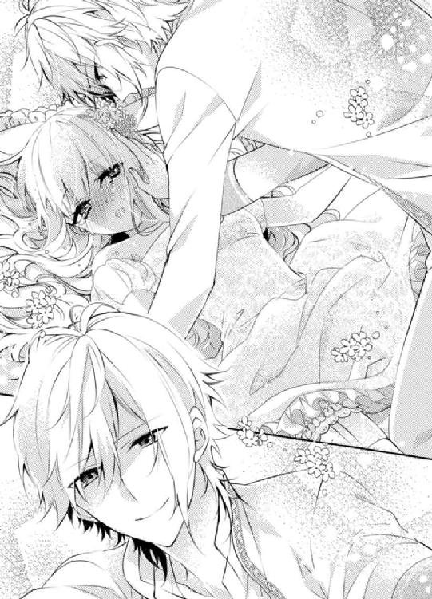
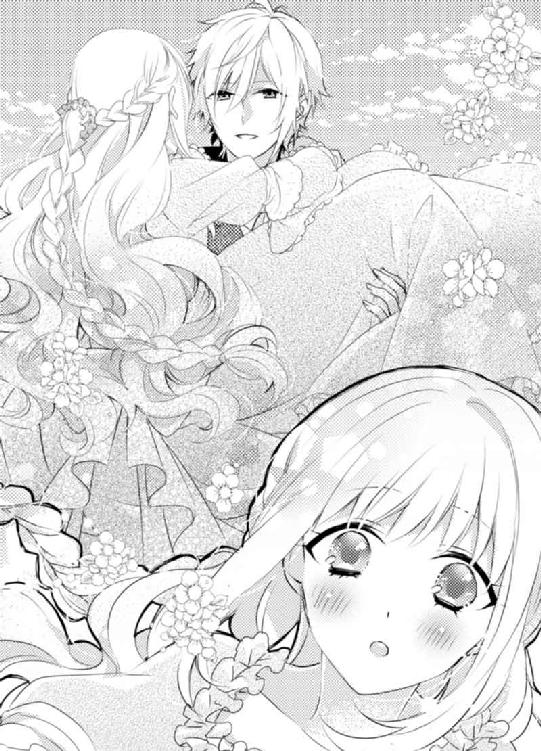
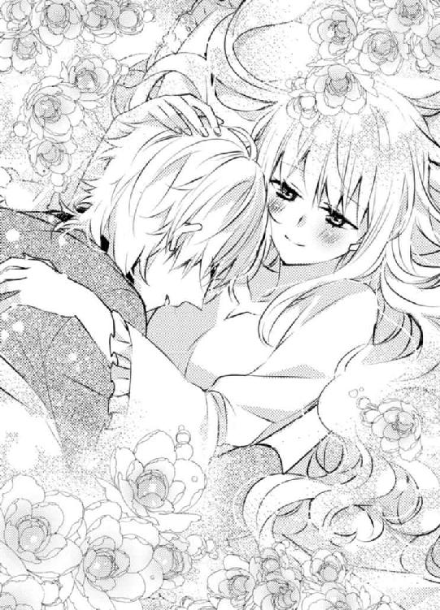

| うたたね公爵の溺愛蜜戯 (蜜愛セレナーデ文庫) | |
| 深雪まゆ | |

本作品の全部または一部を無断で複製、転載、配信、送信したり、ホームページ上に転載することを禁止します。また、本作品の内容を無断で改変、改ざん等を行うことも禁止します。
有償・無償にかかわらず本作品を第三者に譲渡することはできません。
本作品を示すサムネイルなどのイメージ画像は、再ダウンロード時に予告なく変更される場合があります。
本作品は縦書きでレイアウトされています。
また、ご覧になるリーディングシステムにより、表示の差が認められることがあります。
うたたね公爵の溺愛蜜戯
深雪まゆ
イラスト：ヤミ香
プロローグ
グランバリ国、グランフェルト邸にある寝室では、ベッドサイドに灯された明かりが揺らめき、壁に映し出された二つの影が僅かにたゆたっていた。
真っ白なウエディングドレス姿のカタリーナは、すっかりエドワードの色に染め上げられている。
初夜はドレスを着たままの格好で彼の全てを受け入れ、そして絶頂の末に妻となるのがグランフェルトのしきたりだと、ベッドへ押し倒されたときにエドワードから聞かされた。
着衣の乱れはそれほどでもないが、ベッドの上でぐったりと横になったカタリーナの髪はシーツの上へ広がり、頬を赤くして僅かに呼吸を荒げていた。
すぐ脇にエドワードが立っていて、彼は喉から下へドレスのように広がるクラバットをスルリと首から引き抜き、捕食者のような獰猛な瞳でこちらを見下ろしている。
そしてベッドへ手を突くと、カタリーナの頬を手の甲で撫でてきた。ボンヤリしていたが、それが心地よくて猫のように目を閉じてしまう。衣擦れの音と共にエドワードにドレスを脱がされていく。徐々に露わになる素肌は、外気に触れるとひんやりとして気持ちがよかった。しかしカタリーナの体はまるで鉛のように重怠く、自分の意志では腕も上げられない。

「エド......」
「もう今日から、正式に僕の妻になったんだよ。分かる？」
壊れたマリオネットのように手足を彼に動かされ、あっという間にカタリーナは裸に剥かれていた。複雑なカタリーナのドレスを、彼はいとも簡単に解いて脱がせたのだ。
「今度は生まれたままの姿で愛し合うんだよ。もう恥ずかしいことはないね？」
目の前には蜜蝋蝋燭の明かりに染められた、逞しく男らしいエドワードの体があった。肩幅も胸も、腕も腰も、全てカタリーナを守るためにある。そんな美しい体を持つ人が、ベッドへ横たわるカタリーナの脚を掴み、その足先を自分の口元へ持って行った。
さっきまで散々喘がされ、人生で初めて気が遠くなるほどの絶頂を味わわされてぐったりしていたが、彼の今からしようとする行為を悟って我に返った。
「エ、エド！」
カタリーナがそう叫んだときにはもう遅かった。白く細い足首を掴み、足の指を口に入れてしまったのだ。
「だめよ......そんなの、き、汚いわっ」
「汚い？ どこが？ カタリーナは全部綺麗だよ。足の先だって爪の先だって、ここだって......」
そう言いながら足の親指を舐め始めた。暴れればエドワードを蹴ってしまうかもしれない。そう思えば無闇に脚を動かすことも出来なくて、カタリーナは羞恥と舐められるその感覚に耐えていた。
（足の指なんて......そんな、そんなの、だめよ。だって......これ、これ......っ）
足の指など舐められても気持ち悪いだけだと思っていた。それなのにゾワゾワと湧き上がる得も言われぬ快感に、カタリーナは体を震わせている。そんなことはあり得ない、と思うのに、確実に快楽を連れてくるその感触に動揺を隠せない。
「どう？ 気持ちいいだろう？」
カタリーナはその問いに、羞恥で顔を真っ赤にして首を横に振った。しかしそれでもエドワードはやめてくれない。
「君は嘘吐きだね。どうしてそんな嘘を吐くの？」
「う、嘘じゃないわ......だってそんな、──ぁっ！」
じゃあこれはなに？ と空いた方の手で秘裂に触れられた。そこはシーツに垂れるほどの蜜が滴っていたのだ。
「違うわ......それはエドの......あなたの......っ」
「僕の？ 僕のなにかな？」
意地悪く微笑んだエドワードが、濡れた指で秘裂を左右に広げてきた。もちろん足の指を舐めるのも忘れない。彼の巧みな舌技が指の股を何度も往復すると、まるで胸の先を舐められているときのような心地よさが這い上がってくる。
（どうしてなの......？ 足の指が、こんなに、気持ちいい、あぁ......）
ゆっくりと秘裂を撫でる彼の指が焦れったく感じる。もっと強引にしてくれていいのにと、そんなことを考えてしまった。そう思うと我慢が出来なくなり、カタリーナの腰は上下にうねうねと動き出す。自らエドワードの指に淫核を擦り付けた。赤く膨れて凝った肉芽は、滑りを帯びた指先で摩擦されると、鋭く刺すような電流が脳髄を突き抜ける。
「ひっ......ああっ！ んっ......ぁ、ぁあっ！」
思わず足に力が入り、エドワードの口から足先を強引に引き抜いてしまった。
「カタリーナは誘い上手だね。さっきまで僕のを気持ちよさそうに咥えていたここで、もう一回欲しいっておねだりしているのかな？」
「そんな......してなっ、してない......あああっ！」
カタリーナの言葉を無視して、エドワードが柔穴を広げて指を入れてきた。もっと太いものを受け入れていたそこは、熱く熟れてやわらかくなっている。快感を貪欲に欲しがる蜜窟を、エドワードが掻き回し始めた。
「さぁ、僕のかわいい奥さん。夜は長いよ」
ゆっくりと足の間へ腰を滑らせてきたエドワードが、その切っ先をグイッと押し下げ、綻んでふわふわの蜜口に押し当てた。
「エド......エド、ワード......ああ、ああぁっ！」
ぐちゅりと淫靡な音と共に熱く太い硬直がカタリーナの中へ入ってくる。最初はドレスを着たまま肉筒を濡らされ、そして彼の濃い色と匂いに染められた。
今はそれを掻き出すようにしてまた抽挿を始め、接合部分が白く泡のような粘着質なものを作り出している。
「もっとだよ。もっとだ......」
エドワードの妖艶な顔つきと色っぽい声を聞き、カタリーナの狭道はぎゅっと彼の熱塊を喰い締めた。
長い長い夜は、どこまでも二人の熱を冷ますことはない。何度も絶頂を迎えても、カタリーナはエドワードの怖いまでの執着に魅了され続けるのだった。
第一章 初恋は薔薇の香り
アーデルスの西南に位置する街、首都タリンスに春が訪れていた。温帯性気候で夏はとても暑いが湿度は低く過ごしやすい。その代わり冬は冷たい雨が続く。しかしその寒暖差のおかげで農地は潤い、緑はより濃くなった。
アーデルスでもタリンスはとても美しい街として有名だ。
そのタリンスから少し郊外にある領地を管理するのが、フィリアス伯爵家である。邸からはロゴス港の活気ある風景は見えないが、その代わりに広大な面積の森と草原が辺りを取り囲んでいる。もちろん邸の周りには自慢の庭園が広がり、四季に合わせて色とりどりの花が客人の目を楽しませる。
「まあ、なんてことでしょう！ カタリーナお嬢様！」
フィリアス邸に女性の声が響く。そのすぐあとに、パタパタと走る足音が聞こえる。
「トリシャ、そんなに大声で呼ばないで？ はしたないわよ？」
邸のエントランスを入ってすぐのところで、カタリーナ・フィリアスは大きな籐の籠を抱えて立っていた。それを目にした侍女が慌てて近寄ってくる。それもそのはずで、腰まである絹のように柔らかく波打った美しい銀髪には、木の葉や枝が付いている。そして踝まで隠れる薄桃色のドレスは所々がほつれ、土が付いて茶色くなっていたのだ。
そんな姿になった原因は、カタリーナが両腕で抱えている籠の中にある。そこには真っ赤に熟れた野いちごと、白くて小さな野生の花がたくさん入っていたのだ。
カタリーナは野いちごと同じ色の瞳を大きく見開き、不思議そうな表情を浮かべて小首を傾げ、目の前で慌てるトリシャを見つめている。
「大声も出てしまいますよ。朝からお姿が見えないと思ったら、また森にお一人で行かれていたのでしょう？ せめて私にひとことお声をかけてくださいませ」
「そんなに心配することはないのよ？ だってすぐそこの森だもの。行き慣れているわ」
「そうはおっしゃいましても......」
心配そうな表情をしたトリシャが、ああ、どうしましょう、と胸の前で神に祈るかのように両手を組み合わせている。
「だって森へ行くと言えば、あなたはついて来るでしょう？ それでは意味がないの」
カタリーナは呆気にとられる彼女を横目に、さっさと一人でエントランスを抜けてサロンへと向かう。その後をトリシャが慌てて追いかけて来る。彼女の心配性も少し過ぎるのでは、とカタリーナは思っていた。しかし今回のように、心配をかけるようなことをしてしまうカタリーナも悪いのだ。
サロンには長椅子に腰かけ刺繍をしている母の姿があった。
「騒がしいと思ったらカタリーナ、あなた......またなの？」
「だって、外はもう春よ？ お庭の花だってみんな綺麗に咲いているし、お母様も少しはお庭を散歩なさったら？ お部屋の中ばかりだと、コーリャが丹精にお世話したお花が私以外の誰にも見てもらえなくてかわいそうよ」
ペラペラとよく回る口でそう言って母を捲し立てた。彼女はカタリーナの姿を見て、ポカンと口を開けてびっくりしている。
「今日は一段とすごい格好ね。一体どこまで行って来たの？」
「森よ。今日はトリシャの......あ、トリシャ、お誕生日おめでとう」
カタリーナは白くて細い首に巻いていたリボンを解き、籠に入った白い花を数本まとめて結ぶ。そして驚いて固まっているトリシャへ「はい」と差し出した。
「えっ......私に、でございますか？」
「ええ、そうよ。今日がお誕生日だと前に言っていたでしょう？ だから今日はあなたを置いてこれを摘みに行ったの。トリシャへあげる贈り物をあなたと一緒に摘みに行ったのでは、贈り物にならないわ」
そう言ってカタリーナは肩を揺らしてクスクス笑う。
「あ、ありがとうございます。お嬢様」
「ねえ、このお花はなんて名前かしら？ 星の形に似ているわね」
三センチ程の白い六弁花は、細長い花びらを大きく広げている。その形はまさに星のようだった。この花は少し前に森を散歩しているときに見付けたものだ。誕生日の近いトリシャにあげようと目を付けていた。本当ならもっといいものを贈れればよかったのだが、あまり高いものだと他のメイド達から嫉まれる可能性もあるので、なににしようかと考えて悩んだ末にこの花にしたのだ。
「これはオオアマナでございますよ」
トリシャがにっこり微笑んで教えてくれる。まさか彼女の口から野の花の名前が出てくるとは思わず、カタリーナは驚いた。実は花を摘んできたカタリーナも、この花の名前を知らなかった。
「よく知っているわね。もしかしてコーリャに聞いたの？」
「ええ......そうです」
彼女は少し頬を赤くして俯いた。小柄でかわいらしい印象のトリシャが、庭師のコーリャと仲がいいことは前から知っていた。そしてその仲が男女の親しいものであることも。
「このお花はベツレヘムの星とも呼ばれるそうです。お嬢様がおっしゃられた通り、星の形に似ていることからそう呼ばれるとか。花言葉は『純粋』だそうです」
トリシャが愛らしい笑みを浮かべて、照れくさそうにオオアマナの花束を俯き加減で見つめている。
「やっぱりそうなのね。星の形に見えるもの。花言葉まで知っているなんて、トリシャは物知りだわ」
そう言ってカタリーナがクスクス笑っていると、サロンの騒がしさを聞き付けたのか、書斎から父が顔を見せた。長身で体格のいい父は、口元に立派な髭を蓄えている。そこには目立つほどではないが白いものが混じり始めていた。
「カタリーナ......お前はなんという姿なんだ。いい歳の娘が、それではもらい手などないぞ？」
片手に書簡を持ち、カタリーナの格好を頭から爪先まで眺めたあと、重苦しいため息を吐いていた。
「平気よ、お父様。私にはちゃんと心に決めた方がいらっしゃるもの。だからその方に結婚を申し込まれるまで、誰とも親しくしないと決めているの」
「またその話か。それは大昔の話ではないか。子供じゃないのだから、夢のようなことばかり言っていないで聞き分けなさい」
父の強い口調にムッとしたカタリーナは、機嫌が悪くなったときに見せる下唇を噛む仕草をする。
「......いやよ。お父様は分かっていないのだわ。私が、どれほどあの方を待っているかなんて......」
せっかく楽しい気持ちで花を摘み、野いちごでジャムを作ってもらおうと思っていたのに、そんな楽しい気分も小さく萎んでしまう。
しかし父の言うことは間違っていない。社交界へのお披露目が済んだにもかかわらず、舞踏会や夜会に積極的ではないのだ。心に決めた人がいるカタリーナは、どんなに家柄のいい殿方に言い寄られてもまったく靡かなかった。
（だって私には......心に決めた人がいるのだもの。どうして分かってくれないのかしら）
二十一歳になったカタリーナは美しい娘に育ったものの、縁組みだけが未だまとまらず、両親も頭を悩ませている。それは父と母だけでなく、カタリーナの兄も同じように心配しているのだ。
「その、心に決めている人とやらに、結婚を申し込まれても大丈夫なよう、普段からちゃんとするのが務めでしょう？ それなのに、あなたときたらそんな格好で......」
あまりにもっともな母の言葉になにも言えず、カタリーナはしょんぼり肩を落とした。
そうは言われても、春の陽気はカタリーナを部屋になど閉じ込めておけない。綺麗な花があれば近寄って香りを楽しみたいし、街に新しい絹糸が入ったと知れば欲しくなるし、異国のお菓子がかわいらしいと聞けばなんとしても手に入れたくなるのだ。
感情に素直でちょっと欲張りなカタリーナだったが、それでも一つだけずっと我慢して待っていることがある。それが心に決めたある人と結婚することだ。そのある人に結婚を申し込まれるのをもうずっとずっと待っている。
両親に言わせれば、そんな子供の頃の約束など向こうが覚えているはずがない、と言うのだ。なにかとカタリーナがおてんばをするたびにそう言われる。
「どうしたんです？ なにやら賑やかですね」
サロンに響く声に誘われるようにして、二階から下りてきた兄が顔を出す。彼を目にして、カタリーナはパッと一瞬で明るい笑顔に戻る。
「ミルンお兄様！」
カタリーナより四歳年上で、今年二十五歳になる。長身で体格のいい兄は黒々とした髪をオールバックに整えていて、年齢の割には少し幼い印象が残っている。カタリーナには甘く、心配性でなにかと口を出してくるのだ。
「カタリーナがまた......」
母が呆れた顔でカタリーナに視線を投げかける。両親が言うよりも、兄が注意した方が言うことを聞くと知っているのだ。
案の定、兄はカタリーナのみっともない姿を見て、大きなため息を吐いて右手を額に当てた。
「我が妹、カタリーナよ。頼むから、そんな格好になるまで外にいないでおくれ。お前はこの家の太陽だ。その太陽がこの有様では、フィリアス家はどうなってしまうんだ......」
大げさにそう嘆き、額に当てた手を目元へとスライドさせた。まるで本当に泣いているように見える。カタリーナはハッとして抱えていた籠を床に置き、そのまま兄の近くまで駆けよった。
「ごめんなさい。私、トリシャにお誕生日の贈り物をしたくて森へ行ったの。でもちゃんと気を付けるわ。だからお兄様......ミルンお兄様、そんなに悲しい顔をなさらないで？」
「本当に？ 約束してくれるかい？」
「ええ、本当よ。約束するわ」
彼が顔をこちらへ向け、やさしくカタリーナを見下ろしてくる。兄が嘘泣きをしているのは分かっていた。けれどお芝居でも泣かれると弱いのだ。
両親はいつも叱るだけだが、彼は上手にカタリーナの感情を掴んでくる。そして最後には兄の言うことを聞いてしまうのだ。単純といえば単純だが、それがカタリーナのいいところでもある。
「本当に約束してくれるんだね？」
「ええ、本当よ？」
カタリーナは兄の胸に縋るようにして見上げる。彼にやさしい笑みが戻るのを見て、カタリーナもようやく安堵した。
「でも、父さんと母さんの言うことは間違ってないからな？ 早くいい人と一緒になって幸せになって欲しいんだ。そうだ、僕の友人の......」
「お兄様！ また誰かを私に紹介しようと思ってらっしゃるの？ それは無理ですわ」
ここぞとばかりに、自分の友人を結婚相手に薦めてくるのだ。結局のところ両親も兄も、カタリーナに早く結婚して欲しいことには変わりなかった。
「はぁ、いつになったら私はあの人の妻になれるのかしら」
カタリーナが胸の前で指を組み、天を仰ぐようにそう言うと、その後ろで両親と兄がため息を吐く。それがフィリアス家の日常だ。
こんなふうにいつもなにかしらの騒ぎが起こるが、それは笑って過ごせるような小さなつむじ風のようなものだった。
夏が目の前に迫ったある日、タリンス一帯を今までにないくらいの大きな嵐が襲った。時季外れのその嵐は、一晩で領地の景色を変えてしまうほどだった。収穫間近の作物はほとんどがだめになり、大きな川にかかる橋も流されあちこちで氾濫した。近くの村の家屋も何棟か水に浸かり、死者まで出たと聞く。
フィリアス伯爵の領地も尋常ではない被害を受けた。それを復興するためには莫大な費用がかかるため、父と兄がフィリアス邸へやって来た長老組の対応に追われていた。
「フィリアス伯爵、このままでは村もなにも......全部だめになってしまいます。税を納めるどころか、村人の半分以上が生きていけなくなります」
邸のサロンに詰めかけた長老組の一人がそう話を持ちかけていた。他にも年配の男性が二人、カタリーナの父に詰め寄っている。
「そうです。このままでは......私たちはもう......」
「トロン橋まで流されて、街への唯一の橋があれでは、餓死しろと言っているようなものです！」
こんなふうに邸にまでやってきて、父と兄が三名の老人に詰め寄られているのを初めて見た。カタリーナは扉を少し開けて中の様子を窺っている。
（あの嵐は本当にすごかったものね。お庭もかなり被害を受けていたわ）
ハラハラしながら二人を見守っていると、兄が大股でこちらへ向かって歩いてくるのに気がついた。覗いていることがバレてしまい、慌てて扉から離れたが遅かったようだ。
「カタリーナ！ 立ち聞きの上に覗いているのか？ それはいくらなんでも行儀が悪すぎるだろう？ ほら、上へ行ってなさい」
父や村の人間に聞こえないよう、彼は小声でカタリーナを叱る。
「はぁい。でもお兄様、大丈夫なの？ あの嵐でとても大きな被害があったのでしょう？ ここまで村の人が来るなんて、初めてよ？」
「大丈夫だよ。カタリーナはなにも心配することはない」
彼がカタリーナの頭を撫でてくれる。それでも兄の表情には疲労と焦りの色が滲んでいて、ちっとも安心できなかった。けれどこの場を去らなければきっと邪魔になるだろうし、今度は父に怒られてしまいそうだ。
「分かったわ。あんまり無理はなさらないでね？ お兄様もお父様も」
「ああ、ありがとう」
兄と話し終えたカタリーナは、はぁ、とため息を吐くと静かに私室へと戻ったのだった。
そんな重苦しい空気はしばらくの間続き、カタリーナはなにも出来ない歯がゆさに肩を落とす。母はあまり心配していないようで、いつもと同じようにお茶を楽しんだり刺繍をしたりしていた。のんきなものだわ、とカタリーナは思ったが、こういうとき女性が心配したところでなにも出来ないのは分かっている。
「お嬢様、仕方ありませんよ。ああいうことは男の方のお役目ですから」
トリシャはカタリーナの髪を梳きながら、何度もため息を漏らす彼女を慰めた。
「でも、お父様もお兄様も、もう何日も眠っていないのではないかしら。朝食のときもとても疲れたお顔をされていたわ」
嵐の影響は予想以上に広範囲に及んでいたらしく、連日その被害の対応に追われているのだ。
どちらかというと貴族らしい威厳を持たない父は、頼まれると断れない性格だ。現場まで足を伸ばし視察まで行う。その横で兄が冷静に状況を判断し、父に助言をしたりするのだ。
なので今回も、村の長老組にせっつかれ貴族らしからぬ苦労をしているようだった。
「そうですね。早く何とか収拾すればよいですが」
鏡越しにトリシャと話し、カタリーナは不安を抱えたままベッドへ入る。明かりを落として目を閉じても、すぐに寝つくことは出来なかった。
数日後、邸を訪れる人もいなくなり、ようやく落ち着いたのかとカタリーナは安心する。だが朝食のあと、話があるから書斎へ来なさいと父に呼び付けられ、何事かと戦々恐々としながら、忙しなく駆け付けた。
「どうなさったのお父様。とても恐いお顔よ？ なにがあったの？ この間からずっとお邸に来ていた人達はもう来ないのでしょう？ トロン橋も元に戻るって聞いたわ」
書斎には父と兄の姿があった。二人の顔は朝食のとき目にしているが、そのときよりももっと疲れているように見えた。食事はちゃんと摂っているはずなのにどうしてだろう、と不安になる。その不安はカタリーナを早口でしゃべらせた。
「お前をここに呼んだのは、他でもない。ずっと大目に見てきたが、とうとうそのときが来たんだよ」
父の顔を見つめるカタリーナはソファに座ったまま微動だにせず、場の空気がどんどん沈んでいく怖さに体が強ばっていた。
「その、とき？ お父様、なんのお話をなさっているの？」
「今回の大嵐での被害は尋常ではないことを、お前も知っているだろう。うちはそのせいで財政確保にかなり困窮している。ペドラ陛下も気にかけて下さってはいるが、他の地域もかなりの損害を受けていて国の補助だけでは間に合わない。このままでは資金繰りに困って、この邸は手放すことになるかもしれない」
思いがけない話にカタリーナは息を飲む。どんな大変なことが待っているのだろうと固唾を呑んでいたが、それはカタリーナの想像の遙か上をいっていた。なにも言葉が見つからず、普段は輝く太陽のような赤い瞳が悲しげに揺れていた。
カタリーナを真っ直ぐに見つめる父を、今日ほど怖いと思ったことはない。顔が怖いのではなく、なにかよくないことを言われそうな気がして怖かったのだ。
心臓がドクドクと早鐘を打っている。どうして自分がこの場に呼ばれたのか、その疑問ばかりが頭をグルグル回っていた。
「──お前を、結婚させようと思う」
「......っ！」
あまりにひどい父の言葉に、カタリーナは両手で口を覆って苦しげに表情を歪ませる。父の隣に立っている兄は事情を知っているのか、カタリーナの様子を見て同様に苦痛を噛み締めるような顔をして俯いていた。
「そんな......そんなの、いやよ......お父様......！」
カタリーナは立ち上がって父の傍に駆けよった。大きな木製の机を挟んで向こう側に座る父に、懇願するような眼差しを差し向ける。
「だって、私には心に決めた人がいると言ったわ！ それを知っているでしょう？ それなのに、お父様がそんなこと......」
「分かっている。お前の気持ちも分かっている。しかしこのままでは、私たち一家は邸を追われ、果てには伯爵の爵位さえも失うことになるかもしれない。だが、お前が嫁いでくれれば、持参金なしでも......いや、お前と引き換えに資金援助までしてくれると申し出てくれた。内々に、外に漏れぬようにと......向こう側のご配慮まである」
なにもかもがこの結婚で丸く収まるんだ、とそう言われ、それほど追い詰められているのだとカタリーナは知り、言いたい言葉を全て飲み込むしかなかった。
今の話を聞いて、もう決定事項なのだと察した。持参金もなしで、しかも逆に資金援助をしてくれる相手など、きっと意地悪でギラギラしていてカタリーナよりもうんと年嵩の、爵位目当ての下品な人間に決まっているのだ。
カタリーナの唯一の夢だった、待ち望んだ幸せな結婚が一瞬のうちに打ち砕かれた。しかし家のためにはそれも我慢しなければいけない。これ以上のわがままは許されなかった。
「............っ、そんな......」
それでも悲しいものは悲しい。カタリーナは唇を噛み締めて零れ落ちそうな涙を必死に我慢した。
「父さん、カタリーナのお相手というのはどこの方なんですか？」
兄はカタリーナが嫁ぐ以外に策はないと知ってはいたが、相手が誰かまでは聞かされていなかったようだ。大事な妹を嫁に出すのだからと、せっつくような眼差しで父を見つめている。
「お相手は、グランバリのグランフェルト卿だ」
「なっ......！ 隣国の......あのエドワード・グランフェルト卿へカタリーナをやるのですか!?」
兄の驚きにカタリーナも同様に驚いた。まさか父の口からエドワードの名を聞くとは考えもしなかったのだ。そしてその相手が自分の待ち焦がれていた相手だと知らされて、我が耳を疑った。さっきまでの絶望感があっという間に消えていく。
「旧知の仲だった前グランフェルト公爵が亡くなってから、それほど親交はなかった。しかしもうなりふり構っていられないんだ。それでグランフェルト卿に手紙を書いた。そうしたら彼はよい返事をくれたというわけだよ」
「エドワード様......？ 本当に、エドワード様なのね？」
恋しげに呟いたカタリーナは、小さな胸が今にも爆ぜてしまいそうなほどドキドキしていた。頭の先からつま先まで、一気に電流が駆け抜ける。瞳に溜まっていた涙はうれし涙になって零れ落ちた。
「お父様。その縁談、願ってもないことですわ。私、喜んでグランフェルト公爵様と結婚いたします。今すぐにでも、グランバリへ参ります」
カタリーナの言葉に父はホッと安堵の表情を浮かべる。しかし隣に立っている兄は今にも発狂しそうなほど怖い顔で父を見つめていた。妹が大事なのは分かるが、家がなくなるかどうかの瀬戸際に、感情論だけで片が付くはずもない。
（なんてことなの......！ とうとうこのときが来たのだわ。私がずっと待ち焦がれていたあの方と、一緒になれるのだわ！）
ほんの数秒前まで兄と同じく感情を剥き出しにしていたというのに、手の平を返したように今度は足元が浮ついている。
「父さん、あの男だけはダメです！ グランバリでも悪評しか耳にしない男ですよ！ 毎晩のように女漁りをしている好色家だという噂は、隣国のアーデルスにまで聞こえてきてるんです！ そんな男の元へカタリーナをやったら、傷付けられていいようにされるに決まってる！」
兄の激情ぶりにカタリーナは驚いて肩を竦めた。声の大きさもそうだったが、兄の言った言葉にも驚いたのだ。
（悪評の高い男？ 好色家？ エドワード様が？ そんな馬鹿な！）
初めて会ったのは子供の頃だったが、やさしくて優雅でいい香りがして、キラキラしていて美しかった。好色家だなんて、兄は違う誰かと間違っているのでは？ と思った。
「そうは言っても、グランフェルト卿は異例の好条件で資金援助して下さるんだぞ。持参金もなしで婚姻を承諾してくれたのだ。他にこんないい条件があるか？ 断れるわけがないだろう」
「ですが......！」
「カタリーナ、もう一度聞くよ。お前は了承してくれるのだな？」
兄の言葉を遮った父が、立ち上がってカタリーナの目を真剣に見つめる。これが最後の確認だ、と言わんばかりだった。
「ええ。私は問題ありませんわ。むしろ、私が望んでいた結婚が向こうからやって来たのよ。喜んでお受けいたします」
毅然としてそう答えると、兄が重苦しいため息を吐き、頭を抱えて項垂れた。
「よりにもよってあのグランフェルト卿だなんて......。僕は反対ですよ、父さん。カタリーナを嫁がせなくても、なんとか資金を作ってみせます......っ！ だから！」
兄の妹を思う熱い気持ちは分かる。しかしこれはカタリーナが待ち望んでいたことであり、兄にはそのことを分かって欲しかった。
「いいの、お兄様。私がずっと待っていた結婚なの。そのために......色々と準備をしたのよ？」
カタリーナは兄の傍まで行くと、憎々しげに握り締めた手を取った。そしてやさしく包むようにすると、それをそっと自分の頬へ当てる。
「苦手なお裁縫も出来るようになったわ。ダンスもピアノも練習したのを知っているでしょう？ 絵画だって上手くなったわ。全てこの結婚のために準備したのよ。お兄様はダンスのお相手までして下さったでしょう？」
大きな丸い目を瞬きもせずに兄に向け、決意は固いことを分かってもらおうと必死だった。
「カタリーナ......それほどまでに」
兄の目を見つめたカタリーナは、にっこり微笑んだ。自分の望む結婚が同時に家を助けることになるのなら、こんなにうれしいことはないと、そう思っていた。しかし兄が口にした「好色家」という言葉が心の中で引っかかっている。
（エドワード様がそんな人だなんて......どういうことなの？ お兄様はどこからそんな噂を耳にしたのかしら。あの方に限って絶対にそんなことはないはずよ）
ここでそれを兄に聞くべきか否かを迷う。カタリーナのそんな表情に気づいたのか、兄はなにかを言いたげに視線を逸らして瞳を伏せる。
兄の様子を見ていた父が、カタリーナの方を向き直った。
「お前が喜んでくれるなら、父としてこれほどうれしいことはない。なんの問題もない結婚だ。ただ少し、グランフェルト卿には心の病があると聞いている。重篤ではないと知らされているのだが、それでもいいのか？」
「心の病......ですか」
「どんな病なのか詳しくは聞かされていない。心の病を持っているが、それでも公爵の結婚相手としてグランフェルトへ行く、それが条件に入っているんだ」
「父さん！ もしやそれが......っ」
ほら見たことか、と言わんばかりに兄が噛み付いた。しかしその勢いは父のひと睨みで勢いを抑えられる。
「ミルン、お前の言葉には確信があるのか？ ないから噂というのだろう？ なんの根拠もない噂に振り回されては、次期当主の名が泣くぞ」
「......っ！」
反論したい言葉をグッと飲み込んだ兄を見上げ、カタリーナは父の方へと振り返った。
「心の病があるのでしたら、私が、エドワード様のお傍でそれを癒やして差し上げたい。きっとこれは巡り合わせなのですわ」
決心は揺るがない、とそんな勢いで父に詰め寄った。自分の要求と父の要求が一致するなら、いくら兄が反対をしてもそれは覆らない。カタリーナはそれを分かっていた。
「カタリーナがそこまで言ってくれるのなら私も安心だ。お前は我が伯爵家の名を守ることになる。大役だ」
その声にカタリーナを見つめていた兄は、諦めたように父の方へ一度だけ視線を向けたが、しかしすぐに俯いてしまった。兄のことを思うと少し心苦しくもあるが、今はなにをおいてもフィリアス家のことを第一に考えなくてはだめなのだ。
「はい」
決意を込めて返事をして、両手を広げた父に抱き締められる。好色家だという噂も、病のせいでそう言われているだけかもしれない。それに自分の目で確かめるのが一番だとカタリーナは感じていた。
父に結婚の話を聞いてから、カタリーナはグランバリ国へ向けての準備を始めた。持参金はないにしても、持って行きたいものはたくさんある。侍女のトリシャと二人で、一週間かけて荷造りをしたのだった。
◇ ◇ ◇
カタリーナの父と、前グランフェルト公爵が知り合ったのは、アーデルス国王の誕生パーティーだった。カタリーナの父と同じく前グランフェルト公爵もビリヤードに目がなかった。それを知ったどこかの伯爵が「アーデルスで一番上手いのはフィリアス伯爵だ」と口にしたのがきっかけで、後日フィリアス邸にてビリヤードゲームが開かれた。そこでお互いの距離がグッと近づいたらしい。そんなふうに父親同士が知り合いになったのを機に、家同士の交流が生まれた。
そしてカタリーナが六歳のとき、そのグランフェルト邸で運命の出会いをすることになる。それは両親に連れられてその邸を初めて訪れたときだった。小さかったカタリーナは、アーデルス以外の国を見るのは初めてで、とてもはしゃいでいたのを覚えている。
グランフェルト公爵の邸はカタリーナの住んでいる邸とは規模も豪華さも、全てにおいて桁が違っていた。白いレンガ作りの外壁はまるで王様の住む宮殿のようで、入り口の扉には透かし彫りのされた鉄製の装飾が施されてあった。力強く堅牢で、邸全体からは厳かなのに華やかな雰囲気を漂わせていた。
中でもカタリーナがお気に入りだったのは、美しく剪定された背の高い薔薇の垣根で作られた、広大な迷路だった。邸の広いテラスから見下ろせば、その迷路が一望できる。前グランフェルト公爵はこの薔薇の迷路が特にお気に入りだと言っていた。
この邸にしばらく滞在していたフィリアス一家は、飽きることなく毎日なにかしらの催しを楽しんでいる。しかしそれは大人達ばかりで、まだ子供のカタリーナにはつまらないことこの上なかった。
活発でじっとしていられないカタリーナは、この邸で毎日乳母を困らせた。
その日も大人はサロンでおしゃべりしているだけでちっとも相手にしてくれず、退屈したカタリーナは子守の目を盗んでこっそり邸の外へ出た。バルコニーから見たあの迷路にずっと行ってみたかったのだ。大人と一緒でないと出てこられなくなる、と言われていたのに、上から見たときは「このくらいなら平気だ」と思ってしまった。
正規の入り口から入らず、カタリーナは子供が通り抜けられるくらいの穴を見付け、そこへ体を滑り込ませた。通路には真っ白な小石がいっぱいに敷き詰められていて、歩くとザッザッと不思議な音が聞こえる。
「すごぉい！」
そして辺りはどこを見ても色とりどりの薔薇が囲んでいて、まるでおとぎの国へ来たような錯覚に陥った。真っ青な空にカラフルな花が映え、甘い香りはカタリーナの気持ちをドキドキさせる。
（もしも私が一人でこの迷路を抜けたって知ったら、きっとお父様もお母様もびっくりするわ。そうしたらすごいねって、偉いねって褒めてくれるかしら？）
そう思いながらカタリーナは走り始めた。ピンク色のドレスの裾がふわふわと何度も広がり、背中で結んだ白いリボンが靡く。
「あっ！ 行き止まり！」
そう言っては引き返し、カタリーナは走っていた。薔薇の壁はどれだけ走っても途切れなかった。しかし青い空がオレンジ色になったころ、カタリーナは疲れ果てて座り込んでいた。
（どんなに走っても、全部行き止まりばっかりだわ......）
しょんぼりと肩を落とし、寂しさと心細さで泣きそうになっていると、ガサッと物音が聞こえ、カタリーナはビクンと肩を揺らして驚いた。
「......誰？」
不安げな声でそう問いかけると、角を曲がってやって来たのはカタリーナを迎えに来た子守ではなく、金髪で青い目の青年だった。
夕焼けに染まる彼の長い前髪は風に揺れてキラキラ光っている。グレーのウエストコートとトラウザーズを身に着けた青年は、膝まである黒のブーツのつま先でトントンと二度、地面を蹴った。
「こんな所でどうしたの？ もう日が暮れるよ？」
驚いてこちらを見ていた彼が、ふんわりと微笑んで近づいてくる。カタリーナの前で片膝を突き、心配そうに顔を覗き込んできた。
「一人で......出ようとしたけれど......、出口が見つからないの」
「こんなに広い迷路を一人で？」
彼が目を剥いて驚く。大人でもなかなかゴールまでたどり着けないというのに、まだ六歳のカタリーナにはさすがに無理なことだった。
一人で出来ると思っていたのにそれは叶わず、寂しくて不安になって泣きそうになっていたから、彼が現れて心から安堵した。そうすると今度は、緊張でピンと張っていた糸が切れ、思わず涙が零れ落ちた。
「......ふえっ」
「えっ......急にどうしたの？」
慌てた様子の彼がやんわりと抱き締めてくれる。そして温かな胸に抱かれながら、名前はなんて言うの？ と問われた。
「カタリーナ......」
ひくひくと過呼吸のような泣き方をしているカタリーナの背中を、彼はやさしく撫でてくれた。まるで心の中を支配していた不安を拭ってくれているようで、自然とカタリーナも落ち着いてくる。
「僕の名前はエドワード。アーデルスからお客様が来ていると聞いていたのに、伯母のところへ行っていたから帰ってくるのが遅くなってね。出迎えも出来なかったんだ。だから遅くなったけど......よろしく、カタリーナ」
体をゆっくりと離し、彼がやんわりと微笑んでくれる。青い瞳は昼間見た空よりも深く、吸い込まれてしまいそうなほど美しかった。
「エド、ワード......？」
「そう。エドって呼んでくれていいよ。それにしても君の瞳って、夕焼けのように綺麗だね。髪は絹のように細くて柔らかい」
カタリーナと同じように瞳を見つめていたエドワードがそう言って、髪に触れてくる。今まで感じたことのないドキドキに子供ながら体が熱くなった。
エドワードに見惚れてボンヤリしているカタリーナの額へ、彼がそっとキスをしてくれる。小石の道に座っているカタリーナの手を取り、まるでお姫様を扱うようにして立たせてくれ、出口へいこうか、と言って歩き始めた。
「しばらく滞在するんだよね？ じゃあ僕が色々案内してあげるよ」
彼の言葉に嘘はなく、その日から毎日のようにカタリーナはエドワードについて邸内を回った。
翌日、カタリーナは邸の中でもかなりの広さがあるギャラリーで、絵画を見ながら二人で話をしていた。どの絵も細かい彫り物で装飾された額縁の中に収められている。
絵画の並ぶこの部屋は天井が高く壁は真っ白だ。そのせいか飾られてある絵がとても引き立って見える。部屋の真ん中にはドーナツ型の洒落た椅子が置いてあり、どこに座っても絵画が楽しめるようになっていた。
一枚の絵の前で、エドワードが幼い頃、最愛の母を亡くしたことを教えられる。
絵画の中の彼の母は微笑んでいて、やさしそうなところがエドワードに似ていた。彼女は膝の上にカタリーナと同じくらいの歳の女の子を抱いている。
「これは誰なの？」
家族の肖像画の前で、カタリーナはエドワードを見上げた。髪はブロンドだが、面差しはカタリーナに似ている。ふんわりとした印象で、母親にも似ていてとてもかわいらしかった。
「これは僕の妹。リザというんだよ」
絵画を見上げるエドワードの表情はどことなく寂しそうで、しかし愛しさに満ちあふれた面差しを見せる。まだ幼いカタリーナは、彼がどんな気持ちなのかを酌み取れなかったが、小さな胸がきゅうっと苦しくなるのを感じていた。
「リザはこのお邸にいるの？」
「いるけど......会うことは難しいんだ。あの子は体が弱くてね、あまりベッドから起き上がれない。最近は寝ている時間が長いから、僕もあまり会えなくて寂しいんだ」
椅子へ腰かけたエドワードは、目の前にある家族の肖像画を見上げている。四人が描かれたそこには幸せそうな雰囲気が漂っていて、見ているだけで心が温かくなった。
「じゃあ、私は会えないのね」
「......うん。ごめんね」
カタリーナは座っているエドワードの前に回り、絵を見ている彼の顔を両手で挟んだ。そして青い瞳が涙で揺れているのを確認して、少し動揺してしまった。
なんとかしたい、そう思ったのだが、自分に出来ることは限られているし、どう言葉をかけていいかも分からない。だから自分が母にされて安心することをしようと思い立った。
「いいのよ。エドは悲しいの？ ここが痛いの？」
カタリーナは彼の胸に片手を当てて撫でるようにして動かす。そして撫でた手を目の前でぎゅっと握り、カタリーナは口の中へなにかを入れる仕草を見せ、ごっくんと飲み込んだふりをする。
「カタリーナ？」
「これでエドの悲しみはなくなったよ？ 私が食べちゃったから。もうここは、痛くない？」
そう言って再び彼の顔を覗き込むと、潤んでいた瞳から一筋の涙が零れ落ちた。金色の長い睫毛が何度か瞬くと、目の前でその水滴がはじけ飛ぶ。
「エド？」
「君って子は......」
喉の奥で小さくそう呟いたエドワードに、カタリーナは抱き締められていた。十歳も年上の大人のエドワードが、まるで母に縋る子供のように思える。そしてカタリーナは自分が母親になったつもりで、今度はやさしくエドワードの頭を小さな手で撫でた。
「大丈夫よ。もう平気。悲しいのも痛いのも、わたしが全部食べちゃったよ」
「そうだね。ありがとうカタリーナ。僕が悲しいと分かってくれた......ありがとう」
ぎゅっと力強く抱き締められたあと、エドワードがゆっくり体を離す。そしてまだ涙に濡れた睫毛を瞬かせながら口を開いた。
「君が素敵なレディになったら、僕と結婚してくれる？」
「今でも素敵なレディよ？」
カタリーナが唇を尖らせながらそう言えば、彼は一瞬びっくりした顔を見せたが、すぐに肩を揺らして笑った。
「どうして笑うの？ 本当のことだわ」
「ごめんごめん、そうだね。言い方を間違えたよ。カタリーナが素敵な大人のレディになったら、結婚を申し込むよ。そのときは僕のお嫁さんになってくれる？」
「大人のレディに......なったら？」
「うん。大人になったら」
彼の言葉にぽわっと頬が熱くなった。きっと白い肌はピンクに染まっていることだろう。いつもなら恥ずかしくて逃げてしまうが、カタリーナは逃げなかった。顔は笑っているのに彼の瞳が本気だったからだ。
「いいわよ。エドのお嫁さんになってあげる。私はそれまでに素敵なレディになるためにダンスもピアノもがんばるわ！」
とびっきりの笑顔で精一杯背伸びして答えると、エドワードも同じ笑顔で応えてくれる。そうして家族の肖像画のある前で、二人だけの密約をしたのだった。
しかしグランフェルト邸に滞在した一週間はあっという間に過ぎてしまった。エドワードとの約束を胸に、カタリーナは後ろ髪を引かれる思いでグランバリを後にした。
第二章 再会と蜜愛の始まり
エドワードとの出会いからずいぶんと長い時間が過ぎた。初めのうちはエドワードに手紙を書いたりしていたのだが、カタリーナが十歳になった頃、彼からの手紙でリザが亡くなったことを知らされた。このことで彼がどれほど心を痛めているのかと考え、カタリーナもまた胸を締め付けられる思いだった。
──お父様、私、グランバリへ行きたいの。お願い、お父様！
エドワードの元へ今すぐにでも駆け付けたかった。しかしまだ十歳のカタリーナの言うことは通らず、グランバリへは行かせてもらえなかった。
カタリーナは自分の部屋の窓から彼がいる方向を見つめ、毎晩ベッドへ入る前に祈った。しばらくしてエドワードから返事が届いた。そこには「少しの間、手紙を書けない」と記されてあり、カタリーナはとてもショックを受けた。しかしもっと辛いのはエドワードだ。それを思ったカタリーナは、胸が張り裂けそうな思いで手紙を書くのをやめたのだ。それっきり、エドワードとのやりとりもなくなってしまい、ただただ、あの日の約束を待つだけの日々になった。
時が過ぎてもカタリーナの胸の中には彼の面影が消えることはなかった。いつかエドワードが約束を果たしてくれる日を、求婚してくれるその日を待とう、と心に決めたのだった。
そして年月は流れ、社交界デビューを済ませたカタリーナは立派な大人になった。しかし心の中はまだあのときのまま、エドワードを想い待っていた。もしも彼が他の女性と結婚したなら、そのことは社交界で話題に上がるはずだ。
カタリーナはそういうことに敏感な兄にそれとなく聞いてみたりした。だが兄もそんな話を耳にすることはないと言う。もし他の誰かと婚約をしてカタリーナのことを忘れているのなら、それはもう仕方がない、そう思った。しかしその様子もないのだ。だから余計に不安な気持ちが心を覆いつくす。
──もうエドワードは私のことなど、忘れてしまったかもしれないわね。
口では諦めていないと言いながらも、内心はそう思って半ば諦めかけていた。しかしその矢先にフィリアス家を救う救世主として彼が現れ、奇しくも昔の約束を守ってくれるなんて思いもよらない出来事が起きた。
（フィリアス家を助けるためだけの求婚？ それともエドワード様は私との約束を覚えていたのかしら）
そんなこともふと頭を過ぎったが、けれど思いもよらぬ条件ではあったがカタリーナの望みは叶えられた。だから素直にうれしかった。エドワードに心の病があったとしても、フィリアス家のピンチを救ってくれと頼まれたからだったとしても。
隣国のグランバリはフィリアス邸からはとても遠い。両親とも兄とも離れて暮らすのは不安があるし、全く習慣の違う国での生活は慣れるまで大変なことばかりだと思う。それでもあのときのエドワードのプロポーズを思い出すだけで、今でも胸の奥が熱くなる。
たった六歳の子供のカタリーナに、彼は真剣な瞳で求めてくれたのだ。だからきっとどんなことにだって耐えられるとカタリーナは思っている。今の今まで、誰からのアプローチも断り続けたのがその証しだった。
急ピッチで荷造りを終えた出発前日、いつも以上に豪華な夕食を家族で楽しみ、フィリアス家での最後の晩餐を頂いた。兄は相変わらず心配そうで、カタリーナの傍を片時も離れなかった。
──向こうで辛くされたら、すぐに帰ってくるんだぞ？ それが出来なければ手紙を書け。僕がすぐに迎えに行く。
兄は同じことを何度もカタリーナに言って聞かせてきた。そんな兄には悪いが、気持ちはすでにグランバリに向いてしまっていたし、頭の中はエドワードのことでいっぱいだった。
（大丈夫よお兄様。私はきっと......いいえ、必ず幸せになるわ）
出発当日の朝、馬車に乗る前に父と母、そして兄にお別れの挨拶をした。
「お父様、お母様、それからお兄様。カタリーナはエドワード様のところへ行きます。今日までありがとうございました」
「長旅になるが、気を付けるのだよ。向こうに着いたら手紙を書きなさい」
「あまりはしゃぎすぎないようにね。あなたはすぐに無茶なことをするから」
両親が今にも泣きそうな顔でカタリーナを抱き締めてくる。さすがにその顔を見ると寂しさに胸が痛くなった。
「カタリーナ。何度も言うけれど、辛くなったらすぐに、すぐに帰っておいで。ここはいつだってお前の帰る場所だからね」
兄にも抱き締められながら、カタリーナの笑顔はさすがに泣き顔になってしまった。
家族との別れを済ませて馬車に乗り込み、グランバリに向かって走り始める。
見慣れた風景が馬車の窓を流れていく。住み慣れた邸も濃い緑の森も、青い空と太陽の光を浴びた美しい草原も、これからはしばらく目に出来ないだろう。そう思えば少し感傷的な気持ちにもなったりするが、カタリーナはきゅっと唇を噛んで前を向いた。
「お嬢様、大丈夫ですか？」
隣には今回の結婚で一緒に行くことになった侍女のトリシャが座っている。彼女がいれば心強い。そんなトリシャがカタリーナの繊細な感情を読み取ったのか、声をかけてくる。
「大丈夫よ。少し寂しいけれど。でもドキドキとワクワクの方が勝っているわね。トリシャは住み慣れたお邸を出るのは不安じゃない？」
「私はカタリーナ様のお側にいられるのなら、どこへでもご一緒したいです。それが私の幸せです」
しかし彼女がガーデナーのコーリャと恋仲なのは知っていた。だから今回の結婚で一度は侍女としての付き添いをカタリーナは断ったのだ。だが彼女は侍女としての仕事をさせてください、と言い、トリシャの意思を汲んでグランバリへ連れて行くことになった。
「そう。そうならいいの」
自分が二人の間を裂いてしまったのでは、とそんなふうにも考えたが、もう今さら後戻りは出来ない。数時間かけて走り続けている馬車は、もう見知らぬ景色の中にいたのだ。
遠くの方には白く化粧をしたような尖った山々が連なり、その手前には空と同じ色の真っ青な湖が広がっている。馬車の窓を開ければ冷たい空気が入って来て、驚いたカタリーナは慌てて閉めた。
「冷えて参りましたね。これを」
トリシャが大きめのブランケットをかけてくれる。もうアーデルスではないのかと思うと少し心寂しくなったが、今は一刻も早くエドワードに会いたかった。
この日のために新調したドレスに身を包んだカタリーナは、高鳴る胸にぎゅっと手を押し当てる。デコルテの大きく開いた薄いピンク色のドレスは、とても上品で女性らしくカタリーナを演出していた。
胸の中央部分には大きなピンクのリボンがついていて、そこからフリルがセパレートするように下まで続いている。薄いピンクの布にはかわいらしい薔薇の刺繍がたくさん施されていた。袖口に向かって広がるアンブレラスリーブの先にも、大きめのリボンが付いている。
（第一印象って大事よね。素敵になったって、かわいらしいって思ってもらいたいもの。このドレスを選んでよかった）
馬車はグランバリに入ってすぐの街で一泊し、翌朝早くに再び出発した。このまま順調にい行けば、今日のお昼くらいにはグランフェルト邸に到着できるだろう。
街中を進むと、昨日目にした尖った山の尾根のような特徴的な屋根の建物が目に付いた。それは全てカタリーナの瞳の色と同じ美しい赤だ。立ち並ぶ家々は全て外側の柱が外部へ露出し、その柱と柱の間の外壁は白や薄桃色の漆喰で塗られていてとても神秘的だった。
「綺麗でございますね」
「そうね。私たちの国はほとんどがレンガ作りですものね」
そんな会話をしながら馬車は少し郊外へと進む。そして見えてきたグランフェルトの邸を目にして、カタリーナの心は躍り、じんわりと懐かしさも感じていた。
（とうとう来たわ、エド）
馬車が邸へ近づく。左にはカタリーナが六歳のときに一人で入り込んで迷ってしまった薔薇の迷路が、あのときと同じ姿でそこにあった。そしてアプローチを抜けた先で、邸から出てくる金髪碧眼の男性の姿が目に入り、カタリーナは馬車の座席から腰を浮かせた。
「エド！」
「お嬢様、まだ揺れますから、お座り下さいませ」
トリシャに手を掴まれて、なんとか着席する。
彼の姿を遠目に見ただけで自分を抑えられないくらい高揚した。その興奮は想像以上で、カタリーナは馬車の中でソワソワ落ち着かない。
そしてようやく馬車が停止し、御者が扉を開けてくれた。窓から見えるエドワードの顔に、あのときの面差しが重なり気持ちがはやる。
御者の手を借り、ドレスと髪をふわふわ揺らしながら馬車を下りた。
「長旅お疲れ様。カタリーナ」
目の前にはずっとずっと会いたかったエドワードが立っていて、カタリーナはうれしさのあまり失神しそうだった。
彼は茶色のトラウザーズに同じ色のウエストコート姿だった。首元は紫色のネクタイが締められている。しかしカタリーナは、彼の服装よりも先にエドワードの美しい瞳と風に揺れる髪に目を奪われた。
「エド......」
小さい声でそう言ったが、最初の挨拶は肝心だから、と母に言われた言葉を思い出した。周囲に数人の使用人が並んでいることに気づき、姿勢を正してエドワードと向き合うと、レディらしく腰を落とし頭を垂れた。
「お久しぶりでございます、グランフェルト公爵様。カタリーナ・フィリアスです。今日からよろしくお願いいたします」
丁寧に挨拶をして顔を上げると、エドワードがうれしそうに微笑みながらこちらを見下ろしていた。少し長めのサラサラした髪は七・三で分けられ、その隙間からは額が見える。美しい金髪は昔と変わらず健在だ。丸く大きかった瞳は大人っぽく切れ長の涼しげな雰囲気になり、目尻は彼の性格を表すかのように緩やかに垂れ下がっていた。
「素敵なレディになったね。カタリーナ」
「エド、ワード様......」
ドキドキしながらそう呼ぶと、彼はクスクス笑い始める。なにか変なことを言ったかと不安になった。
「さっきは僕のことをエドと呼んだのに、今はエドワード様、なのかい？」
「さ、さっきのは......思わず出てしまって。でもきちんとした場所だから......と、思い......」
緊張するやら恥ずかしいやらで、カタリーナはしどろもどろだ。まさか自分がこんなふうになるとは思っていなくて、余計に焦ってしまう。再会したときのことを頭の中で想像してあれほど練習してきたのに、全部思った通りにいかなかった。
「いいんだ。エドと呼んで。丁寧語もなくていい。昔と同じように友達のように話してくれると僕もうれしいよ」
「分かったわ。エド。これで......いい？」
「いいよ。その方がいい。さあ、こんな所で立ち話はやめて中へ入ろう。今日からここが君の家になるよ」
彼がグランフェルト邸を見上げる。それに釣られてカタリーナも彼の視線の先を見た。
カーブを描くように左右対称の入り口外階段から、大きな正面玄関が見える。壁は真っ白で陽の光を反射させ、まるで邸全体が光っているようだ。
街中でも見たあのとんがり屋根がここでも見られる。小さい頃に来たことがあるといっても、さすがにそこまで記憶は鮮明じゃない。なのでやはり少し新鮮だった。
「こっちだよカタリーナ。邸の中を案内する。ここに来たのは子供のとき以来だろう？」
「ええ、まだ小さかったから、あまり覚えていないの」
記憶の中ではもっと大きな邸だと思ったが、あのときは自分も小さかったのできっとそう感じていたのだ。今思えば、馬車の中から見たあの迷路も、今はそれほど大きいと感じない。しかしエドワードだけは違った。あの頃よりもずっとずっと魅力的な男性になっていて、カタリーナはまた彼に恋をした。
「それじゃあ、行こうか」
「きゃっ！」
彼はそう言って、突然カタリーナを横向きに抱き上げてくる。ふわりと体が浮き上がり、驚いてエドワードの首にしがみついてしまった。
「な、なに......を！ エド!?」
「一番先に案内するのはバスルームだよ」
「バスルーム!? な、なぜ!?」
すぐ目の前にある彼の顔を見つめ、カタリーナは恥ずかしくて顔を紅潮させた。使用人達はこちらを見ないようにしているが、トリシャにはしっかり見られていた。彼女もカタリーナと同じように顔を赤くしている。

（どうしてこんなっ。恥ずかしい！）
言葉なくエドワードの首元に顔を埋めたカタリーナは、黙って大人しくされるがままになっている。彼はカタリーナを抱き上げたまま歩き始め、サロンを抜けて二階へと上がっていく。廊下を突き当たって右に折れると、そこは白いタイル張りの明るい場所だった。
「さあ到着」
ゆっくりとカウチに下ろされると、カタリーナは落ち着かない様子で辺りを見回した。後ろには大きな湯船がある。湯は張られていなかったが、一人で入るにはとても広い。
周囲の壁には鏡が貼ってあり、バスタブを中心にぐるりと囲んでいた。室内が映し出されてその空間をよりいっそう広く見せていて、明かり取り用の大きな窓の向こうには、美しい庭が一望できる。
カタリーナがあまりに立派なバスルームに見とれていると、湯を張った桶を持って使用人が入ってきた。足を洗うのだと思ったが、なぜかその桶を置いて使用人は出て行ってしまい、エドワードと二人だけになった。
「あの......エド？」
意味が分からないままでいると、彼が目の前に跪きふわふわのドレスを捲り上げはじめる。
「エドっ！ あのっ......エド！」
焦ってドレスの裾を必死に押さえた。
「大丈夫。全部僕に任せて。君を誰にも触らせたくないんだ。君はもう今日から僕のものだろう？」
ドレスの中からカタリーナの足を引っ張り出し、細い足から靴を脱がせてしまう。まさかこんなことをされるとは思わなくて、驚きと羞恥でカタリーナは固まってしまった。
「ほら、足をここに入れて......」
裸足になった足をゆっくり湯桶に入れられた。寒かったので足先が少し悴んでいた。だから温かな湯が気持ちよくて体が震える。
「温かい......」
「気持ちいい？」
彼の指がカタリーナの足を撫で始めた。踵から足の裏をなぞり、少しくすぐったくてビクンと反応すると、そのたびにエドワードがこちらを見上げてくる。うれしそうな、それでいて得意げでもあった。
「とても気持ちいいけれど......でもエドがすることではないわ。言えば侍女のトリシャがしてくれると思うの」
「いや、ダメだよ。この細くて白い足に触れるのは僕だけだ」
彼はそう言いながら、足の指の間を何度もくすぐるように指先を往復させ始めた。しかし次第におかしな気持ちになってしまう。
（なにかしら......これ。変な感じ）
体の奥がムズムズするような不思議な感覚だった。そうしているうちに足を洗い終えたエドワードは、大きなタオルで水分を拭き取ってくれる。
「ありがとうエド。とても気持ちよかったわ」
彼の自分に対する態度を見ながら、アーデルスを出たときから気になっていたことをエドワードにぶつけてみることにした。
「エドは......どうして私と結婚してくれるの？ 昔の、あの約束を守るため？ それとも、本当の親切からフィリアス家を、助けてくれたの？」
彼は俯きながらカタリーナの足をタオルで包んだまま、その手の動きを止めた。沈黙がバスルームで重く広がる。カタリーナは不安と緊張で高鳴る胸をグッと押さえた。
「気持ちよかったのなら、僕もうれしいよ」
いくつも質問をしたのに、彼はカタリーナの望む答えをくれなかった。明らかに避けられたのだと知って胸の奥が痛くなる。かといって、しつこく問い詰める勇気は、さすがにカタリーナにはなかった。
（答えてはくれないのね......）
しょんぼりと肩を落としていると、カタリーナの足を持ち上げた彼が、その足先へ唇を寄せてきた。まさかの出来事に息を飲み、思わず両手で自分の口を押さえる。驚きすぎて心臓が止まってしまうところだ。
「エド、なんてことを......！」
「僕の愛するカタリーナ。今日からよろしく」
キスをしたあとそっと足を下ろされて、カタリーナは気恥ずかしく思いながらも小さく頷いた。昔からエドワードはこんな人だっただろうかと、頭の中であのときの彼を思い出してみるが、よく考えてみるとロマンチストなのは変わらないかも知れない。
（私に答えをくれないのに......それなのに、足先にキスをして愛してると口にするのは、なぜ？）
何度もそう考えながら、カタリーナは目の前でこちらを見上げる彼を見つめていた。
邸に来て二日目、来週には盛大な結婚式が執り行われる予定だ。式まで日取りがほとんどなく、カタリーナは毎日大忙しだった。ドレスは新しいものを新調するのではなく、エドワードの母君が着たものを仕立て直すのだという。そのドレスは代々グランフェルトへ嫁いできた女性が受け継ぐようにして着用されると教えられた。
カタリーナはそのドレスの仕立て直しのために、トリシャと私室で準備をしていた。ベッドやソファの上には、ウエディングドレスを着るときに必要なアイテムが散乱している。形の違うコルセットや、白い手袋、ヴェール、パールのネックレスにティアラ。鏡の前で何度もそのティアラを頭の上へかざしてみる。
これはカタリーナの母が持たせてくれたものだった。母が結婚するときに着けていたものらしい。代々受け継がれるものを身に着けて式を挙げられるのはとても喜ばしいことだ。準備は大変だが、カタリーナはそれさえも楽しんでいた。
「カタリーナ様、先ほどウエディングドレスを見て参りましたが、本当にとても素敵でしたわ」
「そうなの？ でもドレスを受け継ぐなんて素敵な風習よね。あれを着て今は亡きエドのお母様もお式をなさったのよね」
そう思うと絵画でしか見たことのないエドワードの母親が傍にいるような気がして、カタリーナは胸が熱くなる。本当はエドワード自身も自分が結婚する瞬間を、両親にも見せたかったのではないだろうかと思った。そのドレスを着ると同時に、自分がフィリアス家の人間ではなく、グランフェルトの人間になるのだと実感する。
パニエを身に着け、コルセットの紐をトリシャに結んでもらう。これは苦しいのであまり好きではないが仕方がない。必死に息を詰めていると、コンコンと扉をノックする音が聞こえて二人は同時に振り返る。
「カタリーナ、入っていいかな？」
エドワードの声だった。二人は驚いて顔を見合わせ、トリシャは慌てて扉へ、カタリーナは急いでベッドの影に隠れる。
「エドワード様、お嬢様は今お着替え中で......」
「所用で外に出ていて、帰ってきたらカタリーナの姿がないんだ。そしたらここでドレスのサイズを合わせているというから来てみたよ。あれ？ カタリーナ？」
トリシャの静止を聞かずに扉を開け、彼は部屋に入って来てしまった。この部屋にウエディングドレスを置いていなくて心底よかったと思う。式の前に新郎がウエディングドレスを目にするのは縁起が悪いとされている。もちろん、挙式当日までに花嫁がドレスを着ている姿を見るのもタブーだ。
「エドっ！ 来ないでっ......私、みっともない格好なの。こんな姿は見られたくないわ」
近づいてくる足音にパニックになってしまう。縁起が悪いなどという問題ではなく、今は素直に下着姿を見られるのが恥ずかしいのだ。
「平気だよ、カタリーナ。君がどんな格好だって僕は君だけを愛しているから。だって僕の奥さんだろう？」
エドワードの声はやさしくて、思わず見せても大丈夫かも？ と錯覚してしまう。しかしカタリーナは思い直し、さすがに再会してすぐこんな姿を見せるのは本意ではない、と首を横に振った。これで彼に嫌われてしまったら、やはりこんな女性はいやだと言われて、家に帰されでもしたら、フィリアス家は終わってしまう。
「で、でもダメよ！ 私、本当に......いやなの......」
ベッドの脇までやって来たエドワードの気配が止まった。カタリーナの涙声に気がついたのだろう。分かったよ、と少し寂しそうな声が聞こえて、彼の気配が遠のいていく。そうすると今度は怒らせたかも？ と心配になり、こっそり頭だけをベッドの脇から出した。
エドワードの落ち込んだ背中を見ると、カタリーナの胸の奥はズキンと痛んだ。扉を閉めたトリシャが振り返り、仕方ないですよ、と慰めるような表情で微笑んでいる。
カタリーナはゆっくりと立ち上がり、悪いことをしたかもしれない、と考えながらトリシャと作業を再開する。
「どうすればいいのかしら......エドは、私のことを子供っぽいと思ったかしら」
「そんなことございませんよ。女性が着替えているお部屋に入って来られるのはさすがに......。それにまだお式の前でございますから。ご心配でしたら、あとでお部屋に行かれてはどうですか？」
「......そうね。あんなに肩を落として心配だわ。でも着替えの最中に入ってくる男の方も初めてよ」
「そうですね」
トリシャがクスクスと笑う。この衣装合わせが終われば、美味しいお茶をエドワードと楽しもう、とカタリーナは思った。
部屋からエドワードを追いだしてしばらくして、衣装合わせを終わらせたカタリーナは邸の中を歩き回っていた。サロンにも書斎にもギャラリーにもエドワードの姿がないのだ。
（もしかして、本当に怒らせてしまったのかしら。お話をしたかったのに）
邸の中を全て探し終えたカタリーナは、とうとう使用人が使う階段を下り始める。すると下からふくよかな体型の家政婦長が上がってきて、ばったり出くわした。
「カ、カタリーナ様！ こんな場所へいらしてはいけません！」
彼女は驚いた感じで声を荒げた。カタリーナはその声のせいでびっくりして飛び上がってしまう。
「でも、エドを探しているの。見なかった？」
「旦那様なら、先ほどお庭の方へ行かれたのを見ましたが......」
「そう、えっと......」
「家政婦長のアメリーでございます」
「ありがとう、アメリー！」
元気にお礼を言ったカタリーナは、慌ただしく階段を駆け上がった。そしてエントランスを抜けて外へ出る。庭といっても広大な場所だ。もっと詳しく聞くべきだった、と思ったが、戻るのは面倒なのでそのまま走り始めた。
まずは邸の脇にある大きな温室へ足を向ける。ガラス張りの向こうにはカラフルな実を付けた木がたくさん並んでいて、外から見るだけでも楽しくなる。こんなに大きな温室は初めて見るので中に入るのは勇気がいったが、カタリーナはそっと扉を押す。
「重い、扉ね......っ」
そう言いつつなんとか扉を開くと、暖かい空気が全身を包みホッとする。背の高い緑の濃い木々が見えて、アーデルスを思い出した。木の間を抜けていくと、目の前には赤くて小さな花がまるで絨毯のように広がっているのが目に入る。
「すごいお花......」
思わずそんな言葉が漏れた。
真ん中にはベンチがあり、エドワードが背中を向けて座っているのが見える。ホッとして近づくと、カタリーナの足音に気づいた彼はゆっくりとこちらを振り返った。
「カタリーナ......」
「さっきはごめんなさい。私、エドには着替えている姿なんてみっともないから、見られたくなくて」
「いいんだ。いいから......ここへ、隣に座ってくれないか？」
彼に促されて、白い背もたれのあるベンチへ腰を下ろす。するとエドワードは、カタリーナの膝の上へ寝そべるようにして頭を乗せてきたのだ。彼の両腕は抱き付くように細い腰へ周り、お腹にキスされそうな勢いだった。
「エ、エド!?」
太股の上へ上品に乗せていた両手は、びっくりした拍子に小さく万歳してしまった。
「とても眠いんだ。しばらくこうしていていい？ カタリーナに触れていたいんだ。お願いだよ」
そう話す彼の声はすでに眠そうで、カタリーナが承諾する前にストンと眠りに落ちてしまった。膝の上にエドワードの頭の重さと温かさが染みてくる。
突然のことでドキドキが止まらなくて、挙げてしまった手をどこに置いたらいいのか分からず右往左往してしまう。そして意を決してゆっくりと右手でエドワードの肩に触れた。左手の指先で頬にかかっている髪をやさしくどかすと、彼の口元が少し微笑む。
「そんなに眠かったのね、エド」
寝ている彼にそう声をかけたが、起きる様子はなかった。
静かな寝顔を見ながら、エドワードはどんな思いで今回の結婚を決めたのだろう、と再び疑問が湧き起こる。
（昨日、思い切って聞いたけれど......返事をくれなかったわね）
彼が答えられない理由を色々と考えてみたが、カタリーナにはこれといって思い付くことはない。そしてそれほど言えない事情があるのだろうか、とにわかに不安になる。
（やっぱり、お父様がお手紙で援助を申し出たから......仕方なく、なの？）
気持ちよさそうに眠る子供のようなエドワードの頭をやさしく撫でながら、堂々巡りのように同じ質問を頭の中で繰り返していた。
結婚前の男女が一つ屋根の下にいるとしても、決して同じ部屋では眠らない、というのがマナーだ。しかし膝の上でうたた寝をしたエドワードは、その日から毎夜カタリーナの部屋へやってくるようになっていた。
「カタリーナ、まだ起きているだろう？ 入るよ？」
彼は「どうぞ」という返事を聞く前に、いつも扉を開けてしまう。そうやってカタリーナを驚かせるのだ。
「エド......婚前に女性の部屋へ来てはだめよ？」
「少しだけだよ。傍にいて、君に触れていないと不安になるんだよ。だから少しだけ」
彼の「少しだけ」に弱いカタリーナは、エドワードにそう言われ暖炉の前のソファで夜な夜な語らうようになっていた。それだけならいいのだが、必ず彼はカタリーナの肌に触れたがるのだ。髪はもちろん、頬や首筋、触るのは指でだけではなく唇でも触れてくる。もちろん愛の言葉と一緒に。
それが恥ずかしくてどうしようもないカタリーナは、こんな状態で初夜が迎えられるのだろうかと、今からとても不安に思っている。
今夜は一体どうなってしまうのだろう、と日に日にエスカレートしていく行為に戸惑っていた。
「とても綺麗だね、カタリーナ。こっちへ来て」
隣に座ると、エドワードに肩を抱かれ体を引き寄せられた。彼の腕の中に閉じ込められると、甘い香りにふわんと鼻腔をくすぐられ、それだけでカタリーナの脳芯は蕩けさせられる。
寝る前の薄着の格好は、彼の体温を敏感に感じてしまいドキドキは抑えられない。
「エド......」
「結婚前の君にこんなことはいけないけれど、少しだけ......予行練習をしようか」
ああ、また、とカタリーナは思う。少しだけ、と言われ断り切れず、カタリーナは顔を上げて彼を見つめる。青い瞳に暖炉の灯りが反射して、不思議な色合いになっていた。拒否する言葉を口に出来ずにいると、彼の顔がゆっくりと近づいてくる。──そして。
「ん......」
震える唇に彼の少し冷えた唇が触れた。その瞬間、体中にジン......とやわらかい電流が流れる。息をしていいのか、目を開けていいのかも分からず、緊張のままカタリーナはエドワードのシャツをギュッと握り締めた。
「緊張しているね。キスは初めて？」
すっと唇が離れて、エドワードは囁くように聞いてくる。彼が話すたびにカタリーナの唇には彼の吐息がかかった。それが恥ずかしくて目を開くと、愛しげにこちらを見つめるエドワードの顔がある。
「ええ......。初めてよ」
「そう。じゃあこういうのも、初めてかな？」
彼はピンクのネグリジェの裾をたぐり上げはじめて、カタリーナはびっくりして体を強ばらせた。彼の指先が脚に触れる。ゆっくりとやさしく撫でながら、それが上へと迫ってきた。
「エ、エドっ！ あのっ！」
「大丈夫。ここにいるのは僕たちだけだよ？ それにもうすぐ夫婦になるのだから、このくらいは普通なんだよ」
「そう、なの？」
「そう、みんなしているよ」
彼の言葉が本当なのかを確かめたくても、この場所には他に誰もいない。今はとにかく恥ずかしくて、それどころではなかった。
ふくらはぎを撫でていた手がスルスルと上がってきて、膝を色っぽく掠めて太腿に触れてくる。それ以上は......と思っていると、もう片方の手で俯いた顔を上げさせられた。
「んん、んっ......」
唇を食べるような勢いでキスをされる。少し開いたその隙間から舌が入ってきて、エドワードの舌がカタリーナのぎこちない舌を絡め取るようにして濃密な口づけに変化した。あまりに気持ちよくて、初めてなのに自分から舌を動かしてしまった。
（ああ......これはなに？ すごく気持ちがいい）
暖炉の薪がパチンと爆ぜる音と唾液の絡む音が部屋に響き、体の芯がじわじわと熱くなるのを感じていた。
「や......だめ、エド......」
ゆっくりとソファへ体を横たえられる。薄い布越しに押し当てられる彼の存在感に混乱していた。結婚前の男女がすることではないと分かっているのに、彼の勢いに押し流される。
「このままではきっとお互いに眠れないよ。だから、発散させよう」
「なに、を......ぁっ」
ネグリジェの裾が捲られて太腿が露わになる。思いがけない場所がぬるついていて、カタリーナは恥ずかしさに頬を染めた。これ以上見られたくないと抵抗するように、両手でドレスを押さえる。膝をしっかりと閉じて気づかれないようにしていたが、エドワードは全てお見通しのようだった。
「ここが、熱くなっているよね？ 僕と同じだよ。この香油を使おうね。カタリーナにはローズの香りがよく似合う」
いつの間に持ってきたのか、エドワードの手の中にはクリスタルガラスで出来た香油瓶が握られていた。それを開け、外気に晒された白い太腿にポタポタと落とされる。あたりにはふわんと薔薇の香りが広がり、肌がヌルヌルと滑りを帯びた。
「エド、エド......なにをするの？ 私、怖いわ......」
「大丈夫、怖くなんてないよ。お互いに体が火照って眠れないだろう？ だから気持ちいいことだけしよう」
彼はカタリーナの足を揃えたまま膝を横に倒してくる。上半身は上を向いたままだったが、腰から下を捻られた状態になり、カタリーナの右肩が僅かに浮き上がった。その上へエドワードが覆い被さってきて、至近距離に彼の顔が近づきドキッとしてしまう。
香油を使ってこれから一体なにが始まるのか、訳が分からないカタリーナは不安げな瞳でエドワードを見上げることしか出来ない。
「気持ちいい......こと？」
「そう、気持ちいいこと。痛くないよ。だからそんなに不安そうな顔をしないで」
「だって......ぁっ！ なに、やっ......あっ！」
下半身を探っていた手が、お尻が見えるくらい大胆にドレスを捲り上げる。寝るときはネグリジェ以外は身に着けない習慣だ。こんなふうにされてしまえば秘所を彼に見られてしまう。緊張と混乱でどうにかなってしまいそうだ。羞恥で死んでしまったらどうしよう、と思いながらカタリーナは両手で顔を覆った。
そしてしばらくして、太腿の間に熱いものが滑り込んでくる。
「......っ！」
驚いて体が跳ねる。思わずエドワードの顔を振り返ると、彼が興奮に濡れた瞳でこちらを見つめていた。
「平気だよ。こうすると......どう？」
閉じた脚の間に太く熱いものが行き来し始める。それがちょうどいい具合にカタリーナの秘裂を摩擦し、得も言われぬ快感に体がヒクと反応した。
「そこ、だめ......あっ......あんっ......なに、なにをしているの？」
「ああ......かわいいね。そんな反応をするのかい？ 頬が真っ赤だ。君の情熱的な瞳と同じ色になっている」
そう言いながら首筋に唇を押し当てられ、ちゅっと強く吸われる。少し痛かったが、そのあとはジンジン熱くなった。
エドワードの手がネグリジェの上から乳丘を揉み、薄い布の上から舐めてくる。唾液が染みつき、ピンと勃った先端に布が張り付いた。舐められると体がヒクつき、自分ではどうしても抑えられない。
「あっ......ぁっ！ や、んっ！ そこ......しないで......そんな、だめっ」
「だめなんて言わないで。カタリーナ。僕は君を大事にしたい。片時も離れたくないのに、部屋から僕を追い出した。君のどんな姿を見たって、幻滅なんてしないと言ったのに......」
じゅっじゅっと布の上から先端を強く吸われ、痛痒いような快感が生まれる。ずっと太腿の間には熱塊が行き来していて、カタリーナの秘裂を弄ぶ。次第に香油の滑りではなく、カタリーナ自身の蜜愛でその雄茎が濡れ始めた。
（これって......エドの、あなた......なのね）
男性のそれを初めて知ったカタリーナは、体が燃えるように熱くなるのを感じていた。照れくさくてそれ自体を見ることは叶わないが、足の間を行き来する楔は熱く大きく硬いものだった。
まさかエドワードにこんなことをされるなんて思いもしなくて、そしてその行為があまりに気持ちがよくて、自分でも信じられないくらい淫靡な声が出て耳を疑った。
「いっ......あぁん、あっ、あっ、やだ、もう......私、へん、よ......」
「そうかい？ 僕ももう少しで出るよ」
体が揺さぶられる。視界がガクガクと揺れる中、汗に滲んだエドワードの額と美しい金髪が、暖炉の火でオレンジ色に染まるのを見ていた。体の奥から湧き上がる心地よさにカタリーナの息は弾み、腰が不規則に痙攣し始める。
「これはなに？ 私......どうなるの？ あっ、やっ......あぁっ！」
下腹部が融けてしまったような感覚に目眩がした。激しく体を揺さぶっていたエドワードも動きを止める。香油でぬるつく太腿は彼の熱い飛沫で濡らされた。
「エド......私、どうしてしまったの？」
はぁはぁ、と息の切れる中、彼にそう尋ねると「熱を発散したんだよ」と返ってきた。
（でも、もっと体が熱くなったわ。発散できていないのではないかしら）
ボンヤリする頭の中でそんなことを考える。
「君は乱れるととても色っぽいね。これでゆっくり眠れるよ。愛しいカタリーナ」
言われてみると体は気怠く、睡魔はもうすぐそこまで来ていた。意識が霧散していく中、最後にエドワードがなんと言ったのか分からないまま、カタリーナは眠ってしまったのだった。
第三章 ウエディングと不穏な気配
エドワードに初めての淫ら事を教えられてから、カタリーナは毎夜、彼の熱に浮かされていた。しかしそれだけではない。カタリーナに触っていたいんだ、と言った言葉通り、エドワードは四六時中カタリーナの傍を離れなかった。
昼食後のお茶の時間も、庭を散歩する間も、読書をしているときも、隣にはずっとエドワードの姿があった。
──カタリーナ、僕の膝の上へ来て。
彼に言われるまま横向きに膝へ座ると、その状態で紅茶を勧められた。あるときはそのままの格好でリンゴのフリッターを生クリームたっぷりで食べさせられたこともある。クリームの乗ったそれを口へ入れられ、そのままエドワードの指までしゃぶらされた。もちろんカタリーナの口の周りにもクリームがベッタリ付き、まるで子供に戻った気がした。
──ほら、口を開けて。ああ......いい子だね。君に付いてしまったのは、僕がちゃんと舐めてあげるよ。
──や......ぁ、んっ、エド、それ......恥ずかしいわ。
今までこんなにはしたない食べ方をした経験はないし、とても人に見せられるような行為ではなかった。きっとカタリーナの両親が知ったら、あまりの行儀の悪さに気絶するだろう。
またあるときは......。
──庭へ出るの？ じゃあ僕も一緒に行くよ。
そう言って、彼と一緒に美しい庭を散歩する。随所にあるガーデンチェアに座っては、エドワードが頭をカタリーナの膝の上へ乗せた。そうすると彼はあっという間に眠りに落ちてしまい、子供のような寝顔を見せる。昼と夜に見せるあまりに激しいギャップに、カタリーナの心は虜になった。
（彼が好色家だなんて、絶対に嘘だわ。それに心の病だなんて聞かされたけれど、そんな様子は全くないわよね。きっと根も葉もない噂だったのね）
しかしやさしくされればされるほど、愛していると彼が口にするたびに、うれしいのに複雑な気持ちになる。あのときカタリーナの質問に答えをくれず、彼の本心が分からないままだったからだ。
庭を散歩しながら、隣を歩くエドワードをチラリと見やる。それに気がついた彼はニコリと微笑むと、カタリーナの華奢な体をグッと引き寄せた。
「カタリーナ、遅くなったけれど、まだ君にちゃんと言っていなかった言葉を贈ろうと思う」
「なに、かしら？」
もしかしてカタリーナが一番聞きたかったあの答えなのか、とドキッとする。頭一つ分背の高いエドワードを見上げた。彼はカタリーナの隣にいたが、立ち止まり向かい合う格好になる。
（話したいことって、私がこの邸へ来たときに聞いた、あの返事よね？ やっと話してくれるのかしら）
完全にあのときの質問の答えだと思い込んでいるカタリーナは、固唾を呑んで彼の言葉を待っていた。するとエドワードは目の前で片膝を突く。そして細くて白い指を取られ、彼は自らの口元へ近づけてキスをしてきた。
「......っ」
「僕と結婚して下さい」
上目遣いに色っぽい視線を向けられる。
それは予想外のプロポーズだった。
カタリーナの小さな胸は、否が応にもときめいた。カタリーナの返事を待つ間、二人の間を爽やかな風が駆け抜けていく。
「もちろんだわ。その為に私はここにいるのだもの。喜んであなたの妻になるわ、エド」
カタリーナはにっこりと微笑んだ。
「ありがとう」
その答えを聞いてエドワードの瞳に安堵が広がった。それとは逆に、カタリーナはうれしいはずなのに、素直に喜べない自分に困惑している。
しかしそれを悟られぬように微笑み、再び寄り添いながら庭を歩き出したのだった。
結婚式の前日まで、エドワードの甘ったるい愛で蕩けさせられたカタリーナは、真っ白なウエディングドレスに身を包んでいる。
代々受け継がれる純白のウエディングドレスは、大急ぎでカタリーナの体に合わせて仕立て直された。ウエストできゅっとしまったスタイルに美しく生まれ変わり、ドレスは理想的なＡラインを描いている。胸元から首元までは薔薇のラッセルレースで覆われ、その隙間から覗く素肌はとても慎ましく見えた。後ろ部分は刺繍がＶ字に大きくカットされていて、カタリーナの綺麗な背中が露わになっている。
髪はアップにまとめられ、銀髪には白のリリーの花が綺麗に飾り付けられていて、歩くたびにヴェールがふわふわ揺れた。
フィリアス邸からは両親と兄が駆け付け、エドワードの知り合いや友人などが顔を揃える。
鏡の前で念入りにチェックしていると、ノックの音が聞こえた。
「お兄様！」
部屋に入って来た兄の姿を目にしたカタリーナは、ドレスの裾を抱えるようにして持ち上げ、駆け寄った。
「元気にしていた？ ああ、カタリーナとても綺麗だ」
「ええ、元気よ。お兄様も？」
彼の目を見て、兄の聞きたい内容をなんとなく察する。きっとエドワードのあの噂を心配しているのだ。だからカタリーナは兄に聞かれる前にこう言った。
「エドには一途に愛されているわよ？ だからお兄様の心配することなんてなにもないの」
一瞬、驚いたような顔を見せた兄だったが、カタリーナの頬を愛しげに撫でてから、ホッとしたような表情に変わった。
「そうか。そうなんだな」
「お兄様は大げさよ？ エドは本当に紳士な方だわ。子供みたいにすぐ眠ってしまうけれど、やさしくてかわいらしい方よ」
カタリーナは兄の手を取り、本当に安心して、というようにして握り締めた。
そのあとは両親とも顔を合わせ、邸や領地が元に戻りつつあることを聞かされた。エドワードの援助が本当にフィリアス家を助け、家族がこうして今までと変わらぬ生活をしていることに幸せを感じる。両親と兄が慌ただしく部屋から出て行き、一足先に結婚式場へ行ってしまった。
彼らが馬車に乗り込んでいるその様子を、部屋の窓からそっと見下ろす。そして神様に感謝を伝えるためカタリーナは胸の前で指を組んだ。
「神様、本当にありがとうございます。私をエドワードに会わせてくれて。そして家族を助けて下さいました。私は幸せです。......本当に幸せです」
窓から入ってくる爽やかな風に吹かれていると、その風までもカタリーナの結婚を祝福してくれているように思えて心が温かくなる。
「お嬢様、お時間です」
部屋へ入ってきたトリシャにそう声をかけられた。
「ええ、行きましょう」
美しく着飾ったカタリーナは馬車で教会へ向かう。グランフェルト領にある伝統的なマリア・タレンスの建物はまるで淑女のように白く美しい。教会内は細やかな装飾が随所に施され、神聖な雰囲気に満ちている。
ただひとつ、エドワードの心の中の真実は、まだカタリーナには告げられていない。この結婚式で正式な伴侶となるのに、どこか素直に喜べないでいた。
エドワードは正装しカタリーナの隣に立っている。白のトラウザースと縁の部分に金の刺繍が入った白のジャケットを身に着けていた。首元にはクラバットが締められ、それを留めている石は彼の瞳と同じ色だ。
赤地に金の縁取りが入ったサッシュには家紋の刺繍がされている。それを左の肩から斜めにかけ、そしてグランバリの公爵しか着けない赤のベルベットマントを纏っていた。
いつもよりも凜々しく、そして荘厳で輝いて見える。どこででも寝てしまうかわいらしい彼も、カタリーナの寝室で淫らなことを仕掛けてくるエドワードも、今の輝く姿も全て愛していると思った。
エドワードと愛を誓い合い、キスでそれを封印した。
なにもかもが完璧な結婚式だ。
「カタリーナ。今日の君は世界で一番美しい。あまりに綺麗だから、君から目を離すことが出来ないよ」
「ありがとう。エドもすごく魅力的だわ」
真っ青な空色の彼の瞳を見つめると、吸い込まれそうな感覚になる。
ずっと結婚したかった相手との夢にまで見た瞬間だ。だから兄から聞かされたエドワードの噂も、父から聞かされた心の病のことも、今だけは忘れよう、と心に決めて、カタリーナは優雅に微笑んだのだった。
式を終えたカタリーナとエドワードは、真っ白なウエディングカラーの馬車で教会を出た。そのまま街を周回すると、人々がローズペタルを二人に振りまいてくれた。辺りには薔薇の香りと色とりどりの花びらが舞う。多くの人々から祝福を受け、夕方前に二人は邸へと戻ってきた。
その夜は祝いのパーティーが朝まで繰り広げられる。新郎新婦はそのパーティーが終わるまで着替えてはならないという風習があるらしく、カタリーナは一人で歩くのが困難なロングヴェールを纏ったままパーティーに出席した。
「これではダンスも出来ないのね」
大広間でみんなのダンスを眺めながら、隣に立っているエドワードに話しかけると、そうだね、とにっこり微笑まれた。
人々は二人を祝いに来ているのか、それともこのパーティーを楽しみに来ているのか分からない様子だった。しかしたくさんの人がカタリーナとエドワードに祝いの言葉を伝えにやってくるので気が抜けない。
そうして盛り上がるパーティーが終盤へ差しかかると、みんな疲れてしまったのかダンスをする人はなくなり、穏やかな歓談へと変わっていった。さすがにカタリーナもヘトヘトだ。
「僕たちはそろそろ部屋へ戻ろうか」
「でも、朝になるまでドレスは脱げない決まりではないの？」
「そんなことを言っていたら、僕の愛する妻が倒れてしまうよ。少し顔色がよくないからね」
そう指摘され、疲れすぎてそんなことさえ自分で気づかなかった。それにこの場をどうやって退席したらいいのかも分からない。
「さてみなさま、今宵は私たちの結婚式へお越し下さってありがとうございます。パーティーは朝まで続きますが、僕と妻はこの辺でお暇させて頂きます」
エドワードが慇懃にそう声を上げた。中には「最後までいないのかい？」という声が上がった。
「僕たちのパーティーは、二人だけの寝室でゆっくりと最後までさせて頂きます。どうかそれだけはご容赦くださいませ」
そんな言い方をしたらみんなに分かってしまう。両親や兄も来ているというのに、カタリーナは顔を真っ赤にさせて俯いた。
周囲の人々から、言葉の意図を察したやさしい笑いが起こる。
「では、失礼します。みなさまは最後までお楽しみ下さい」
エドワードがカタリーナの腰に手を当てる。近くにいたトリシャがすぐにロングヴェールを取ってくれた。これがあると一人で歩くことが出来ないのだ。
軽く会釈をし、彼に促されて歩き出し、回り階段で上階へ向かう。
人の目がなくなってホッとすると、気が抜けたのか足元がふらついた。
「おっと、大丈夫？」
「ええ、ごめんなさい。やはり少し疲れたみたいだわ」
「そうだろうね。この辺りの結婚式はみんなこんな感じなんだ。カタリーナの所は違うのかい？」
「私の国では、朝までドレスを脱げないなんてことはないのよ」
「そうなのか。だったらとても辛かったね」
彼はそう言いながら、一人では歩きづらい純白のドレス姿のカタリーナを横向きに抱き上げた。
「きゃっ！ エド、大丈夫？」
「平気だよ。君はドレスと同じくらいの重さしかないから」
クスクス笑いながらそう言われ、そのまま寝室へと連れて行かれた。
今日から二人で一緒に同じベッドで寝ることになる。そして結婚したその日は、夫婦の儀式、初夜が行われるのだ。
部屋に入ると、そこは準備万端に整えられていた。白を基調としたオーガンジーの絹布で天蓋がかけられてあり、ベッドは金の縁取りと豪華な彫り物があしらわれたそれは美しいものだった。部屋のあちらこちらに灯された蜜蝋蝋燭が甘い香りを漂わせ、ロマンティックな雰囲気を演出していた。
「なんて素敵なの......」
「この部屋が今日から僕たちの寝室だよ。君に内緒で用意していたんだ」
「そうなの？ 全く気がつかなかったわ」
彼に抱えられながら、ベッドの近くまでやって来ると、そっと下ろされる。蝋燭の明かりが白いドレスをオレンジ色に染めた。やんわりと細腰を引き寄せられ、エドワードと見つめ合う。そして自然と顔が近づき唇が重なった。
「......んっ、ふ、んんっ」
キスはエドワードのおかげでいくらか慣れてきた。それでもまだドキドキはするし、最初に唇が触れる瞬間は体に電流が走ったようにビリッとなる。しかしそのあとにやってくる気持ちよさや陶酔感を思うと、無意識に体の芯が疼いてしまう。
「このドレスを着たまま、君と一つになるんだよ。それがこの家のしきたりだから」
「この、まま......？」
「そう、このまま。ここで真っ白なカタリーナを僕の色に染める。いいね？」
彼の言葉にカタリーナの胸の奥はきゅんとなる。とうとう今夜、エドワードに全てを捧げるのだ。そう思うとにわかに鼓動が早くなった。
（これが結婚。とても幸せな気持ちになるのね。でも......。ああ、もう考えるのはよしましょう）
これまでも幸せに思う瞬間はあったけれど、今ほど実感するのは初めてだった。それと同時に、寝室ですることを思えば、不安と緊張が一気に高まる。
「ええ、喜んで。でも、私......今とても怖いの。その......どうしていいのか分からないわ」
「大丈夫。ずっと練習してきただろう？」
彼がいたずらっ子のような笑みを浮かべる。それがなにを意味しているか分かったカタリーナは、ぶわっと頬を赤くさせる。
確かにこの結婚式の日まで、毎夜カタリーナの部屋へ通い続けたエドワードから、どこがどんなふうに気持ちがいいのか、今まで知らなかった淫らな行為を教えられたのだ。
「いじわる言わないで、エド」
「ふふ、そうやって恥じらう君はかわいらしいね」
ベッドの上へ座らされたカタリーナは、ゆっくりと体を押し倒される。小さな胸がドキドキと早鐘を打った。
彼の唇がカタリーナの鼻のてっぺんに小鳥が突くように口づけてくる。大きくてやさしい手が頬を包み、見つめ合いながらそっと唇を重ねた。真っ青な彼の瞳が熱情に揺れる。
緊張で硬くなるカタリーナの舌を愛撫するように、彼がやわやわと自分の舌で絡め取っていく。
「は......ぁん、んっ......あ、んんっ」
くちゅ......と淫靡な唾液の音が聞こえて、カタリーナの腰の奥が疼き始める。ドレスのフリルの壁を崩すように、彼の手がパニエの中へと入ってきた。すぐに太腿をいやらしく往復し始める。
「あ......ん、や、ぁ......」
「カタリーナの声、好きだよ」
耳元でエドワードが甘く低く囁いた。たったそれだけであらぬところが熱くなり、疼いて濡れてきている。足をもじもじと動かせば、それが擦れてもどかしさが生まれた。
（どうしよう......私の体、変だわ）
婚前にエドワードからされた淫らな戯れのときよりも、背筋がビリビリ痺れてたまらない。そうしているうちに、胸の中央で結ばれているリボンを解かれ、締め付けが緩くなる。その隙間からエドワードの手が滑り込んだ。
「ひっ......ぁっ、あっ......ん、やっ」
指先で硬くなった先端を摘まれた。そこを弄られると甘い刺激は腰の奥に溜まる。エドワードの唇が首筋から耳朶を舐め、そしてそのまま鎖骨へと下りてきた。レースの波をくぐり抜け、彼の舌がカタリーナの凝りに辿り着く。
「あっ、あぁっ！ は......っん、はぁ......ぁ！」
敏感なそこを舌が何度も往復する。そしてときどき歯を立てられて、痛かったり気持ちよかったり、おかしくなりそうだった。太腿の間にエドワードの手を挟んでいたが、それが秘裂に触れ、カタリーナの愛蜜で滑りがよくなる。
「や......それ、や......っ」
「嫌じゃないだろう？ 今日は初夜なんだから、この先をするんだよ」
胸の先を弄んでいたエドワードが体を起こし、そのままドレスの中へ頭を突っ込んできた。両脚を大きく開かされ、ドロワーズの裂け目から舌を中へ入れられる。ねっとりとした感触が肉芽から柔穴までを舐めた。
「は......あぁっ、恥ずかしい......エド、エド......」
下腹部で子犬がミルクを舐めるような音が聞こえる。敏感な秘珠を舌先で転がされ、カタリーナの腰は不規則に震えた。後頭部をベッドへ擦り付けると、綺麗に結い上げていた髪が乱れて広がる。
「さあ、君を僕の色に......するよ」
彼はそう言って体を起こす。口元は淫らに濡れ光り、エドワードはそれを親指の腹でグイッと拭った。
ドロワーズの裂け目には熟れて秘裂があり、ヒタリとそこに彼の熱塊があてがわれる。その先にやってくる痛みを覚悟して、カタリーナはベッドシーツを握り締めた。
（どうしよう......怖い）
どんなに大丈夫だと言われても、やはり未知の体験は怖かった。体の震えが興奮なのか恐怖なのか判断できない。そんな中でもカタリーナを見下ろす彼の瞳が、愛に満ちていることだけは分かった。
怖がっているカタリーナに気づいたエドワードは、大丈夫、と小さな声で囁いたあと、あてがっていた楔を蜜窟の奥へ突き刺してきた。
「ぁ......っ、ひ、ああっ！ ああぁっ！」
大丈夫と言っていたエドワードの言葉は嘘だった。彼の雄は想像以上に逞しく、カタリーナの未開の場所をグイグイと押し広げたのだ。引き攣るような声が出て、息を飲んで大きく目を見開いた。
「い......たぁ......ぃ」
震える声でそう言うと、彼の灼熱の肉棒が動きを止める。ドレスの向こうに見えるエドワードが、心配そうな顔でこちらを覗き込んでいた。
「痛い？ でもすぐによくするから。カタリーナ、大丈夫だよ。乱暴にはしない」
ズズッ......と再び動き出すと、さらに奥へと彼が進んでくる。カタリーナの膝を持ち上げ、気を散らすようにその膝頭へ何度もキスをしてきた。
「本当に......？ ねえ、エド......あっ、あぁっ、エドっ！」
下腹部に満ちる彼の熱にドキドキする。奥まで穿たれて背中がまるでアーチ橋のように反り返った。彼の先端がカタリーナの最奥に口づける。
「気持ちよくするよ、カタリーナ」
ドレスとカタリーナの足を抱えたエドワードが、ゆるゆると肉塊を引き抜く。もう少しで全部出て行ってしまいそうな所で押し留まると、同じ早さで再び蜜道へ押し込まれた。
初めは痛かったそれが、徐々に違うものへと代わり始める。カタリーナの愛蜜に濡れた肉茎が滑らかに抽挿され始めると、痺れるような心地よさが腰に広がった。
「あっ、あっ、なに、これ......エド。へん、変なの......！」
体を揺さぶられ、彼の下生えが赤く膨れたカタリーナの淫芽をこれでもかと擦ってきた。快楽を求めた肉棒が、再び激しく狭隘な蜜窟を押し広げてくる。
「ひぁっ！ やっ！」
カタリーナの悲鳴のような声が寝室に響き、指先までジン、と痺れるような快楽が駆け巡った。
「今から君に、僕の......っ」
彼の腰がうねるようにして回る。狭道でグンと大きくなった雄が蜜壁を抉ると、膨らんだ快感がカタリーナを支配する。花芯も蜜壁も喜悦に打ち震える。初めての感覚に今度はそれが怖くなった。
「いやっぁ、やっ！ あっ！ ああぁっ、ああぁん！」
目の前がチカチカする。体中がまるで燃えるように熱くなったかと思うと、低く唸るような声と共にエドワードの激しい抽挿が止まった。そのあと体の奥でじわりと広がる温かさに、カタリーナの目から涙が零れ落ちる。
（私......エドの色に染められたんだわ......。ああ......エド）
痛みなどもうなかった。なにも考えられなくなるような恍惚と全身を満たされた気持ちよさに、うれしさと感動でまた涙があふれた。
「カタリーナ......」
ドレスの海にエドワードが体を重ねてくる。泣いてるの？ と少し心配そうな顔をした彼に、うれしくて、と伝えれば、エドワードは満足げに微笑んだ。
その唇がカタリーナの涙にキスをして、そして少し塩味のする唇にもまたキスを落とした。
甘く愛されたその夜、深い時間に目が覚めたカタリーナは、隣に寝ているはずのエドワードの姿がないことに気づいた。どこへ行ったのかと心配になってベッドから抜け出し、静まりかえった邸の中を探し始める。
まずは彼が以前使っていた寝室、書斎、そしてサロン。しかしどこにも姿がない。
（エド？ どこへ行ってしまったの？）
不安になりながら慌ただしく、けれど周囲の人間を起こさないよう邸の中を歩き回った。ようやく彼の姿を見付けたのはギャラリーだった。エドワードは妹の肖像画の前でボンヤリ立っていたのだ。
（どうしたのかしら？ こんな所で）
そっと近づいたが、エドワードはカタリーナに気づかない。彼の腕を静かに掴んでも、エドワードは肖像画を見上げたまま微動だにしなかった。
「エド......？ どうしたの？ こんな所で......どのくらいここにいたの？ 手がとても冷たいわ」
カタリーナの問いかけにも反応せず、彼は全く動かなかった。怖くなってエドワードの前に回り、顔を見上げる。彼の視線は肖像画に向かっているが、どことなく生気が感じられない。
「エド......、エド？ ねえ、エド！」
体を揺さぶってみても彼は正気づかない。無表情のままでエドワードが縋りつくカタリーナを見下ろした。しかし彼の瞳にカタリーナは映っていない。
（もしかして......これが心の病、なの？）
カタリーナはどうしていいか分からず、何度も彼の名前を呼ぶ。しかし反応はなく、そのままフラフラと歩き始めてギャラリーを出て行こうとする。
「エド、どこへ行くの？ ねえ、エド......」
半分泣き出しそうになりながら彼の後を付いて回る。トリシャを呼んだ方がいいのか迷ったが、呼びに行っている間にエドワードがどこかへ消えてしまいそうな気がして、それも出来ない。他の人間を起こして大事にもしたくなかった。
彼はフラフラ歩きながらサロンへと下りて行った。そして窓の前で立ち止まり、外を眺め始める。
「リザ......僕を、許して欲しい」
エドワードがなくなった妹の名前を呟いた。彼の頬をホロホロと涙が零れ落ちる。驚いたカタリーナは言葉をなくした。見てはいけないものを見てしまったような、そんな気持ちになったのだ。けれどこのまま彼を放っておくわけにもいかず困ってしまう。
「リリーの花を、君に......君に......」
夜空には丸く明るい月が輝いている。エドワードの金髪にその月光が反射し、暗闇に浮かび上がっていてとても美しかった。こんなときなのに見惚れてしまう。
（妹さんが亡くなったことは、彼にとってとても大きなことだったのね）
意識がないまま歩き回り、妹の名を口にして涙を流すほどなのだ。
どうしよう、と思っていると、彼はまた歩き始める。静かに階段を上り、二人で愛し合った寝室のベッドへと戻っていく。その間、一度もカタリーナと目を合わせなかった。
「エド......」
エドワードの後ろをついて寝室へ戻ってきたカタリーナは、彼の隣へ静かに体を横たえる。涙の跡を残した頬を、カタリーナはそっと拭った。
（心の病......それがこれだとしたら......。私に、あなたの心を癒やすことが出来る？ エド自身は、このことに気づいているの？）
その夜、彼の手を握り締めたまま、カタリーナはしばらく寝つくことが出来なかった。
今朝、目が覚めるとエドワードの姿はなかった。トリシャに聞けば、国王陛下が猟に行くため、そのお供として朝早く王宮へ出向いているのだと聞かされた。広いベッドに一人でいる寂しさに胸が苦しくなる。
そして昨夜のことを思い出すと、彼に尋ねていいのかさえ分からずカタリーナを悩ませた。
（ほとんど眠らずに王宮へ行ったのね。エドは大丈夫なのかしら。心配だわ）
モヤモヤした気持ちを持て余した昼下がり、なにもしていないとエドワードのことばかりが心配になる。落ち着かなくて仕方がないと思ったカタリーナは、刺繍でもしようと自室で道具箱を取り出した。
全体は金色の布地がベースになっていて、蓋には白いローズの彫刻がはめこまれてある。小さなピンクの薔薇と白いレースに縁取られていて、とても華やかな柄の箱だ。刺繍をするための全ての道具がこの中に入っていて、カタリーナはこれがお気に入りだった。
（どんな柄にしようかしら）
箱を開けてシルクの糸を選んでいると、いつも使う濃いピンクの絹糸が見当たらなくて、グランフェルト邸に来る前に使い切ったことを思いだす。違うもので代用しようかとも思ったが、少しは気分転換でもしようかという気になった。
「そうだ。街に出ましょう」
この邸へ来るとき街中を走ったのを思い出した。そのときに絹糸の専門店を見かけたのだ。そのお店ならカタリーナのお気に入りが見つかるかもしれない。それにここの邸へ来てから、街に出たのはあの結婚式の日に馬車で回ったときだけだ。まだグランバリの国を少しも見ていない。
そう思うと、いても立ってもいられなくなった。部屋の呼び鈴を鳴らしてトリシャを部屋へ呼んだ。
「奥様、お呼びですか？」
「トリシャ！ 街へ出ましょう！」
すぐにやって来たトリシャにそう言って、カタリーナは彼女と二人で馬車に乗り街へと繰り出すことにした。赤いレンガ作りのアーチ橋を二つ渡り、緑の木々が木骨造りの街並みに変わってくると人々の活気にワクワクしてくる。
馬車に揺られながら、カタリーナはやはりエドワードのことを考えていた。
「ねえ、トリシャ」
「はい、なんでございましょうか？」
「もしも、もしもよ？ 夜に眠れなくて起きてしまうことがあったとするでしょう？ それを治すにはどうすればいいと思う？」
エドワードのことだとバレないよう、カタリーナは他人事のように話した。それを聞いていたトリシャが少し考えて、ニッコリと笑顔でこちらを向く。
「夜に眠れないのは、日中に寝ているからではございませんか？ 夜中に目が覚めてしまうのでしたら、昼間にたくさん体を動かすか、眠る暇もないような催しものを開催するというのはいかがでしょうか？ あとは、寝る前にホットミルクを飲まれるといいかもしれませんね」
トリシャの意見を聞いて、なるほど、とカタリーナは思った。
今日のように王宮へ出向く以外、エドワードはほとんどの時間をカタリーナと過ごす。そして大抵はカタリーナの膝の上で眠ってしまうのだ。きっとそのせいで夜中に起きてしまうのかもしれない、とそう考えた。
「家政婦長のアメリーさんが、去年、村の人を集めてクリケット大会を開かれたそうなんです。その日はみんないつもより疲れてしまって、夜はぐっすり寝てしまったと言ってました。体が疲れていたら、とても夜に起きていられませんからね」
「そうよね。夜に眠れないなんて、よほど悩み事があるときくらいだわ」
そしてふと、グランフェルト邸に初めて来たとき、美しい湖を見たのを思い出した。あの湖へ遠出して一日遊べば、エドワードもその疲れで夜にはぐっすり眠れるかも、とそんな考えが浮かんだ。
（そうよ。湖でたくさん遊べばいいのだわ）
買い物を終えて邸へ戻ったら、きっとエドワードも王宮から戻ってきているだろう。そうしたら、一緒にあの美しい湖へ行きましょう、と誘ってみようと思った。
それを考えるとなんだか楽しくなって、一人でニコニコしてしまう。
「カタリーナ様、どうされました？」
「え？ いえ、いいの。少しいいことを思いついて、それでつい、楽しくなってしまったの」
「そうでございますか。あ、そろそろあのお店に到着するみたいですよ」
トリシャがそう言うと同時に、馬車の速度がゆっくりになった。緑と白のテントが張られたかわいらしいお店の前に停車し、トリシャとウキウキしながら下りる。
「素敵な色の絹糸があるとよろしいですね」
「そうね」
木造の扉には「ラリッシュのお店」とかわいらしい文字で書いてあった。扉を開けて中へ入ると、店主が振り返って声をかけてくる。
「いらっしゃいませ。これはこれはグランフェルト夫人。このたびは、ご結婚おめでとうございます。街の中を回られている姿はとてもおきれいで......」
小柄で腹の出た店主は、ニコニコと愛想がいい。鼻の下には立派な髭がふさふさしているのに、頭のてっぺんは寂しそうだ。そんな店主に、ありがとう、とお礼を言うと、カタリーナは辺りを見回す。思ったよりもたくさんの種類の刺繍糸が置いてあり、カタリーナは浮き足立った。
「これ素敵だわ。見て、この絹糸の色。こんな色は私の住んでいたところでは見たことがなかったわ」
「こちらもよろしいですね」
色とりどりの刺繍糸が棚の上に並べられている。左はブラックやネイビー、ロイヤルブルーなどの落ち着いた色のもの。右へ行くに従ってそれは鮮やかになっていく。
店主の奥の棚には様々な色と柄の生地が並んでいた。ガラスの器の中には、どんぐりよりももっと小さな木製のビーズがたくさん入っている。一つ一つに細かい彫りものや焼き模様が入っていて、カタリーナの国ではあまり目にしないものが多かった。
（こんなにたくさんあるのね！ すごいわ）
店主にもいろいろと勧められ、カタリーナは数種類の絹糸と新しい刺繍枠、そして素敵な柄のビーズを購入した。
満足して店を出たところで、すごい勢いでやって来た馬車が店の前に停車する。何事かと足を止めて眺めていると、中から飛び出して来たのはなんとエドワードだった。
「カタリーナ！」
「エド!?」
両手で口を押さえて、目をまん丸にして彼を見つめていると、エドワードは慌てたように近寄ってきた。そしてカタリーナにはなにも言わせまいと、ぎゅっと抱きついてくる。
「どうしたの？ こんな所に......っ」
「陛下の猟について行ったのだけど、そのあとの食事会はやめて帰ってきた」
「どうして......」
「君に......カタリーナに会いたくて」
いつだって邸に帰れば会えるのに、彼が国王陛下との食事会をやめてまで帰って来るなんて信じられなかった。エドワードの腕の中に閉じ込められてぎゅうぎゅう抱き締められながら、カタリーナは密かに感動していた。
「邸へ戻ると君の姿がなくて。バドンに聞けばトリシャと街に出たというので追いかけて来たんだ」
「そうだったのね」
馬車から下りてきたときの彼の表情を思い返して、エドワードの言葉に胸がきゅんとする。邸に姿がないだけで心配して馬車を飛ばしてくる彼が、まるで母を探す子供のようでかわいく思えてくる。
「さあ、邸へ帰ろう。あまり長居はしたくない」
エドワードに促されて馬車まで行く。もちろん彼が乗ってきた方だ。トリシャにはカタリーナたちが乗ってきた馬車で帰ってもらうことにした。
気づけば馬車の周囲に人が集まり始めていて、自分たちがかなり注目を集めているのだと気づいた。
（いやだわ......恥ずかしい。みんなに見られていたのね）
頬が熱くなるのを感じつつ、いそいそと馬車に乗り込んだ。バタンと扉が閉められると、エドワードは窓にかかるカーテンを全て閉じた。車内は小さな明かり窓からの光だけになり、薄暗く顔もよく見えない。
「カタリーナ、こっちへ」
彼に引き寄せられるように、体が斜めに傾いた。エドワードの胸に抱かれ、トクトクと心臓が高鳴り躍り出す。
額へ口づけられ、それが徐々に激しさを増してくる。頬から耳朶を食まれ耳の後ろを舐められた。ジンジンと広がる甘美な刺激は、次第にカタリーナの体の奥に火を点けていく。
「ぁ......エド、どうしたの？ ぁ......ん、や、ぁ......」
「寂しかったんだ。君と少しの間も離れたくない。かわいい声を聞かせて」
馬車は走り始めたが、邸まではそんなに遠くない。それに太陽はまだ沈んでいないし、行為にはまだ早すぎる。それに馬を操る御者が薄い壁の向こうにいるのだ。なのにエドワードは攻める手を緩めてくれない。
「ここ、で？ この馬車の中で......なの？」
「ああ、ここだよ。今すぐに君の乱れた声が聞きたいんだ」
「でも、そんな......の、ぁっ、エドっ」
彼の手がドレスの裾から中へ入ってきた。ドロワーズの布の上から太腿を何度も往復される。彼のキスが首筋から大きく開いたデコルテを辿り、コルセットで締められてあふれてしまいそうな白い丘へ辿り着いた。
「カタリーナの匂いだ。君のこの甘い香り、落ち着くよ」
「私、甘いの？」
「そうだよ。君は甘くて果実の香りがする」
グイッと胸を覆っていた布を引き下げられると、両方の乳丘が飛び出す。その先端へ躊躇なく吸いつかれ、カタリーナは思わず甲高い声を上げてしまった。
「ひゃぁっ」
ちゅう......と強く吸われて背筋を快感が駆け上がった。エドワードに左右の胸を、弄ばれてたまらなく興奮してしまう。
（こんな馬車の中で、私たちとてもいやらしいことをしている......）
彼の舌が先端を強く弾いたり、甘噛みをしてきたりと好き勝手にされ、そのたびに甘い声が口を突いて出た。しかし馬車のガタゴトという雑音に飲み込まれ、聞こえたのは車内にいる二人だけのようだった。
「ああ、カタリーナ。硬くなっているよ」
まるでうわごとのように名を呼ばれ、忙しなく下腹部を弄られる。ドロワーズの避け目から蜜が染み出していて、彼はそれを知っているのか、指先で秘裂を弄り始める。
「ひっ......ぁ、あんっ、んっ......や、やんっ......エド、そこ......、や......ぁ」
「いやじゃないようだよ？ こんなに僕の指が滑る。カタリーナのいやらしい蜜が、僕を誘うんだ。分かる？」
カタリーナの足の間をくちゅくちゅと撫で回していた指先がスッと遠のき、安堵していると口元にその指先が近づけられた。唇に塗られるようにされたあと、咥内へ指が入ってくる。
「んぐっ......、んんっ、は、んっ」
口の中に自分の匂いが広がる。しばらく指をしゃぶらされたが、それも唐突に引き抜かれた。
「こんな所で君を乱れさせているなんて、なんだかとても興奮する」
カタリーナに覆い被さるような体勢だった彼が体を起こす。ぐったりしたカタリーナは引っ張り起こされ隣に座らされた。背もたれに体を預けて惚けていると、エドワードがおもむろに自分のトラウザーズのベルトを外し始めた。
そして薄闇の中で出てきたのは、エドワードの力強い欲望だった。まともに見るのは初めてで、思わず息を飲んだ。
「これを君の口で愛して欲しい」
「えっ、ここで？」
「今ここで、すぐに」
そう言って彼はカタリーナの頭をやさしく掴んで促してくる。口に含むなんて初めてだったが、エドワードがして欲しいというならしてあげたい。
（でも口に含んでどうすればいいのかしら）
未知の行為に不安が募ったけれど、おずおずと顔を近づける。そして舌を出して先端を舐めてみた。
「......っ、ぁ」
彼の色っぽい声が聞こえて、カタリーナの蜜窟がきゅんと締まる。そのまま口を開けてそっと先端から口の中へと含んでいった。
「馬車が揺れるから、歯に当たらないよう気を付けて。舌でキャンディを舐めるように」
「キャンディ？ えっと、こう......？」
言われるがまま彼の熱塊をしゃぶり始める。大きく張り出した先端は、カタリーナの小さな顎と口ではほとんど咥えられない。それでも彼が艶めかしく感じている声を出すので、気持ちが高ぶり懸命に吸った。
「いいよ、すごく。気持ちいい......」
「ほふ？ らいりょうふ？」
肉塊を咥えたまましゃべると、エドワードがクスッと笑い、突然カタリーナのドレスを捲り上げ始めた。
「エド!?」
「いいんだ。君はそのまま続けて。なにがあっても僕のを噛まないように」
冗談っぽく言ったエドワードがドロワーズの割れ目に触れ、くちゅくちゅと弄り始めた。その指は柔穴を探って中へと入ってくる。
「んっ、ぁ！」
「ほら、お口がお留守だよ？」
思わず雄茎から口を離すとそうやって注意された。お互いに敏感な部分を弄りあい、淫らな空気を閉じ込めた馬車は邸へと走る。
彼の指が狭道で複雑な動きをしながら中を探っていた。そしてある部分を押したとき、稲妻が脳天を直撃したような激しい快楽が駆け抜ける。
「ああっ！ なに、なんなの？」
「ここがカタリーナのいいところだ」
「いい、ところ？」
「そう。淫らな声が出る場所だね」
なにを言っているのか分からなかったが、再び指が動き始めて、さっきと同じ所を撫でられた。
「ぁ......ああっ、あ、あ......っ！ そこ、そこは......だめっ」
「だめじゃないよ。カタリーナが口を止めると僕の指も止まる。さあ、どうする？ このままの状態で邸まで行く？ こんな状態で扉を開けられたら、僕も君も困るだろうね。だから、分かるね？」
やさしい声音で諭すように言われ、カタリーナは再び彼の肉棒を咥えた。唇を窄めてそれを扱くようにして舐めるんだよ、と教えられて、その通りにやる。すると彼の指もカタリーナの感じるポイントを撫でてくれた。
「ん、んっ......ぁんっ......」
籠もったような声が車内に響き、口の中には塩辛い味が広がる。エドワードの指が密壺を掻き回し、乱れて卑猥な音が馬車の騒音に紛れた。
（どうしよう......なにか、出そう。ああ......どうしたら）
隘路を撫で回す指の動きが激しくなり、ぐちゅぐちゅといやらしい水音が聞こえる。カタリーナの口の中で熱塊がこれでもかと大きくなったとき、目の前が真っ白になるような快楽に全身が包まれた。
「んっ！ あああっ！ ぁ......あ、ぁ......！」
動かしているつもりはないのに腰がうねうねと独りでに動き、蜜道がエドワードの指にしがみつく。最後の方は口を肉棒から外してしまい、喘ぎ声を車内に響かせてしまった。
「カタリーナ、僕も、出すよ」
快楽に体が痺れている間、彼が自身を扱きながら再びその切っ先を口元へ持ってくる。先の部分を口に入れられた瞬間ビクビクと震え、熱くドロリとしたものが口腔へ注がれた。
「......ぁ、カタリーナ......」
欲情した声で名前を呼ばれ、飲み干して、と言う言葉通り、口いっぱいのそれを嚥下する。間欠泉のように何度も飛び出してくる彼の熱を全て口腔で受け止めると、カタリーナは余さず飲み込んだ。
「エド......、私......」
「気持ちよかった？」
「なんだかすごかったの。私、どうなってしまったの？」
まだ口の中には青い匂いが広がる。ボンヤリしながらエドワードを見上げれば、彼は小鳥が啄むようにカタリーナの唇にキスをした。
「君の襞が僕の指を離さなかったよ。気持ちよかったね。それに全部ちゃんと飲めた。初めてなのにすごいよ」
エドワードが甘やかすように体を抱き締めてくれた。しかしそのあとすぐに、少しいいかな？ と言いながら、カタリーナの体を這うようにズルズルと体勢が崩れていき、エドワードの頭は膝の上に乗せられた。
（膝枕......？）
そして以前と同じように細い腰に腕を絡ませると、揺れる車内をものともせずに眠りに落ちてしまった。
カーテンを少し捲って外を見ると、もうそろそろ邸に到着する頃だ。このまま寝かせておいてあげたいが、そうもいかない。
「エド......邸に到着してしまうわ」
声をかけても彼は目を覚まさない。まるでネジの切れた人形のように動かなくて、どこででも寝てしまうエドワードを少し心配に思ってしまう。
馬車は広いアプローチを抜けて邸の正面に入って止まる。しばらくして馬車の扉が開くと、その中でエドワードが寝ているのを見付けた執事のバドンは、困ったような顔を見せた。
「もう少しこのままでもいいかしら？」
エドワードの金髪をやさしく撫でながら、カタリーナは小声で執事に聞く。
「では、このまま静かな場所まで移動なさってはどうでしょう？」
「ええ、そうしてもらえるとうれしいわ」
慇懃に頭を下げた執事は再び扉を閉めた。馬車がゆっくりと進み始めると、エドワードの口元が微かに微笑んだのが見える。それを目にしたカタリーナの胸に、なぜか切ないような気持ちが広がったのだった。
◇ ◇ ◇
カタリーナは両手を胸の前で組み、ソワソワしながら書斎の扉の前に立っていた。今日は朝早くからダンゲリング公爵が邸へ来ていて、エドワードと話があるからと、書斎に籠もったままなのだ。どんな話をしているのかは分からないが、いつもはエドワードがカタリーナにベッタリなのに、今日は全く逆になっている。
（まだお話は終わらないのかしら）
サロンと書斎の間を何度もウロウロしていると、二階から下りてきたトリシャに見つかってしまった。
「カタリーナ様？ なにかございましたか？」
「えっ、あの！ なんでもないわ。いいえ、なんでもないことは、ないのよ。あの、ちょっとこっちへ来て」
慌ててトリシャの手を掴んで、サロンの奥にある衝立の向こう側へ引っ張り込んだ。トリシャはカタリーナの様子に少し不安げだ。
「あのね、私、エドをあの湖へ連れて行きたいの」
「湖......ティモーア湖でございますか？」
「ええ、そう、そうなのよっ。二人でゴンドラに乗るのはどうかしら、と思っているの。私は乗るのも初めてだし、もしもエドがいやだと言えば諦めるけれど。でもあの湖はとても美しかったでしょう？ だから一度行ってみたいの」
「それはようございますね。旦那様も反対はなさらないと思いますわ」
トリシャの言葉に、ますます胸が躍り始める。そうして話しているうちに、サロンの扉の向こうで話し声が聞こえた。どうやらダンゲリング公爵が帰るようだ。
「あ、もうお話が終わったようですね」
「ええ、今からエドに話してみるわね。ああ、ドキドキするわ」
「大丈夫でございますよ。旦那様はおやさしいですから」
「そうかしら。そうよね」
トリシャにニッコリ微笑んだカタリーナは、サロンの扉に耳を近づけ、声が遠ざかるのを待った。そしてそっと開けて頭を出す。エントランスを抜けたダンゲリング公爵が馬車に乗り込み、執事がその扉を閉めているところだった。エドワードも公爵の馬車を見送りようやく邸へ戻ってきた。
「カタリーナ？ そんなところでなにをしているの？」
サロンの扉から覗いているのが見つかって、恥ずかしそうにしながらエドワードに近づいた。
「少し、エドにお話があるの」
「ん？ そうなのかい？ 今日は朝からみんな僕に話ばかりだね」
疲れたような顔を見せたエドワードに、どうしよう、と話すのを躊躇った。もしかしたら疲れるから行きたくない、と言われるかもしれない。
「どうしたの？ カタリーナの話なら聞くよ。ダンゲリング公爵とは違うからね」
ちゅっと額にキスをされる。その言葉に安堵したカタリーナは、エドワードの手を取ってサロンへと連れて行き、一緒にソファへ腰かけた。
「あのね邸から少し離れた場所に、ティモーア湖があるでしょう？ あそこへ出かけてみない？ というお誘いなの」
「ティモーア湖？」
「そう！ この邸へ来るときに前を通ったの。とても美しかったわ。その向こう側にはとんがり帽子を被ったような山々が連なっていたわね。私、この国をほとんど知らないから、まずはあの湖へ行きたいの。だめかしら？」
カタリーナは丸い目をキラキラさせながらエドワードに提案する。いつの間にか力が入ってしまい、彼をソファの端へ追い詰めていた。
「あ、私......みっともないわね。はしゃいでしまって」
ハッとして、カタリーナは慌ててエドワードから離れる。
「そんなことはないよ？ ほらこっちへおいで」
しかしすぐに彼の腕に捕まえられ、抱き締められてしまった。ソファに半分寝そべったような格好で、カタリーナはエドワードの体の上に乗せられる。
「重くない？」
「全然。君は軽すぎるくらいだよ。まるで鳥の羽みたい」
エドワードが肩を揺らしてクスクス笑う。彼の手の平がカタリーナの頬を包み、親指で唇をなぞられる。それがどこか淫靡な誘いのようで胸が騒ぎ出してしまう。
「それで？ カタリーナが僕に話したかったのは、ティモーア湖に行きたいってことだけかな？」
「あ、ええ、そうなの。いつでもいいのよ？ そこでゴンドラに乗ってみたいわ。私はまだ一度も乗ったことがないから」
カタリーナがそう言うと、彼は愛しげな瞳を向けてきて、ニコニコしながら話を聞いてくれている。
「いいね。じゃあ明日、天気がよかったら行ってみよう。バドンに言えばゴンドラを用意してくれるだろう」
「明日!? そんなに急でも大丈夫なの？」
「バドンが大丈夫と言えばいけるんじゃないかな？ ゴンドラを手配するのは彼だからね」
エドワードの色よい返事にカタリーナは大喜びだ。自分から彼の首に抱きついてしまった。
「おっと、大胆な奥さんだな」
「あっ、ごめんなさいっ。私、ついうれしくて」
「構わないよ。カタリーナが楽しいときは、僕も楽しいから」
彼がクスクス笑うので、カタリーナも思わず声を上げて笑ってしまったのだった。
書斎にはバドンの姿があった。エドワードはカタリーナと一緒にティモーア湖へ行くことと、ゴンドラの手配をして欲しい、と話をしている。少し考えた様子の彼だったが、準備を急いで進めれば大丈夫でございます、と了承が得られたので、すぐにでも明日の準備を始めることになった。
ゴンドラは執事のバドンが準備を進め、カタリーナはトリシャと二人で着ていくドレスを選ぶ。そして家政婦長のアメリーが当日持って行くランチのメニューを決めることになった。
「カタリーナ様。ゴンドラに乗られるのでしたらクリノリンではなく、あまり邪魔にならないパニエにいたしますか？」
「そうねぇ、クリノリンは動きにくいものね。でもどのくらいのゴンドラなのか分からないから、考えてしまうわね」
邸の中はみな大忙しだった。湖へ行くのはカタリーナとエドワード、そして従者に侍女、給仕のメイドや御者、他にも数名の同行者がいる。まるで大がかりなイベントのようになってしまった。
（なんだか大事になったわ。でも、これでエドが遊び疲れたら夜は起き出してこないわよね。毎日、こうして陽の高いうちに疲れるほど遊べばいいのだわ）
自分の思いつきを賞賛し、カタリーナは上機嫌で準備を進めた。
そして翌日、邸の前に止められた馬車は三台だった。荷物の多さもさることながら、それだけの人も運ばなければならないからだ。
「エド、行きましょう！」
そんなことは気にも留めずに、カタリーナはまるで子供のようにはしゃいでエドワードの手を引っ張る。ドレスはあまりボリュームのない濃い青色のサンドレスにした。腰から下には幾十にもなったシフォン生地のフリルが重なる。これならクリノリンを着けなくても厚みのあるパニエだけで十分広がった。
髪は両サイドから編み上げ、後ろで一つにして白い薔薇の髪飾りを着けている。その髪飾りから伸びるチェーンが、ちょうどヘッドドレスのような形になっていた。
「今日はいつにも増して美しいね」
エドワードが馬車に乗ろうとするカタリーナに向かってそう言った。
「ありがとう、エド。初めてあなたと出かけるから、頑張ったのよ」
照れくさそうにそう返事をして、エドワードの手を借りて馬車へ乗り込んだ。
その日は朝から雲ひとつない快晴で、とてもいい天気だった。馬車は湖を目指している。準備があるからと、バドンは先に湖へ行っており、どんなゴンドラが用意されているのかと、カタリーナをソワソワさせた。
「エドはゴンドラには乗ったことがあるの？」
「小さい頃に何度かあるよ。父に漕ぎ方を教えてもらって、自分でやったこともある」
「本当に？ すごいわ！ ゴンドラを漕ぐことが出来る旦那様なんて他にあまりいないのではないかしら」
「そうかな？ 今日は君を乗せて僕がゴンドラを漕ぐよ」
「素敵だわ、エド。あなたって本当になんでも出来てしまうのね」
エドワードの意外な一面を知って、カタリーナはますます彼に心を惹かれる。考えてみれば、彼のことを今までそんなに深くは知らなかった。それもこれからゆっくりと知り合っていけばいい。
日に日にエドワードの色々な面を知るたびに、カタリーナの胸には喜びが重なっていく。それがいいことでも悪いことでも。
（頑張らなくちゃ。私にだって、エドのためになにか出来るはずだもの）
今回のティモーア湖へ連れ出された理由が、まさか自分のためだとは全く気づく様子はないエドワードは、カタリーナの浮かれ具合にただただ目尻を下げるばかりだった。
一行は昼ごろにティモーア湖に到着した。エドワードの瞳の色を濃くしたような美しい湖には、対岸にあるとんがり帽子のような形をしたアルカバーダ山脈が逆さまになってくっきりと映っている。湖の半分は崖の壁が聳えていて、もう半分は森になっており、鳥の姿や囀りを聞けるのだという。
湖の畔には小さな船着き場が設けられていて、そこにバドンの姿があった。
「エド、エド、着いたわ！」
カタリーナがはしゃいだ様子でそう言いながら、馬車が止まる前に中腰になって窓から外を覗いていた。危ないよ、とエドワードに止められつつ、はしたないと思うが気持ちを抑えられず、扉が開いてすぐに外へ飛び出してしまう。
「なんて美しいの......！」
両手をいっぱいに広げて感嘆の声を上げ、カタリーナは馬車から下りる。足元は細かい砂利になっていて、歩くとジャリジャリとおもしろい音がした。見渡すとそこら中に大きな岩がゴツゴツ出ていて、この上に直接座るのは難しそうだ。それでもこの美しい湖に来られただけでもカタリーナは幸せだった。
清々しい山の空気と、緩やかに髪を揺らす風が緑の香りを運んでくる。目を閉じてそれを胸いっぱいに吸い込み、カタリーナはゆっくりと瞼を開く。
「ねえ、エド、あれを見て！」
船着き場に用意されていたのは白くて小さなゴンドラだった。日よけのかわいらしい天蓋のような屋根が付いていて、カタリーナはますます興奮してしまう。
「エド、ほら、早く来て！」
足場の悪い中、エドワードの手を引いたカタリーナは、はしゃいで船着き場までやって来た。白いゴンドラは一本のオールだけで進むようになっているようだ。
「お待ちしておりました。このゴンドラは旦那様と奥様のために、船大工に一晩で作らせたものです。ゴンドラの操縦は私が......」
執事は自分がゴンドラを漕ぐつもりでそう説明をする。
「いや、ゴンドラを漕ぐのは僕がするとカタリーナに約束したんだ」
エドワードの返答に、バドンが少し困ったような顔をしたが、いいんだよ、と彼を説得させるような笑みを浮かべたエドワードを見て、彼は、分かりました、と言って折れた。
岩場には小さなテントが立てられ、使用人がそこへテーブルと椅子を並べ始めた。ピクニック気分で来ていたカタリーナは、テーブルと椅子があるならお尻は痛くないわね、と変なことを考えてしまう。
「ゴンドラには果物と飲み物、他に甘いお菓子なども積んでおきました。旦那様は......その、ゴンドラの漕ぎ方をどこで......」
「父だよ。生前、父に一度だけ教えてもらったことがある」
「そうでございましたか。ゴンドラは一艘しかございませんので、あまり遠くまで行かれないように」
「分かったよ。そんなに心配そうな顔をしないでくれ」
彼はバドンの顔を見て笑う。カタリーナは二人のやりとりを見ながら、早く乗りたくてたまらず、一人でウズウズしていた。
「乗りましょう？ エド」
「そうだね」
エドワードが先にゴンドラへ乗り込んだ。そして彼の手を借りてカタリーナも足を踏み入れる。多少揺れて驚いたが、彼がしっかり手を握っていてくれたので安心した。
漕ぎ手に対して背中を向けるような格好で、二人がけの赤い椅子が取り付けてある。その椅子の前には箱形になったテーブルがあって、飲み物や果物がたくさん詰められてあった。箱の形をしているのは、その中に入れたものがゴンドラの揺れで落ちないようにという配慮のようだ。
カタリーナはなんとかその椅子の上へ腰を下ろし、ホッと息を吐いた。エドワードはゴンドラを漕ぐために、立ったままオールを握っている。
「カタリーナ、座った？ 少し揺れるからなにかに掴まって」
「分かったわ」
屋根から下がっているロープをしっかり掴むと、それを見たエドワードが執事に目で合図を送った。バドンが勢いよくゴンドラを船着き場から押して送り出し、その推進力を借りてエドワードが漕ぎ始めた。
冷たい風がカタリーナの髪を揺らす。木々と澄んだ空気と水の匂いが一気に全身を包み込んだ。
「すごいわ！ ゴンドラってこんなに進むのね！」
「そうだね。多少は揺れるけど、スピードは出るね。湖の真ん中まで行ったら僕も休むよ」
そう言いながら、彼は両手でオールを握り、体を前後に揺らしながら優雅に漕いでいる。カタリーナは船の縁から湖面を覗き込み、その透明度と美しさに思わず見惚れていた。
手を伸ばして水に触れるとヒンヤリと冷たくて、それでも気持ちがいいのでそのまま指先を水に浸けたままにした。指先から波紋を描くようにして波が立ち、水面に映るカタリーナの顔が揺れる。
「とても綺麗な水だわ。小さい魚がいるわよ、エド」
「そうかい？ じゃあこの辺で、僕もそっちに行っていいかな？」
ゴンドラは岸からかなり離れている。畔のテントが小さく見えて、もう彼らの表情は確認すら出来ない距離に来ていた。
「ええ、気を付けて」
左右に揺れるゴンドラの上を器用に歩いて来たエドワードは、カタリーナの隣へ腰を下ろした。彼の額には少し汗が浮いていて、カタリーナは持っていたハンカチを取り出して額へ押し当てる。
「ありがとう。もう何年も漕いでいなかったが、体は意外と覚えていたよ」
「ゴンドラを漕いでいるエドは格段に格好いいわね。私、ドキドキしたもの」
エドワードの額をハンカチで拭きながらそう言うと、彼はカタリーナをグイッと引き寄せてくる。その勢いでゴンドラが揺れて、思わずエドワードに抱きついた。
「揺れるわ、エド」
「大丈夫。ひっくり返ったりはしないから」
「本当に？」
不安げな瞳で見上げると、大丈夫だよ、と言いながらカタリーナの唇にやさしくキスをしてくる。そして彼は目の前にあったマスカットを一粒取った。皮は剥かれていて、甘い蜜に浸されたそれを、カタリーナの目の前に持ってくる。
「はい、口を開けて」
「ここ、で？」
「そう、ここで」
誰も見ていないから、と彼の言葉に、カタリーナは口を開く。冷たいマスカットの実が、エドワードの指と一緒に口の中へ入ってきた。そのまま彼の指までしゃぶらされ、果実を食べているだけでいけない気持ちになってくる。
マスカットの甘酸っぱい香りが鼻腔を抜けて、舌の上にはコロンとした実の感触と、トロリとした蜜の味が広がった。
「ん......、甘いわ......」
「そう？ どのくらい甘いのかな？」
意地悪くそう聞いてきた彼が、カタリーナの唇に吸いついてくる。舌が咥内へ入って来て、口の中のマスカットを弄び始めた。
「ぁ......ん、んっ......ぅん」
じゅるじゅるといやらしい音が聞こえてきて、お互いの唾液でまみれたマスカットが、カタリーナの口からエドワードの口の中へ、そしてまたこちらへ戻ってくる。
口の端から蜜と唾液と果汁の混じったものがあふれた。それをエドワードが目ざとく見付けて、器用な舌で舐め取ってくれる。
「ほら、噛んで」
「エ......ド、んっ、ぁっ」
いつの間にか彼の手がカタリーナの乳丘を弄っている。マスカットの実を歯で噛んだと同時に、布の下へ滑って入って来たエドワードの指が、胸の先をぎゅっと摘まんだ。
痛みと痺れが一緒にやって来て、カタリーナは体をビクンと反応させる。それに合わせてゴンドラが僅かに揺れて、静かな湖面に波紋を描いた。
「はっ......んっ！ エド、だめ......」
なんとか噛み砕いた実を飲むと、お互いに甘くなった口で何度もキスを繰り返す。まだマスカットの香りが互いの口腔に広がっていて、キスの甘さなのかそれとも果実の甘さなのか次第に分からなくなった。
「もう一つ、食べる？」
エドワードがカタリーナの胸を弄りながら、片方の手で果物の器へ手を伸ばした。いくら岸から離れているとはいえ、シルエットだけでもなにをしているか分かってしまうだろう。そのことを伝えれば、じゃあ......と、エドワードが天蓋を支える支柱に巻き付いている紐を解いた。すると四方が薄いヴェールのようなカーテンで囲われる。
「これで見えないよ」
「でも、で......んっ、ぅん......」
まだ甘さの残る唇で、カタリーナは言葉を食べられてしまった。彼の攻めは徐々に強引になってくる。舌で口腔を貪られ、歯列を何度も愛撫してきた。胸の先を摘ままれたままもう片方の手がドレスの下から、脚を伝って這い上がってくる。
（こんな場所で......!?）
このままでは本当にここでいやらしいことをしてしまいそうで、そうしたらゴンドラが揺れてひっくり返ってしまうのでは？ と不安になった。それなのに彼のキスと愛撫があまりに心地よくて抵抗に力が入らない。
「ぁ......ん、エド......あ、ぁ......んっ」
脚の間からくちゅ......と淫靡な音が聞こえ始め、それを聞き逃さない彼の指が秘裂に触れてくる。
「濡れてきた？ 僕の指がとても滑るよ。これは......なんだろうね？」
「い、いや......そんなふうに、言わないで......」
「どうして？ キスと愛撫でこんなになっている奥さんを、とてもかわいらしいと思うのに。いやだなんて言われたら悲しいよ」
エドワードの唇が首筋に触れ、ちゅっときつく吸い上げてくる。肩先にも鎖骨にも、誘惑の印を残していく。
「エド......、あ、あぁ......んっ、あぁ」
目の前が熱に滲んできたとき、閉じていた瞳をうっとりしながら開く。つい今しがたまで雲一つなかった青空が、黒い雲に覆われているのが目に入った。
心なしか風も強くなっている気がする。静かだった水面にはあの美しい山々の映り込みは消え、まるでざわめく鳥の羽ばたきのように波が立っていた。
「待って......エド、ねえ、待って？」
動揺したカタリーナがエドワードを強引に押し返す。さすがにおかしいと感じた彼も気づいたようだ。辺りを見渡したエドワードの顔色が変わった。
「......まずい！ 風で流されたか」
さっきまでの甘い空気は一転する。立ち上がったエドワードが船尾へ出ると、オールを掴んでこぎ始めた。
「きゃっ！」
エドワードが漕ぎ始めるとゴンドラがグラグラ揺れて、カタリーナは思わず椅子の背に掴まる。
「カタリーナ、落ちないようにしっかり掴まってて」
彼の言葉に何度も頷き、カタリーナは天蓋から下がっているロープにしがみついた。
しかし追い風はゴンドラをますます岸から離していく。テントの見える岸は小さくなっていき、人影が焦ったように右往左往しているのがかろうじて見えるくらいになってしまった。
「ねえ、エド、このままだと反対側まで行ってしまう？ 向こう側でゴンドラを下りればいいのでは？」
「もしかしたらそれしかないかもしれない。湖を半周以上かけてこっち側へ来るには、もう一艘ゴンドラを持ってくるか、森を回ってくるか。どちらにしてもこのまま夜を明かすことになる可能性が高いな」
その言葉にゾクッと恐ろしさが足元から這い上がった。灯りもなにもない場所で一晩を明かすなど、今までにそんな経験はしたことがない。もしも森からオオカミが出てきたら？ と想像するだけで体が竦んでしまう。
後ろを振り返ると、エドワードが風に抗うように必死に漕いでいる。カタリーナはただ落ちないようしがみついているのが精一杯で、なにも出来ない歯がゆさに唇を噛み締めるしかなかった。
テントから一番遠く離れた場所で二人はゴンドラを下りていた。その頃には分厚い雲に陽の光を遮られ、辺りはまるで夜のように陰っていた。
ゴンドラは備え付けの係船ロープで近くの木と繋ぎ、船体の半分は湖の浅瀬に乗り上げている。
バスケットには入るだけ食べ物を詰め、ブランケットを何枚か持ち出し、ゴツゴツした岩場を避けた場所に肩を寄せ合い座っていた。
背後には鬱蒼とした木々が聳えていて、森の中に入るのは危険だから、とこの場所に留まっている。
「寒くない？」
足元には蜜蝋蝋燭ランプが一つあるだけで、これだけではさすがに心許ない明かりだった。二人の周辺だけがボンヤリとオレンジ色に浮かび上がっている。
「ええ、大丈夫。でもゴンドラから下りるときに転びそうになったのは驚いたわ」
強がって明るい声を出したカタリーナだったが、体の震えが止まらなかった。
対岸ではポツポツと小さな明かりが確認出来たのだが、急に霧がかかり始めたせいで、それも見えなくなっている。そうなると心細さは増した。
「ああ、そうだね。本当に転ばなくてよかったよ」
二人一緒に大きなブランケットに頭からすっぽりと包まり、さらにカタリーナはエドワードに肩を抱かれている。
（こんなことになるなら、湖に行きたいなんて言わなければよかった）
何度もそう考えて落ち込んだ。しかしこうなってしまえばもう取り返しはつかない。なんとか転覆しないで対岸へ辿り着けただけでも運がよかったと思うしかないのだ。
「そんなに怖がらなくていいよ。じきにバドンが僕たちを探し出してくれる。そうしたらすぐに邸へ戻れるよ」
「エド......ごめんなさい」
「どうして謝るの？」
「だって、私が強引に湖へ行きたいって......ゴンドラに乗りたいって、言ったから......こんなことになってしまったのよ」
カタリーナは申し訳ない気持ちでいっぱいだった。エドワードが夜ぐっすりと眠れたらそれでいいと思っていたのに、まさかここで夜を明かすことになるとは考えも及ばなかった。もしも彼がここで、あのときみたいに歩き始めたらどうしようと、怖くなる。
夜の森を無防備に歩くエドワードを守るなんて、カタリーナには出来そうもない。
（そんなことになったら......一体どうすればいいの）
考えるのは悪いことばかりで、カタリーナは不安と後悔で泣きそうになっていた。
「そんなふうに考えなくていいんだよ？ 僕は君に誘ってもらえてとてもうれしかった。はしゃいで笑う君を見られるなら、どこにだって連れて行きたいよ。それに、今だってブランケットに包まって外で一夜を過ごすなんて、普通の人はしないだろう？ とても素敵じゃないか。君とそれが出来たんだ。だから謝ることはないよ」
「エド......」
「カタリーナとなら、どこにいたって幸せだってことさ」
怖がるカタリーナをぎゅっと強く抱いてくれる。湖の水面を這うようにして濃い霧が迫ってきた。それはどんどん濃くなるばかりで、目の前のゴンドラさえ霞んでくる。
もしもこの霧の中に一人きりだったら、きっと耐えられなかっただろう。隣に座っているエドワードの温かさだけがカタリーナの頼りだった。
「エド......エド......」
「大丈夫。君はなにも考えないで目を閉じて。こうしてずっと抱いているから」
彼の腕の中でそっと目を閉じる。頬と耳をエドワードの胸にピッタリと付け、その鼓動を聞いているだけで安心した。
目を閉じて、と言われて素直にそうしているうちに、カタリーナはいつの間にか眠ってしまった。あんなに怖かったのに、エドワードの腕の中だと眠れてしまうらしい。──しかし。
「カタリーナ、起きて」
体を揺すって起こされる。目を開くと辺りはすっかり日が暮れていて、眠ってしまう前よりも不気味な光景が広がっていた。
「エド？ どうしたの？」
「なにか後ろで音がしたんだ。もしかしたら獣かもしれない。カタリーナは湖を背に僕の後ろへ隠れて」
全身を隠すようにブランケットを頭から被らされ、エドワードはカタリーナを背後にして、落ちていた棒切れを掴んで構える。
真っ暗な森の中に気配を感じた。もしも助けが来ているなら、もっとたくさん明かりが見えてもいいはずだ。
「私、怖いわ......」
エドワードのシャツを掴んだまま震えていると、カサカサと草の上を歩く音が聞こえる。彼がそちらへ明かりを向けると、尻尾の太い目の周りが真っ黒の小さな動物が、耳をピンと立ててつぶらな瞳でこちらを見ていた。
「なんだ......？ お前は......」
その一匹の後ろから、もう一匹同じ顔の獣が現れた。そして小さな子供も三匹だ。
「カタリーナ、大丈夫だよ。アライグマだ」
「え？ アライグ......マ？」
ホッとしたようにエドワードの声に、カタリーナは不思議そうに返事をする。バスケットの中の果物をいくつか取って投げている。初めは驚いて逃げたが、すぐに匂いでそれが果物だと分かったのか、恐る恐る掴み、器用に咥え、それを持って湖の方へと行ってしまう。
エドワードがそちらへ明かりを向けると、家族揃ってマスカットの実を水で洗っているのが見えた。
「ねえ、あの子達はなにをしているの？」
「実を洗っているんだよ」
彼の言葉にカタリーナは言葉を失った。まさか動物が食べ物を水で洗うなんて思いもしなかったのだ。しかし目の前では家族で横並びになって、アライグマがマスカットの実を洗っている。
「なんてかわいらしいの」
カタリーナは小声でそう言いながら、その光景を眺める。ちょっと前まで草むらからオオカミでも出てくるのでは、と怖がっていたのに、今はかわいらしい珍客に釘づけだ。
「カタリーナはアライグマを初めて見るのかな？」
「ええ、私の国にはいなかったわ。なんてかわいいの」
ひとしきり湖の水で実を洗ったアライグマたちは、瞬く間にその場で果物を食べてしまった。子供も大人の真似をして水に実を漬けているが、どうやら大きすぎて上手く出来ないらしい。それを親のアライグマが小さく噛み切って与えている。
「あいつらは夜に活動するらしい。普通は子供を連れていたらもっと凶暴なはずなんだけど、この一家は違うようだね。とても不思議なことに、どうやら僕たちを襲う気はないらしい。もっとも、オオカミに見つかったらこうはいかないだろうな」
「オオカミは......来ないわよね？」
怖くてエドワードにしがみついた。いつまでこうしてここにいればいいのか分からない。
「大丈夫だよ。来ないさ」
彼が抱き締めてくれた。緊張感がようやく去って安堵したとき、遠くから人の声が聞こえた気がして、ドキッとしてカタリーナは顔を上げる。
「エド、なにか声がするわ」
暗い森の奥の方で、小さな明かりが見え隠れする。それは一つではなく、いくつも連なっていた。同じ方向を二人で見つめていると、カタリーナがさっき聞いた声が再び聞こえた。
「ああ、バドンだ。来てくれたんだ」
助かったよ、と彼がそう言って、ここにいる！ と大きな声で、森に向かって何度か叫んだ。その声に気づいた誰かが、明かりを左右に振って合図を送ってくる。エドワードが同じようにランプを左右に振り居場所を教えた。
「もうこれで帰れるよ、カタリーナ」
「......ええ」
安堵で涙が込み上げてくる。泣くのはみっともないと思うのに、止められなくて涙が頬を伝った。エドワードはなにも言わずにそれをそっと拭い、ブランケットごと抱いていてくれる。
エドワードの言った通り二人を探しにやって来たのはバドンだった。他にも数名と馬を引き連れていた。カタリーナはエドワードの跨がる馬に横向きに乗せられ、両脇から伸びた彼の腕が手綱を握っている。いつでもどこでも、カタリーナの後ろ側にはエドワードがいて、どんなときでも守ってくれる、そんな安心感があった。
「旦那様、お探しするのに手間取ってしまいまして、申し訳ありません」
バドンが馬の頬革を引きながら謝った。天気の急変でまさかの出来事だったのだから、なんの準備もない彼にはどうすることも出来なかっただろう。むしろ、前日にゴンドラを用意できたこと自体がすごいのだ。
よく考えれば、この事態はカタリーナが急に予定を立ててしまったせいもある。カタリーナを責めるものは誰もいなかったが、心の中で反省した。
「気にしなくていいよ。こんな体験は初めてだったけど、カタリーナと二人でかわいらしい珍客を見られたしね」
「はあ......お客様、でございますか......」
「ああ、僕は昼間の狩りで何度か見た経験があるけれど、カタリーナは初めてだったらしい」
「もしかして、アライグマでございますか？」
「そう。よく分かったね。しかも家族だったよ。子供のアライグマを連れていたのに、彼らは僕たちに威嚇すらしなかったよ。そんなアライグマを見たのは僕も初めてだ。いい体験だった」
バドンの不手際で大事になったのではなく、こんなときでも楽しめたのだから問題はない、そんな心遣いをするようにアライグマとのことを面白おかしく話し始めた。
「この辺りはとても多いと聞きますから。オオカミよりは、確かにかわいらしいですね」
エドワードがカタリーナの方を悪戯っぽく見下ろしてくる。どうやらバドンを思っての言葉だったらしい。彼の気遣いにカタリーナもにっこり微笑んで頷く。こんなふうに家に仕える人間を思いやれるエドワードのことを、カタリーナは心から素敵だと思った。
「ねえ、バドン知ってる？ アライグマって本当に食べ物を洗うのよ。私、初めて見たわ。マスカットの実を洗っていたの」
カタリーナもエドワードと同じように話し始めた。
少しは怖かったけれど、彼の自分を守る大きな背中や、ゴンドラを漕ぐ逞しい一面、そしてバドンや他の使用人を思いやるやさしい心に触れた。
あの日、ひと目ぼれで恋に落ちたことが間違いではなかったと、カタリーナは馬の背に揺られながら、エドワードの温かさを心に感じてそう思っていたのだった。
第四章 エドワードの苦悩
エドワードはギャラリーでボンヤリと妹の肖像画を見上げていた。絵の中の彼女はいつまでも清純なままで、天使のような笑みを浮かべている。ため息を吐いて椅子に腰かけると、エドワードは俯いて目を閉じた。瞼の裏に思い出されるのは、昔この邸で出会った女の子のことだった。
リザに似たその子、カタリーナは、庭の大きな迷路で迷っていた。夕日色の瞳に絹のような美しい髪を持っていて、まだ子供だった彼女に一目で惹かれた。
その少女がまさかあのときのプロポーズを覚えていて、自分の求婚をずっと待ち望んでいたなど、とどうして信じられたのだろうか。
フィリアス家からの手紙が届いたのは、雨の降る夕方だった。無条件で手を差し伸べるつもりだったが、そろそろ周囲からの「ご結婚相手にどうですか？」という声にうんざりしていたので、無茶な注文を出した。
──私としては、フィリアス伯爵に援助の気持ちは十分にあります。しかし無条件にとはいきません。
そんなことを手紙に書いたのだ。
自分が心の病を抱えていて、それが原因でずっと結婚を避けていること。しかしこのまま跡継ぎが生まれなければ、グランフェルト家はエドワードの代で途絶えてしまう。遠縁の遠縁にこの家を明け渡すのは忍びない。父が守ってきたこの邸と領地を、見も知らない縁戚には渡したくない。しかし行き詰まってどうしようもないところまで来てしまっていた。
おまけに社交界ではエドワードのよくない噂が広がっている。
（誰も僕のような病人と結婚などしたくないだろう。病の噂が流れるよりも好色家だと噂された方がまだいい）
そう思い続けて何年も過ごした。秘密裏に医者を呼び診察を受けたりもしたが、症状は完全に改善することはなかった。
目が覚めるとベッドの中、という普通の状況がエドワードには少なかった。ガーデンベンチであったり、森の木陰だったり、酷いときには知らない場所を歩いていることもあった。そのときはさすがにパニックに陥ったが、今は少しだけ症状が改善している。
（部屋を出て邸を歩き回るのは改善と言えるのか？）
自嘲気味に笑ったエドワードは、ギャラリーを出てカタリーナの私室の扉を叩いた。
「カタリーナ、開けるよ？」
相手の応答を待たずに扉を開けると、驚いた顔のカタリーナと侍女の顔がある。彼女はドレッサーの前に座り、侍女に髪を融かしてもらっているところだった。
「エド？ びっくりしたわ。どうかなさったの？」
「もう寝るのかい？ 少し話をしよう」
「ええ、いいわよ。トリシャ、ありがとう。あとは自分で」
彼女は侍女に鏡越しでそう言って、椅子から立ち上がった。髪を下ろして薄い布地のネグリジェを纏ったカタリーナを見るとゾクゾクする。思うさまに啼かせてみたくもあるし、大事に大事に誰の目にも触れない場所に閉じ込めてしまいたくもなる。この感情をどう表現していいのか分からないけれど、とにかくエドワードはカタリーナの傍にいたくて仕方がない。
「どうしたの？ エド」
「ここへ来て、カタリーナ」
暖炉の前にあるソファへ座らせ、細い体を抱き締める。ほんのりとローズオイルの香りがして、胸の奥が懐かしいような、それでいて切ないような気持ちになった。
「僕の手の届かない場所へ行かないで」
「行かないわ。大丈夫よ？ 結婚式を挙げて、私は正式にあなたの妻になったの。だからどこにも行かないわ」
彼女の言葉に心が震える。リザの面影をカタリーナに重ねていることを、彼女はまだ知らない。これは言うべきではないだろうと思いながらも、どこかで打ち明けたい自分もいる。
「君に触っていたいんだ」
彼女の肌に触れると心が落ち着く。それと同時に強烈な睡魔が襲ってくるのだ。彼女はまるでエドワードを安眠させるための魔法でも使っているのかと思うほどだ。
カタリーナが自分の病をどの程度耳にしているのかと、ふとそんなことが気になる。こちらの条件を飲まないとフィリアス家には未来はなかった。そのことでもしも彼女が心を痛めていたら、と思うと今さらながらに後悔する気持ちが膨れ上がった。
「エド？ 眠くなったの？」
やわらかいカタリーナの体を抱き締めながら、エドワードはやさしい声を聞く。なにもかもが心の安らぎに繋がる彼女のことを、とても愛しく思っていた。
「少し眠くなってきたよ。ベッドへ行こうか」
ソファから立ち上がって二人でベッドへ入る。きっとまた夜中に起き出すのだろうと思えば、不安な気持ちは抑えられなかった。
朝は苦手だ。いつまで経っても眠気が覚めなくて体が重い。
今日は国王陛下に呼ばれているので宮廷へ行かなければならない。ベッドの中には穏やかに眠るカタリーナがいる。彼女の額へキスをすると、離れがたい気持ちを引きずりつつ寝室を出た。
馬車の中から曇った空を見ると、まさに今の心の中と同じだな、とそんなふうに思ってしまう。この雲を払いのけてくれるのは、それが出来るのはカタリーナただ一人だ。
だから宮廷でも、頭の中は彼女のことばかりだった。早くあの吸いつくような肌に触れなければ、と強迫観念にも似たものに襲われる。
「グランフェルト卿は、跡継ぎをお考えになっていますかな？」
宮殿で所用を済ませた帰り際、隣を歩いていたストームス公爵がそう話しかけてきた。彼のところは長男次男、そして長女がいる。子宝に恵まれ夫婦円満で周囲からは羨まれていた。年齢はエドワードよりもかなり上だ。髪には白いものも混じり始めて、腹囲は立派に育っている。
「いや、僕はまだ妻と二人だけの時間を楽しみたいですね」
「おやおや、お熱いですな。ずっとお一人だったようですし、陛下もそのことを気にかけておられましたよ」
「それは何度か尋ねられました。陛下にまで気を揉ませてしまい、本当に言葉もない次第です」
「まぁ、なににせよ、重畳ですな。あとはよい跡継ぎに恵まれれば、言うことなしですな」
「そうですね。気長に考えようと思います」
エドワードがそう言うと、ちょうど目の前に馬車が滑り込んできた。お互いに「では」と会釈をして乗り込み、会話はそこで終わった。
馬車の中でエドワードは母のことを考えていた。彼女はリザを産んですぐに亡くなっている。元々、体の弱かったエドワードの母は、二人目を産むことに周囲からかなり反対されていたという。しかしエドワードに妹か弟を作ってやりたいという思いから、無理を押してリザを産んだらしかった。だから尚更、母に似たリザを愛し、かわいがった。
しかしエドワードが十六歳のときにその最愛の妹を亡くし、二十歳になって尊敬する父まで亡くした。二十一歳になったときグランフェルト家の主となり、広い邸はエドワードと使用人だけになってしまった。
だが今は広い邸に、エドワードの他にカタリーナが一緒にいてくれている。太陽のように眩しくて温かい、笑顔の絶えない彼女がいるのだ。カタリーナのことを考えるだけで、胸の中が癒やされる。そして同時に、昔リザに感じていた庇護欲を掻き立てられる。
「カタリーナ......」
車窓を流れる景色を見ながら、エドワードは彼女との子供ならどんなにかわいいだろうかと、そんなことを考えていた。
ようやく邸へと帰り着き、早くこの腕でカタリーナを抱き締めたいと、そう思いながら彼女の名前を呼んだ。
「カタリーナ！ 帰ったよ」
邸に響いた声に反応したのは執事だった。
「お帰りなさいませ、旦那様。奥様は先ほどお庭を散歩なさるとかで、出て行かれました」
「外なのか」
「はい。もうすぐ旦那様がお帰りになるとお伝えしたのですが、すぐに戻るからと、ネモフィラの咲く丘へ参られました」
「ネモフィラの咲く丘......。そうか、分かった」
エドワードは入って来た玄関から外に出る。慌てた執事がなにか言いながら追いかけて来たが、それを無視して早足で歩き始めた。
（カタリーナ、早く......早く、触れたい）
衝動を抑えられなくなって、エドワードの歩みは早足から駆け足に変わる。
白い絵の具を筆で伸ばしたような、細長い雲が夕方の空に描かれていた。風が少し冷たくなって、妙な焦りがエドワードを包む。
緑色の草の絨毯が、黒いブーツの真ん中辺りまで隠している。本来通る道から外れ、近道をして斜面を登っているせいだ。息を切らせて頂まで行くと、白くて小さな傘がぽつんと見える。モスグリーンのドレス姿の彼女が、ゆっくりとこちらへ向かって来ているようだった。
「カタリーナ......」
ホッとして、彼女の名前を口にした。今度はそのまま早足で斜面を下り始める。こちらの姿をカタリーナが見付けたのか、遠目でも分かるくらいの笑顔で微笑んでくれた。
「エド！ お帰りなさい！」
元気のいい彼女の声を耳にして、みっともなく駆け足になってしまう。それでもうれしそうな笑顔をもっと近くで見たくて、子供のように走った。
「エド、お帰りになっていたのね？ 夕食まで時間があったのでこの丘の向こうにあるネモフィラを見に行っていたの」
「邸にいないと言われて、焦ったよ」
「ふふ......どうして？ 私はどこにも行かないわよ？」
彼女がクスクス笑う。その笑顔を見ながら、リザの面影を重ねた。銀の美しい髪が強風になびき、彼女が手にしていた日傘が大空へと飛ばされる。
「あっ！」
あっという間に高く舞い上がり小さくなっていく。日傘は森の方へと飛んでしまい、探すことは無理そうだ。カタリーナが自分の髪を押さえながら、ガッカリしたような表情を浮かべている。
「あの日傘、気に入っていたのに......」
「また新しいのを買うよ。今度はちゃんと飛ばないように言い聞かせておくから」
「傘に？」
「そうだよ」
「ふふ、おかしな人」
クスクス笑うカタリーナの肩を抱きながら、邸へ向かって歩き始める。彼女に触れるだけで先ほどまでの焦燥が嘘のように消えていく。カタリーナの無邪気なところや、素直でよく笑うところが好きだ。ときどきリザの面影と重なる部分も、エドワードの心を惹き付けて止まなかった。
夕食を済ませたエドワードとカタリーナはサロンにいた。いつもならアルコールを口にしつつ寛ぐのだが、今日はカタリーナを膝の上へ座らせたまま離さなかった。
「どうしたの？ 今日のエドはおかしいわ。王宮でなにかあった？」
「別に、なにもないよ。邸に帰ってきてすぐ君を抱き締めようと思ったら姿がなかったから、どうも......調子が悪いんだ」
「それで追いかけてあんな場所まで来てくれたのね？」
「......」
ソファに座って自分の足の上へカタリーナを横向きに座らせ、やわらかく美しい髪を撫でている。初めは恥ずかしいと言っていた彼女も今は好きなようにさせてくれる。
「カタリーナ、君は......僕のことについてお父上からなにか聞いている？ 例えば僕の病のこととか」
「お父様から？ お聞きしたのはフィリアス家に援助をしてくれたこと。エドに......その、心の病があるということかしら。でも詳しくは教えてもらっていないの。私はエドが病気にはとても見えないから、不思議に思っているのよ。聞いてもいいのかどうか、それも分からなくて。それに、エドから話してくれるのではないかと思って、待っていたわ」
「そうか、詳しくは聞いていないんだね。こんな僕と結婚して、本当はいやなのではないかと思っていた。でも馬車から下りてきた君を見て、そうじゃないとすぐに分かった。うれしかったよ」
エドワードはカタリーナにしがみつくようにして抱きついた。ゆっくりと膝の上から下ろして隣に座らせると、そのまま彼女の膝の上へ頭を乗せる。
「話せるときが来たら、聞いてくれるかな？」
少し眠そうな口調でそう言うと、彼女はやさしくエドワードの髪を撫でながら見下ろしてくる。
「もちろんよエド。今日は王宮へ行って疲れたの？ もう、寝る？」
少し頬を赤らめた彼女に意地悪をしたくて、侍女と従者が部屋の隅に控えているのに、彼女の胸へ手を伸ばした。
「だめよ......エド、ここでは」
「どうして？ これ以上はしないから。少しだけ、触らせて」
彼女の小さな胸を手の平で包みながら、指先を布の上から先端を探すように動かす。
「......んっ」
敏感な部分に当たったのか、カタリーナが体をビクンと揺らした。
「あれ？ おかしな声が出てるけど？」
「......エドっ」
下から見ていると、盛り上がった乳丘は零れ落ちそうに見えて、もっと悪戯したくなる。しかし自分以外にあの色っぽい顔を見せるのは嫌だ。だけどもう少し触りたい。相反する気持ちをグッと我慢するが、彼女の膝の上で横になると睡魔まで襲ってくる。
「エド？」
やわらかな声で呼ばれて、うっすらと目を開けたらそこにはリザの顔が重なるように見えた気がして、エドワードは思わず妹の名前を口にしてしまった。
目を閉じてカタリーナの香りを嗅ぎながら、ほんのひとときの安らぎを得た。
昼下がり、私室で刺繍をしているカタリーナの元へ足を向けた。彼女は開け放たれた窓の傍に座り、外を見ながら楽しそうにしている。
（刺繍をするのにどうして外を見るんだ？）
気になって彼女に近づくと、背後にいるエドワードに気づかないのか、カタリーナは庭にいる庭師となにか話しているようだった。
「その薔薇、とても綺麗だわ。いい香りがここまでしてくるの。タリアラーは素晴らしい庭師ね」
「ありがとうございます。あの迷路の薔薇も見事に咲きました」
「そうね、美しいわ」
腹の奥に重苦しいなにかが溜まって行く気がする。自分以外の人間と楽しそうに話す彼女に嫉妬した。
「カタリーナ」
「きゃっ！」
彼女は驚いて振り返った。すぐ後ろにいたエドワードの気配を、本当に感じなかったらしい。
「誰と話していたんだ？」
「庭師のタリアラーよ。彼は薔薇を咲かせる天才だわね」
「......そう」
ムッとしながら彼女を背後から抱き締めた。今日は薄いピンク色のドレスで、いつもよりかわいらしく見える。やわらかい布地の向こうから、カタリーナの体温が手の平に伝わってきた。
「カタリーナはこの色が似合う」
「そう？ エド......どうし......ぁっ」
彼女の両手が窓の縁にかかる。そのままドレスを捲り上げると、カタリーナの足が閉じないようエドワードは自分の足を間に差し込んだ。
「こんなところでっ!?」
「誰も見ていないよ？ 君は楽しくタリアラーと話せばいいじゃないか。僕は君と勝手に楽しむよ」
「そんなっ......あぁっ！」
彼女の足の間に手を入れる。布の裂け目を探り当て、ヌルリとした粘液が指先に触れた。いやだと言いながら、触れられるとすぐに濡れて感じる彼女にたまらなく興奮した。下腹部がグッと張る感じがして、今すぐに繋がりたくなる。
「どうかしましたか？」
「な、なんでもないのよ」
庭師がカタリーナの様子がおかしいことに気づき、そんなふうに尋ねてくる。しかし彼女は必死に誤魔化す。それがエドワードを本気にさせた。
「だめよ、エド......。タリアラーが変に思うわ」
「思わせておけばいい。今はこっちの心配をしてくれないか？」
彼女の秘所に自分の猛った雄を押し当てた。カタリーナはビクッと体を強ばらせたが、それが逆にエドワードの加虐心に火を点ける。
「や......ああぁっ！」
濡れたその割れ目を一気に突き刺す。甲高い声が彼女の口から漏れて、エドワードはさらに煽られた。やさしい愛撫も言葉もなく、欲望と嫉妬で自分の凶器をカタリーナに押し込むと、一気に気持ちが高ぶった。
「すごいな......。そんなに触っていないのに、濡れているよ」
「ぁ、ああ......そん、な......の、だめ、だめよ......」
硬くなった肉塊でカタリーナの体を揺すりながら、背後から抽挿を始める。彼女は窓の縁に必死に掴まっていた。中を淫靡に愛撫し、わざと強引にして声を出させようとした。
「だめじゃないよね。こんなに濡れているのは、気持ちいいからだろう？ ほら、タリアラーが見てる。君の感じている顔を、見ているよ」
そう言うと、熱塊を包んでいる狭道がぎゅっと締まった。こんなふうに言われて感じている彼女をどこまでもいじめたくなる。
周囲の目など気にならないくらい無茶苦茶に突き上げると、悲鳴のような喘ぎ声が出始めた。
（さすがにこの声は......他の人間には聞かせたくない）
腰の動きを止めて彼女の体を引き起こし、そのまま後ずさって床の上へ膝を突かせた。両腕を椅子の座面に寝そべるような格好にさせて、さらに背後から攻める。
「あっ、あっ、あっ、や、ひっ......ぁあっ！ もう、だめ......あっ、ああっ！」
我を忘れた彼女が頂に達する。綺麗に結い上げた髪は振り乱れて崩れてしまい、息も絶え絶えに肩で息をするカタリーナの熱い蜜窟へ、エドワードは激情の飛沫を吹き上げた。
「カタリーナ、僕だけの奥さん。よそ見はしちゃだめだよ」
半分意識を飛ばしているカタリーナの耳元でそう囁き、やさしく彼女の頬に口づけたのだった。
第五章 リリーの思い出と秘密
朝食を終えたあと、いつもと同じようにエドワードは書斎で書簡に目を通していて、カタリーナは近くのソファへ腰かけて刺繍の続きを始める。そこへ執事がエドワード宛の手紙を届けにやって来た。宛名を見た彼は少し意外そうな表情をして、その手紙を開封している。そしてフッと笑ったあと、顔を上げた彼と目があった。
「カタリーナ。僕の友人が誕生日パーティーを開くそうだ。僕と君で来て欲しいと書かれてある」
「まあ、お誕生日！ エドのお友達なの？」
彼の言葉に刺繍をしていた手を止めて、立ち上がってエドワードの元へ駆け寄った。
「ラリー・ブレナーからだよ。ラリーとは同い年で、カタリーナがここへ来るまではよく乗馬を一緒に楽しんだ。そういえば、僕たちの結婚式を挙げたときは国外にいたらしいから、カタリーナは顔を知らないだろう？ だからこの誘いはうれしいね」
「そうなのね！ 私もエドのお友達とお会いするのが楽しみだわ」
彼の親しい友人という人には初めて会う。この邸に来てずいぶんと経ったが、今まで誰かが尋ねて来たことはない。
邸で夜会を仕切るのは女性だが、この国に来てまだ知り合いもいなければ友人もいない。だから今回の誕生日パーティーの招待はとてもうれしかった。これを機会に交遊が広がっていけば、グランフェルト邸でも夜会を開けるかもしれない。
しかしエドワードに詳しく話を聞いてみると、なんとその生誕パーティーは三日間ぶっ通しで行われるという。嘘でしょう？ と驚いたカタリーナに、彼は少し呆れたような表情を浮かべて、本当だよ、と言ったのだ。
（お誕生日パーティーが三日もあるなんて初めてだわ）
一体どれほど盛大に行われるのか、とカタリーナの期待感は膨らんだ。
カタリーナたちはブレナー邸に泊まるので、準備は大がかりだった。朝・昼・夜とドレスを変えて、それが三日分。アクセサリーや帽子、その他にも細かい準備が必要だ。
「トリシャ、あの赤いドレスはあったかしら？」
「あ、はい。二日目の夜にお召しになるドレスでございますね？ そちらの箱に。ヘッドドレスと手袋も入れております」
「さすがね」
カタリーナの部屋の中は箱とドレスとその他で足の踏み場もない。しかしなんとか荷物をまとめ上げた。いや、実際はトリシャが頑張ったのだが。
そうして今は馬車に乗り込んでいた。それとは別に荷物だけの馬車が二台だ。これにはエドワードも驚いていた。
「カタリーナの荷物の多さには僕も驚いたよ」
「でも、女性には色々と準備が必要なのよ？ 殿方は少なくて羨ましいわ」
「まあ、着替えるといっても正装以外ではそうそう変化はないからね」
「本当に。私は三日の間、同じドレスではいられないもの。荷物は増えてしまうわね。あ、そういえばまだエドにも見せていないドレスがあるのよ？ とても素敵なの。それは楽しみにしていて」
「そうなんだね。じゃあ、それを着てぜひ僕と踊って欲しいな」
「ええ、もちろんよ」
馬車の中でそんな会話をしているが、エドワードの頭はカタリーナの膝の上だ。半分夢うつつの中、彼は目を閉じたまま返答している。
「ところでエドのお友達は......」
エドワードの友人のことをもう少し聞きたかったが、気づけば彼は眠りに落ちていた。その寝顔を見ながら、毎夜、ベッドを抜け出すエドワードを思い出す。大抵はギャラリーにいることが多くて、カタリーナが気がついたときは起こさずに連れ戻していた。しかし最近は自分でベッドへ戻ってくるのか、目が覚めたら隣でちゃんと眠っていることが増えた。昼間にどこででも寝てしまうのは相変わらずで少し心配だ。
だがカタリーナは膝の上へエドワードを乗せるのは心地がよく、そこは困りものだった。病がよくなっても、たまにはこうして膝の上で寝てくれないかしら、と思っている。
馬車はグランフェルト邸を出て南西に向かっていた。深い森を抜けると、緩やかなカーブを描きながら山道を進む。しばらく走っているとポツポツと民家が見え始め、右に大きな邸のシルエットが現れた。
グランフェルト邸とはまた違い、壁は赤煉瓦で統一されてある。目立つのは一際高い塔のようなものだった。その一番上には部屋があるように見える。
（すごいわ......なんて高い塔なの。あの上から一体どこまで見えるのかしら）
その邸がどんどん近づいてくる。緊張と期待感でソワソワしていると、膝の上で寝ていたエドワードが目を覚ました。
「もう着くわ。あのお邸、とても大きいわね！」
「ああ、この辺りではラリーのところが一番だろうな。ああ、まだ少し眠いよ」
彼は甘えたような声でカタリーナに抱きついてきた。しかし長かったアプローチも終わりに差しかかる。エントランスでは自分達以外の客人がブレナー邸の人々に迎えられていた。
馬車がゆっくりと停車し、しばらくして扉が開かれ二人は外へ出る。
「エドワード！ よく来てくれたね。歓迎するよ」
「お招きありがとう。久しぶりだな、ラリー」
エドワードの友人ラリーは、彼と同い年とは思えないほど若々しく見える。深いグレーの髪が印象的で、その瞳もまた同じ色だ。溌剌と話す感じは、エドワードと対照的だった。
「で、こちらが、お前の愛妻だな？」
ラリーの視線がカタリーナへ向く。エドワードの少し後ろで隠れるようにして立っていたカタリーナはにわかに心臓が早鐘を打つ。
「初めまして、ブレナー公爵様。エドワード・グランフェルトの妻、カタリーナと申します」
控えめに腰を沈め、頭を垂れて挨拶をする。聞き届けたラリーが近づいてきて、ドレスを摘まんでいるカタリーナの手を取った。
「ようこそお越し下さいました。今日から三日間、存分に楽しんで下さい」
彼に手を取られ、手の甲に口づけをされる。そのこと自体に慣れていないわけではないが、隣にエドワードがいる前では初めてだった。
凜々しい印象の面差しは、カタリーナの周りにはあまりいないタイプで、真っ直ぐに鋭い瞳で見つめられると少し怖い気がして、妙に緊張してしまう。
「これはこれは、あまりに美しいので見惚れてしまった。こんなに美しい妻を迎えられたなんて、エドワードは幸せ者だ」
「そうだよ。僕はこの世で一番の幸せ者だ。だから早くカタリーナの手を離すんだ」
「おっと、失礼。あまりに美しかったので、ついつい」
ラリーが冗談っぽく笑う。エドワードの呆れたような、それでいてムッとしたような表情がおかしくて、カタリーナは唇を噛んで笑うのを必死に我慢した。
（少し怖い人かと思ったけれど、違っていたわ）
カタリーナがそんなことを考えていると、邸の中へと案内される。外観からは想像出来ないほどの燦爛たる内装に、思わず呼吸をするのも忘れた。足元は毛足の長いふかふかの絨毯が隙間なく敷かれていて、目につく調度品の数々は細やかな彫刻や装飾、そしてそのどれもが輝いている。
入ってすぐのエントランスホールは吹き抜けになっていて、その真ん中には天井から大きなシャンデリアが下がっていた。蝋燭の明かりがクリスタルの飾りに乱反射して、キラキラしている。
「すごいわ......」
グランフェルト邸とはまた趣の違う邸で、思わずそう声に出てしまった。隣に立っているエドワードが、あれが気に入ったなら、うちにも付けようか、と小声で聞いてくる。
「いいえ、いいのよ。あまりに大きくて驚いただけなの」
「そう？ 欲しいなら言って。君にはなんだって与えたいんだから」
そう言いながら、彼はカタリーナのドレスに隠れて手を繋いでくる。人前で腰を引き寄せられなかっただけましだが、それでもカタリーナは緊張せずにはいられなかった。さすがに自分の邸の使用人に見せるのとは訳が違うのでエドワードは控えたようだ。
ラリーが最近の鹿狩りの話を自慢げにする間、馬車二台分の荷物は二人が泊まるために用意された部屋へ全て運ばれた。執事に案内されてサロンへ移動すると、もうすでに数名の客人の姿があった。カタリーナは顔を知らない人ばかりだったが、エドワードは違ったようだ。
「ちょっと挨拶に行ってくるよ。一緒に来るかい？」
「いいえ、私は少し疲れたので座りたいわ」
「そう？ じゃあ、すぐに戻ってくるから、待っていて」
繋いでいた手が離れて急に心細くなった。
サロンの高い天井から燦々と陽の光が降り注いでいた。見上げるとアーチ型の天井の全てに窓が付いている。壁も柱も細かい彫刻で象られていて、それを見ているだけであっという間に時間が過ぎていきそうだった。
サロンの中を見て回りながら、カタリーナは開いているソファへと腰を下ろしてホッとする。
見渡して彼の姿を見付けると、エドワードは自分よりもずっと年上の男性と話していた。しかししばらくして若い女性が彼に近づき、口元を扇で隠しながら楽しそうに話し始める。薄いパープルのドレスはまるで鳥の羽のようにふわふわしていて、スタイルもよく上品な女性だ。自分とは違って大人の雰囲気が漂っていて、急に自分の子供っぽさが浮いているような気がしてくる。
（あの方は......どなたかしら）
気が付けばエドワードは数名の女性に取り囲まれるような形になっていて、突然ムカムカした気持ちがカタリーナの胸に溜まり始める。
（すぐに戻ると言ったのに）
自分以外の女性と話す夫の姿を初めて見たカタリーナは、あまり心地いいものではないことを知った。ただ話しているだけでこんなにいやな思いをするのだから、もしも彼があの女性に触れたなら、きっとカタリーナは嫉妬で気絶してしまうだろう。
そんな彼らを見ていたくなくて思わず顔を背けた。
「おや、お一人ですか？」
隣にラリーがやってくる。気づけばエントランスの扉は閉じられており、来賓の出迎えはひとまず落ち着いたらしい。
彼はカタリーナの隣に腰かけ、どうやら話し相手になってくれるようだ。
「ええ。主人は他の方にご挨拶に参りましたわ」
「こんなに美しい愛妻を置いたまま行くなんて、また悪い癖かな？」
「悪い癖、とは......どういう意味ですの？」
「まあ色々と、社交界では噂が広がりますからね。でももう今はこんなに美しい人を妻にしたのだから、そんな噂もすぐに消えるでしょう」
ラリーと二人で、数人の女性と歓談するエドワードを見つめる。彼はにこやかに女性の応対をしていた。女性が扇で口元を隠して笑い、冗談っぽくエドワードの腕に指先で触れる。その瞬間を見てしまい、カタリーナは顔を背けた。
（噂って......やっぱり、お兄様が言っていたようなことかしら）
エドワードが女性に囲まれている姿を目にしてそう思う。この誘いを楽しみにして来たカタリーナだったが、どうにも胸騒ぎが治まらない。
「おっと、あんまりあなたを独り占めしていると、エドワードに怒られそうだ」
ラリーが慌てた様子で立ち上がった。どうやら彼と話しているところをエドワードが見付けたらしい。どこへ行かれるの？ という女性陣の呼びかけを一切無視して、大股で歩きながら近づいてくる。
「お話はもういいの？」
「ああ、挨拶はした。もういいんだ。ラリー、妻の相手をありがとう。もう大丈夫だから」
まるでカタリーナにラリーを近づけまいとしているように、二人の間へ体を割り込ませてきた。
「おいおい、そんなに怒るなよ？ 別に変なことはしていないだろう？」
「お前のそれは信用ならないからな」
「彼女が一人で寂しそうだったから、一緒にいただけ。心配するな」
ラリーがエドワードの肩をポンポンと叩き、そのまま広間の方へ行ってしまった。少し微妙な空気になって、どう声をかけたらいいのか悩んでしまう。
「あの......」
「一人にして悪かった。今日は疲れただろう？ 部屋へ行こうか」
ラリーが去って行く後ろ姿を見つめていたエドワードが、振り返ってそう言ってくれる。見上げると、いつもと変わらないやさしい眼差しにホッとするのだった。
ブレナー邸に到着したその日の夜、大広間で豪華な誕生パーティーが開かれた。招かれた人々は正装し、そして女性は美しく着飾っていた。ブレナー邸を訪れる馬車もひっきりなしで、まるで街のお祭りのような雰囲気だ。しかし品格と礼儀を忘れる者は一人もおらず、和やかで優雅な空気に包まれていた。
カタリーナも同じく、煌びやかなドレスに身を包んでいる。髪は下ろし、サイド部分から結い上げた髪を後ろで留めていた。ヘッドドレスは薄桃色の薔薇のモチーフとグリーンピペリカムを着け、銀髪のカタリーナにとても映えて見える。ピペリカムは生花で、庭師からトリシャが譲ってもらい、彼女が自ら作ったのだ。
カタリーナは鏡に映る自分の姿を見ながら、これほど器用で気の利く侍女はいないと、感心してしまう。
「奥様、とてもお綺麗ですわ。深い緑色のドレスになさって正解でしたわね」
「ええ、そうね。トリシャが色々と準備してくれたおかげでもあるし、あなたの見立てがいいからよ」
鏡越しに話ながら、照れくさそうにした彼女の頬がほんのりピンクに染まる。
トリシャが選んだドレスは、ビスチェスタイルで大きく肩が出ているものだ。胸元にはシフォン生地のレースと白い薔薇の刺繍がしてあった。裾に向かって広がるドレスはプリンセスラインでアシンメトリーになっており、ベースの色は深い緑色だ。裾に向かってアイボリーとブラウンのフリルが重なる。ウエスト部分には大きなリボンと薔薇のコサージュがかわいらしさを演出していた。
「胸元はこちらでよろしいですか？」
トリシャが持ってきたアクセサリーは、ドレスと同じ色の石が付いたシンプルなものだ。
「ええ、それでいいわ」
着替えているとき、本当は侍女のトリシャ以外は誰もいないはずなのだが、この部屋にはソファに座って着替えを眺めているエドワードがいる。女性の着替えを見せるなど本当は恥ずかしいことなのだが、彼はカタリーナの傍を離れたがらないので仕方がない。
「綺麗だね。まるでサナギが蝶へ変わるようだ。でも、そのサナギさえかわいらしいから蝶になったらますます色っぽい」
長い足を組んでソファへ座っているエドワードは、アームレストに肘を置き自分の頭を手の平で支えながら色っぽい視線を投げかけてくる。
「エド......トリシャの前でそういう変なことを言わないで？」
「どうして？ 僕の正直な感想だよ。美しいものを美しいと言ってなにが悪い？」
立ち上がった彼がゆっくり近づいてきた。背後から抱き締められるようにされて、カタリーナは静かにエドワードの肩口に頭を擡げる。大きな姿見に二人の姿が映っていて、その鏡越しに見つめ合った。
黒のウエストコートにトラウザーズ、首元は白のクラバットをブルーのアクセサリーで留めている。ジュストコールには白の絹糸で細かい刺繍が施されてあり、ベースの布地は光が当たると色味が変化して見えた。
「エドも素敵よ？ 髪の色とその青がよく似合っているもの」
「そう？ でもやっぱり、君の方がいい」
トリシャが近くにいるのに、彼はカタリーナの髪を掻き分け首筋へ唇を押し当ててくる。熱い唇にビクンと体が震えて一瞬目を閉じる。ゆっくりと開けば、鏡越しに全てを見られていたようで、急に恥ずかしくなった。
「だめよ......今から下で他の方と顔を合わせるのよ？」
「そうだな。あまりすると......みんな君の色気にあてられてしまう」
離れがたい、と耳元で甘く囁かれたが、腰をしっかりと抱いていた彼の腕は解けていった。
準備が整い、幅広の回り階段で下りていく。大広間の入り口では招待客の名前が読み上げられていた。エドワードが執事に招待状を渡すと、二人の名前が呼ばれる。
「エドワード・グランフェルト公爵と、グランフェルト公爵夫人」
カタリーナはエドワードの腕を軽く掴み、静かに中へと入った。そこは想像以上に豪奢で、高い天井からは、サロンにあったようなシャンデリアがいくつも下がっていた。壁には複数の蜜蝋蝋燭が並んでいて、まるで昼間のように明るい。床は白と黒の市松模様がどこまでも続いていた。壁のいたるところに素晴らしい壁画が描かれていて、それを目にするだけで、自分がギャラリーにいるような気さえする。
どこを見ても来客者を飽きさせないその絢爛さに、カタリーナは手袋の中でじわりと汗を滲ませた。
広間には複数の人々が歓談をしている。緊張気味のカタリーナはエドワードがまた傍を離れてしまわないかと心配だったが、しかしどこへ行くにも、誰と話すときも常に一緒にいてくれて、それはどうやら杞憂に終わった。
「こんなに盛大な誕生パーティーは初めてだよ」
大広間の入り口で来客を出迎えるラリーに、エドワードが話しかけた。正装したラリーの姿は凜々しく聡明に見え、邸に来たときに見た印象とかなり違っている。
「あまり大層にしたくなかったのだけど、あちらの方を招待すればあの方も招待しなければならなくなって、そうしたらまたあの方......と、どんどん増えたんだよ」
「君の顔の広さには頭が下がる」
エドワードが小さく笑い、そのまま二人で広間の奥へと進んだ。集まったのはグランバリの上級貴族ばかりで、カタリーナの顔見知りは一人もいない。しかし隣にはエドワードがいてくれるので安心だ。
音楽が流れ始めパーティーが開始される。初めにラリーが女性を選び踊り始めた。他の人々は二人を囲むようにして見守る。一曲が終われば、次々にダンスをする男女が円を描くように回りながら踊り始めた。
「カタリーナ、僕と踊ってくれますか？」
「もちろん、喜んで」
エドワードに手を引かれ広間の真ん中へ進む。見つめ合いながら回り、体を左右にゆっくり揺らしながらまた回る。ドレスの裾が優雅に広がり、カタリーナは楽しいひとときを過ごした。
夜が更けてくると、広間から続く隣の部屋に軽食が用意された。踊りたいものは広場で、休みたい人は隣室へ行くようだ。
ずっとエドワードと一緒にいたが、彼が隣室へ飲み物を取りに行き、カタリーナは一人になる。そこへ近づいてきたのはラリーだった。
「グランフェルト夫人。私と一曲、踊って頂けますか？」
エドワードがいないところで承諾するのは気が引けてしまう。どうしよう、と一瞬だけ戸惑うような素振りを見せれば、エドワードには許可を頂きましたよ、と慇懃に言われてしまった。
それならば......とカタリーナは手を出す。色っぽい笑みを浮かべたラリーに手を引かれ、カタリーナはホールの真ん中へと連れ出された。
「あの、私のことはカタリーナと呼んで下さって構いませんよ？」
「なら、遠慮なくそう呼ばせていただきます」
ラリーが右手を胸に当て、礼儀正しく頭を下げてくる。この邸の主であるラリーにダンスを申し込まれるのはおかしなことではないが、エドワードの友人だと思うと少し緊張する。
リズムを取ってラリーが右足を出す。エドワードのときと違って少し強引だが、リードは上手いようだ。
「ダンスがお上手ですね」
「そうですか？ こっそり練習したからかしら」
カタリーナはエドワードからの求婚を待っている間、どこに出ても恥ずかしくないように頑張っていたことを思い出す。
刺繍や絵画は得意だったが、苦手なダンスもめげないでやっていた。なかなか覚えられず、兄の足を踏んだことが何度もあったほどだ。それでも頑張れたのは、エドワードと絶対に結婚する、という目標があったからだった。
「エドワードとはどのようなご縁なのです？」
「親同士の交流がきっかけなのです。けれど、私が夫と出会ったときはまだ六歳でした」
「それはまた」
ラリーが驚いた顔で笑う。当然の反応だ。
「そんな私に夫が『大人になったら結婚しよう』と言ってくれたのを、私ったら本気にしてしまって。ずっと待っていたんです」
「思わぬところでエドワードの意外な一面を見た気がするな。これは聞かなかったことにした方がいいかもしれないですね」
「私ったら、余計なことを言ってしまったかしら」
「いやいや、彼の意外な一面を知れてよかったですよ。エドワードが結婚する気になったということは、夢遊病も治る可能性があるかもしれないですね」
彼はそう言いながら、意味深な表情でカタリーナを見つめてくる。
（夢遊病？ もしかして、夜に歩き回る......あのことかしら）
胸の奥がザワザワ騒いだが、気になって聞かないわけにはいかなかった。
「あの、夢遊病とは......どんな？ いつ頃からなのです？ あの......そのことについてなにかご存じですか？」
カタリーナは必死にラリーの目を見つめて問う。彼は驚いた顔を見せて、そのあと、しまった、と言わんばかりの表情になった。カタリーナがエドワードから聞かされていて、その上で結婚したのだと思い込んでいたようだ。
「ああ......いや、もしもご存じないのなら、私の口からは......」
「エドは話してくれる様子はないのです。いろいろと聞きたいことはたくさんあるのですが、なんというか......とても悲しそうな目をするので、私も深くは聞けないままで......。でもいつかは話したい、と言ってくれたのですけれど......心配で」
彼の本当の気持ちも、病のことも、全部話して欲しいと思うのに、彼はあれからまだそのことについて打ち明けてくれていない。けれども彼の口にする愛の言葉と、カタリーナにやさしく触れる肌の熱さに嘘はないと思っている。
「本当は夫の口から聞きたいのですが、もし知っていることがあるのなら、教えて下さいませんか？ だめ、でしょうか？」
ずっとずっとこの不安を抱えたままなのは辛い。もしもラリーが知っている情報で、エドワードの病を治すヒントが得られるのであれば、知っておくに越したことはない。
追い詰められたような瞳でラリーを見つめると、参ったな、と言いながら彼は折れた。
「では、私から聞いたと言わないと約束していただけますか？」
肩を落としていたカタリーナは、ラリーの返答にパッと笑顔になる。
「はい、もちろん。約束は守りますわ！」
カタリーナは本気であることを伝えるために、真剣な目で彼を見据えた。彼もその様子に降参したのか、口を開き始めたのだった。
「エドワードには妹がいたのをご存じですか？」
「ええ、リザという妹がいたのは知っていますわ。ギャラリーの肖像画で見ました」
「エドワードはとてもかわいがっていたのですが、彼女は病で小さい頃に亡くなり、そしてその数年後にお父上まで失ってしまいました。公爵の爵位を継いだのはよかったのですが、しばらくして社交界で変な噂が流れ始めたのです」
「変な、噂ですか？」
教えて欲しいと言ったのに、この先を聞いてしまってもいいのか、カタリーナは迷っていた。しかしラリーの手を振りほどくことが出来なかった。
「彼が社交界で好色家だなんて呼ばれ始めたのは、その頃からなんです。夜になると邸を抜け出して女性の元へ行くとか。それも毎夜、違う女性の邸へ」
「毎夜......」
思わずリズムが取れなくなって、ラリーの足を踏みそうになる。それを上手くカバーされてくるりとターンさせられた。
「これ以上、お聞きになるのは嫌ですか？」
「でも、昔のことでしょう？」
そう言って訳知り顔でラリーが微笑んだ。小さく頷いて、彼は再び話し始めた。
「リザが最期にリリーの花を見たいと言ったそうです。彼は妹の傍を離れたくなかった。しかし彼女に花を見せるため、リリーを摘みに外へ出た。けれどその間にリザは亡くなってしまったんです。大好きな花も、兄の顔さえ見ることもなく」
「なんてこと......」
エドワードがどんな思いで妹の傍を離れて花を摘みに行ったのか。死に目にも会えず彼女の好きな花を見せてやることも出来ず......彼はどれほどの衝撃を受けたのだろうかと考えた。カタリーナの胸はどうしようもなく苦しくなった。
（夜中にギャラリーへ行くのも、そのせいなのね。リザにまだ謝っているのだわ）
「きっとそのせいで、かかってしまった病なのですね......。私にその病を癒やすことが出来たらいいのだけれど」
「すぐそこの森に、光るリリーの花があると言われているのですが、その花の朝露を飲めばどんな病気も治るという、おかしな言い伝えがあります。所詮はおとぎ話でしょうが。エドワードにも話したことがありましたよ。彼はなんとも言えない顔をしていましたけどね」
ラリーがクスクスと笑った。一番いいのは、愛する人と離れず一緒にいることだと思いますよ、とそう言われたが、カタリーナの頭の中はもうそのリリーの花のことでいっぱいだった。
（言い伝えでも、もしかしたら効果があるかもしれない。この邸にいる間に探し出せたなら、もしくは......）
気が散ってしまったカタリーナは、思わず彼のステップについて行けずに再びよろめいた。
「きゃっ」
「おっと、大丈夫ですか？ 少し休みましょうか」
カタリーナは促され、壁際にあるソファへと連れて行かれた。予想外に息が上がっていて、思わず胸を両手で押さえる。すると遠くでエドワードがなにかを探すように首を動かして立っているのが見えた。
「あ、エドワードがあなたを探しているようですね」
彼は立ち上がってエドワードに向かって手を上げた。それを見付けた彼がこちらに向かって歩いてくる。
「またラリーは......」
「なんだい？ 君の最愛の人にダンスのお相手をしてもらったんだよ。いいだろう？ 今日は俺の誕生パーティーなんだから」
「まあ、お前の誕生パーティーだから......仕方ないが」
「なんだよ、仕方ないって」
ラリーはエドワードと話すとき、他の誰よりも砕けた感じで打ち解けている。それはエドワードも同じだったが、会話だけを聞いていると仲がいいのか悪いのかよく分からなくなってしまう。親しげに話すくせに、ときどきラリーはエドワードに対して強引な一面を見せるし、エドワードも迷惑そうな顔をするのだが、本気で怒っている様子はない。
（なんだか不思議な二人だわ）
カタリーナには分からない二人の繋がりに少し嫉妬する。そしてラリーの言葉を思い出しながら、エドワードの苦悩を考えるのだった。
「エド、私は疲れてしまったので、お部屋で休みたいわ」
「そうだね。もうかなり夜も深い。あまり無理はしないで」
広間にはまだかなりの人が歓談していた。
このブレナー邸に宿泊する人はそんなにいないが、邸の扉は三日間ずっと開け放たれている。途中で参加する人や、来てすぐに帰ってしまう人もいた。一番大変なのはブレナー邸の使用人達だ。ほとんど三日三晩寝ないで対応するという。
もちろん祝ってもらうラリーは三日間寝ないでいるわけだが、どうしてこんなに過酷なパーティーをするのかよく分からない。
「エドはどうするの？ まだここに？」
広間の端っこで彼と話していると、エドワードの視界に知っている人が目に入ったのか、彼はそちらへ顔を向けた。同時にカタリーナも同じ方向を見る。
さっき広間へ入ってきた白髪に立派な髭を貯えた紳士と、隣についている美しい女性が気になるようだ。
「お知り合い？」
「ああ、父が生前に世話になった人だ。僕はまだここに残らないとだめなようだね。一人で部屋まで行ける？」
「いやだわ。私はもう子供じゃないのよ？ それにトリシャまでずっと付き合わせているし、一緒に上へ行くわね」
まるで子供に言い聞かせるような彼の口調に笑ってしまう。
「笑わないで。僕は本当は君から離れたくないんだよ。一瞬でも目を離したら......」
心配そうな表情の中に、僅かに悲しみが滲んだように見えて、カタリーナはラリーの言葉を思い出して胸が苦しくなるのを感じていた。
──その間にリザは亡くなってしまったんです。大好きな花も、兄の顔さえ見ることもなく。
まるで自分をその妹と同じように、離れている間にこの世から消えてしまうかもしれないと、彼は思っているのだろうか。
（私はいなくならないわ。あなたを待ち焦がれてようやく妻になれたのだから。妹さんとは違うのよ）
彼にそう言いたかったが、さすがに口には出来なかった。言ってしまえばラリーから話を聞いたことを知られてしまう。きっとこの話は彼が時期を見て打ち明けようと思っているのだろう。それはいつになるのか。カタリーナはその間、きっとずっとエドワードの心配をしているのだ。
（お願い。私にもあなたの病を治す手伝いをさせて。私に......話して欲しいわ）
心の中で何度もそう呟いた。しかし今はそのときではない。なににせよ、ラリーから聞いた秘密は、そっと自分の胸に仕舞うことしかできなかった。
「カタリーナ？」
少しボンヤリしてしまい、彼の声で我に返る。
「本当に大丈夫だね？」
「ええ、大丈夫。エドはご挨拶したい方がいらっしゃるのでしょう？ 私のことは気にしないで行ってらして」
「ああ、そうするよ。でもその前に......」
彼に手を取られ、大広間の柱の陰に引っ張り込まれた。そこは周囲よりは薄暗く人気がない。
「エド？ どうして......」
「君のことを一瞬でも忘れないようにしたいから」
彼はカタリーナの細腰を引き寄せて、誰かに見られるかも知れない場所で唇を重ねてきた。軽く触れあうようなものではなく、舌を入れられて中を弄るような濃いものだった。
「ん......ぁ、エ、ド......ぁ、はぁ、んっ」
人々の話し声を聞きながら、微かに淫靡な水音が二人の間に生まれ、カタリーナは蜜園を疼かせる。けれどエドワードの思わせぶりなキスはあっという間に終わってしまった。
「これで、部屋へ戻ってもずっと僕のことを考えていられるね？ 僕も君の唇の感触を思い浮かべながら、にこやかに話してくるよ」
エドワードの親指の腹が、互いの唾液に濡れたカタリーナのぷっくりした唇をなぞる。
「ええ、ずっとエドのことを想っているわ」
たった数分、離れるだけなのに、もう二度と会えないかのような言い方をされ、カタリーナもまた深い口づけで彼と同じ気持ちにさせられた。
ゆっくりとカタリーナからエドワードが離れて行く。いつまでも視線を絡ませていたが、それを振り切ってエドワードが背中を向けた。
「エド......」
彼を見送ると、なんだか寂しい気持ちがドッと押し寄せてくる。無意識にため息が出てしまい、思わず扇で口元を隠した。
「お部屋へ戻るわ」
トリシャに声をかけて、二人で上の階へと向かった。
用意されている部屋は二人用で、センスのよい家具や絵画が飾ってある。部屋の暖炉にはもう火が入っていて、トリシャが頼んだのか、それともここの使用人が気を利かせてくれたのかは分からないが、とても優秀だと思った。
「着替えたらもう寝るわね。トリシャも休んでいいわ。なにかあったらまた呼ぶから」
「分かりました。今日はここへ来てずっとお休みになっておられませんし、お疲れですね」
「そうね。アーデルスでは、誕生パーティーを三日もする人なんていなかったものね」
「そうでございますね。それにしても、このお邸の豪華さには驚きました」
トリシャはテキパキとカタリーナからドレスを脱がせながら、そんなふうに話しかけてくる。確かに同じ公爵であるエドワードの邸とはまた違っていた。両方とも大きくて豪華絢爛ではあるが、グランフェルト邸はもっと落ち着いた感じだ。このブレナー邸のようにどこもかしこもキラキラ、というわけではない。
着替えを終えたカタリーナはベッドへ上がる。トリシャに寝る前になにか温かい飲み物をお持ちしますか？ と聞かれたが断った。
体は疲れているのに、ベッドへ横になってもなかなか眠れない。何度も寝返りを打ち、とうとうカタリーナはガバッと起き上がる。
（やっぱり気になるわ）
ベッドから下りて窓に近づいた。そこからは暗い森が見える。下の階から洩れる光が、ボンヤリと森の入り口を照らしていて、一人であの中へ入るにはとても勇気がいりそうだった。
カタリーナはウィンドウチェアに座り、暗い森を眺めていた。そして彼が心の病について話してくれないことを考える。
──話せるときが来たら、聞いてくれるかな？
彼はそう言った。そしてカタリーナも頷いた。話せるとき、とはいつやってくるのか。その間、エドワードはずっと悩み続け、夜になると無意識のうちに起き出して歩き、懺悔の言葉を口にし続けるのか。
それを考えるとどうしてもやりきれない気持ちになる。リザはきっとエドワードを責めていないだろう。カタリーナには分かる。彼女もまた兄のエドワードを好きだったはずだ。その愛する人が自分のことで悩む姿を見るのは、きっといやなはずだ。
（エド......あなたはもう、そこまで罪の意識を背負うことはないのよ。リザだって分かっているわ）
そう思うからこそ話して欲しかった。彼が悩む理由を聞いたくらいでエドワードを嫌いにはなったりしない。むしろ、エドワードが自分のどこを気に入ってくれたのかと、そちらの方が気になるくらいだ。
フィリアス家に援助をする代わりに、病のある男を夫とすることを条件に出したのだから、初めのうちは愛や恋で選ばれたのではないのでは？ と感じていた。その反面、昔の約束を守ってくれた、とうれしくもあった。
出会って生活を同じくしていくうちに、彼の口からはやさしい言葉ばかりを耳にし、今では心の底から愛されている、と思い始めていた。
（私は本当に愛されているわよね？ もしかしてあなたは私を妹と重ねているの？ 私に、エドの心の病を癒やすことは出来る？）
色々な疑問が頭の中を駆け巡る。しかし答えなど出なかった。そうして考えているうちに遠くの空が青く白み始める。真っ暗だった森が少しずつ輪郭を見せ始めた。
──光るリリーの花があると言われているのですが、その花の朝露を飲めばどんな病気も治るという、おかしな言い伝えがあります。
ラリーの言葉が脳裏に何度もこだまする。言い伝えであっても、なにかエドワードの助けになるのでは、とそんな考えが頭から消えなかった。そう思い立ったカタリーナは、じっとしていられず急いで靴を履く。
（今なら、まだみんな寝ているわよね。大広間も......きっと夜ほど人がいないはず）
カタリーナはネグリジェにフードの付いたマントを羽織り、静かに部屋を出た。廊下の窓から外を覗けば、パーティーが始まったときほど人の出入りはない。しかし正面玄関から出ると誰かに見つかってしまうだろう。
カタリーナは妙な緊張感に包まれながら、足音を立てないようにつま先で歩く。
（使用人用の階段を使うしかないわね）
この時間ならトリシャも恐らく寝ているはずだ。カタリーナは薄暗い廊下を忍び足で進み、突き当たりにある扉をそっと開けた。絨毯もなにも敷かれていない木製の廊下は軋む。さらに慎重に歩きながら階段を下り始めた。
途中でブレナー邸の使用人二人に鉢合わせたが、人差し指を唇に立てて、言わないで、と合図を送った。彼らは不思議そうな顔をしていたが、そっと頷いて何事もなくすれ違ってくれる。
使用人用の扉から出ると、外は想像以上に寒かった。
（マントを被ってきて正解だわ）
周囲を見回しながら、邸の周り一帯に敷き詰められた白い玉砂利の上をそろそろと歩き、まだ薄暗い森の中へ駆け込んだのだった。
森の中はカタリーナが思ったより暗い。外から見ていたときとは大違いだった。なにか灯りになるものを持ってくればよかったと思ったが、しかしそうしたらすぐに見つかってしまうだろう。
時間が経って陽の光が差し込んでくれば、きっとリリーの花がその光を浴びて輝くはずだ。だとしたら手元に灯りはない方がいいのだろうか、とそんなことを考える。
辺りを注意深く見回しつつ早足で歩く。カタリーナの呼吸は荒くなり、静かな森に響いていた。ときどき聞こえる木々のざわめきや梟の鳴く声が怖くて、心が折れてしまいそうな自分を何度も叱咤する。
（リリーの花がないのならそれでもいい。でももしも探し当てられて、エドに渡すことが出来たなら、なにかが変わるかもしれないし、あの話をするきっかけになるかもしれない）
早足がいつの間にか駆け足に変わる。足元は濡れた落ち葉に変わり、振り返ると邸の灯りがずいぶん小さくなっていた。
かなり森の奥へと入っただろうが、まだ光るリリーは見つからない。辺りにはうっすらと霧もかかっていて、不気味な雰囲気がカタリーナをどんどん不安にさせる。
（どうしよう......どこにあるのかしら）
予想以上に森の奥まで来てしまったカタリーナは、思わず足を止めた。これ以上はとても危険なのでは、と思ったのだ。そして暗い森を見渡していると、遠くの方で陽の光が差し込んでいる一帯を目にした。
「もしかして......！」
カタリーナは再び駆け出した。朝の冷たい空気が肺いっぱいに広がり、喘ぐようにして開いた口からは白い息が吐き出される。そうして近づいた先に、真っ白なリリーの花が一面に咲いているのが目に入った。
まだ太陽は完全に昇っていない。木々の隙間から差し込む光は、リリーの花が密集するこの辺りにだけ集中している。まるで神様がその部分にだけ陽が当たるようにこの場所を創ったみたいだった。白い花びらには朝露が光っていて、カタリーナの胸は躍る。
「ラリーの話は本当だったんだわ！」
そう叫んで近づく。しかし足元を見ていなかったカタリーナは、その場所がかなり下の方にあることに気づかなかった。リリーの花だけを見ながら無防備に足を踏み入れる。
「きゃあっ！」
濡れた土に足を取られ、滑り落ちるようにして斜面を転がった。天と地が交互に見えて、自分が今どうなっているのか分からない。肩や肘、腰や膝が地面に擦れて痛みを帯びた。そうして転げ落ちて、カタリーナの体はようやく止まる。
薄いピンク色のネグリジェは土色に染まり、靴も片方だけ脱げている。全身が痛くてたまらなかったが、目の前には光るリリーの花が見えた。カタリーナはなんとか手を伸ばし、そのリリーを掴んだ。
「ごめんね......エドに一本だけ、持って帰らせて」
花にそう話しかけて、カタリーナは茎を根元から折る。朝露の飛沫が頬に飛んで、幻のリリーを見付けた安堵と体の痛みで意識を失ってしまった。
第六章 愛しているということ
カタリーナが上の階へ行ってしまってから、エドワードはしばらく広間で話をしていたが、気持ちはずっと彼女にばかり向いていた。
「エドワード、なんだか落ち着かないな？ 彼女が心配なのか？」
「まあ、そんなところかな。もう今日は邸に来る人はいないのか？」
ラリーとワイングラスを傾け、辺りに視線を泳がせながら話す。ソワソワしているのをラリーに知られてしまい、どことなくバツが悪い。
「今日はもうこんなものだろう。日付が変わってから来るのはドラキュラくらいなものさ」
酒が入って酔っているのか、軽快に笑うラリーはいつもよりも上機嫌だった。その様子を見ているエドワードも楽しかったが、もうそろそろカタリーナのところへ行きたい。
（眠っているだろうけれど、顔を見たい）
窓の外に目をやれば、空が青く白んできていた。パーティーも落ち着いてきているし、今ならもういいだろう、とエドワードはワイングラスをテーブルに置いた。
「ラリー、僕はもう寝室へ行くよ。お前もあまり飲み過ぎて倒れないように。自分の誕生パーティーで倒れたら、みっともないからな」
「分かってるさ。そういえば、エドワード。どうして彼女にあのことを話していなかったんだ？」
「あのこと？」
彼がなんのことを言っているのか分からず、カタリーナのもとへ行こうとしていた足が止まる。
「ほら、お前が夜......歩き回るあれだよ。夢遊病」
ラリーが口にした言葉に驚き、その場を離れようとしていたが思わず戻ってしまった。
「お前、カタリーナになにか話したのか？」
「あー、いや。ダンスを一曲申し出たんだが、そのときにどうやってエドワードと出会ったのか、という話になって......それで夢遊病のことを口にしてしまったんだ」
「なんてことを......っ」
「結婚したというから、てっきりそれを了承して伴侶にしたのかと思ったんだよ。誤魔化そうとしたが、意外と食いつかれてだな......」
「どこまで......どこまで話したんだ!?」
「夜中に歩き回る病のことと、その原因、くらいだな」
「ほとんどじゃないか！」
エドワードの荒げた声に、周囲の人が一斉にこちらを振り返った。険悪なムードを察した執事が、どうかなさいましたか、と声をかけてくる。
「いや、なんでもない。少し興奮しただけだ」
「ラリーお前、余計なことを......」
「だがエドワード。いつまでも言わないわけにはいかないだろう？」
「それはそうだが......おまえの口から聞かされるのと、僕が自ら言うのとではその意味合いは変わってくるじゃないか」
「いつか必ず話さないといけない日が来ると思うぞ。それに、彼女はなにか気づいている感じだったが？」
「なんだって？」
エドワードは嫌な予感を覚えて、唇を噛み締めた。もしかして一緒に生活しているうちに、カタリーナは見てしまったのではないか、と考えた。同じベッドで寝ているのだから、夜中に歩き回っているのを目撃しないわけがない。知った上でなにも聞かずにいてくれているなら、もう自ら打ち明けるしかないだろう。
以前に話せるときが来たら聞いて欲しいと言ったのも自分だ。やはり打ち明ける時期が来たのだろうかとエドワードは思った。
「病があることは言ってあるが、詳しくはまだ話していないんだ」
「そうだったのか......。すまない、エドワード」
視線を逸らし申し訳なさそうな表情を浮かべたラリーを目にして、エドワードも渋い顔になる。
「でも原因はリザだろう？ それだって本当のことだ。口を滑らせてしまったのは悪かったよ。それに気休めかも知れないが、うちの邸のすぐ隣にあるあの森に、リリーの花が咲く一帯があって、その花びらについた朝露は病に効くという言い伝えがあると、言っておいた。まあ、おとぎ話だがな。陽が昇れば二人で散歩がてら探しに行くのはどうだ？ そのときに打ち明ければいい」
「自分勝手なことを。お前はいつもひとこと多いんだ」
「悪いね。エドワードは俺と違って、慎重すぎるところがあると思うけどな」
彼の言葉に呆れたエドワードは、参ったな、といった感じで頭を掻いた。この分ではもう全てを話さざるを得ないだろう。
「僕はもう上へ行くよ。カタリーナが心配だから」
ラリーにそう言ってその場を離れた。回り階段を上っている間、途中から妙な焦りが湧き上がり、エドワードは早足になる。廊下を大股で歩いて進み、部屋の扉の前に辿り着いた。ノックをしようと手を上げたが、彼女が寝ているのを起こすのも悪いかと思い、扉のノブを掴んでそっと開けた。
「カタリーナ？」
小さな声で彼女の名前を呼んだ。ベッドサイドに蝋燭が灯っていて、微かに部屋の状況が浮かび上がっている。ベッドは乱れた感じでかけ布団が捲られていた。そこにカタリーナの姿はない。
「カタリーナ？ どこだ？」
蜜蝋蝋燭のランプを手に取って、エドワードは焦りながら部屋の中を探し回った。衣装部屋もバスルームにもいない。
「カタリーナ......」
いやな胸騒ぎにエドワードは踵を返す。天真爛漫で真っ直ぐな彼女が、リリーの花のことを耳にしてじっとしていられるはずがないと思った。
（彼女なら......カタリーナなら、すぐにでも森へ入って探すはずだ）
廊下を駆け抜け、回り階段を慌ただしく下りる。その様子に驚いた使用人が、エドワードとすれ違いざま、ぶつからないよう背中を壁に付けて立ち止まっていた。そして大広間にやって来てエドワードはラリーの姿を探す。
あれほど飲み過ぎるなと言ったのに、彼はソファに座ってぐったりしていた。
「ラリー！ 彼女がいない！」
「え......？ なに？」
眠そうな目でこちらを見上げるが、エドワードが乱暴に体を揺すると、さすがに目を覚ました。そして邸の全てを取り仕切る執事が慌てて近寄ってくる。
「グランフェルト様、なにか問題でも？」
「妻が......カタリーナの姿がないのです！」
「姿がないって、どういうことなんだ？ 夜中だろう？ 部屋にいないというのか？」
ようやくラリーが目を擦りながら立ち上がる。しかし足元はふらつき、近くにいた従者に体を支えられていた。
「部屋のどこにもいない」
「もしかして、自分の部屋を間違ったんじゃないのか？ といっても、この邸に泊まるために用意したのは三部屋。確か......」
「どの客室にも、もうお客様がご就寝中かと。あの、他のお客人の目がございますのでこちらへ」
ラリーのあとに執事が言葉を続け、大広間から続く書斎へ案内された。もしも部屋を間違って入ってしまっていたら、侍女のトリシャが教えてくれるはずだろう。
「そうか、トリシャ......カタリーナの侍女はどこだ？」
エドワードがハッとして回り階段に目をやると、騒ぎを聞き付けたトリシャが下りて来るところだった。
「トリシャ、カタリーナはどこか知っているか？」
「あの、奥様ですか？ お部屋にいらっしゃらないのですか？」
「いない。部屋のどこにもいない」
「私は奥様とお部屋へご一緒して、お着替えをお手伝いいたしました。そのあと、ベッドへ入られる前にお部屋を出てしまいましたが、お疲れの様子でしたので、もう眠られているかと思いました」
トリシャはそのときのことを心配そうな表情で教えてくれる。これで彼女が森に入ったという線が濃厚になった。それはそれで最悪な方向へ向かっている可能性がある。
「エドワード、邸には他にも部屋がある。もしかしたら、サロンや他のところで寝てしまっている可能性だってあるだろう？ ハンス、邸の中を探してくれないか」
ラリーが執事にそう命じて、まあ落ち着け、と肩を叩いてくる。そもそも原因はラリーなのだ。そう思うと殴ってしまいそうなほど腹が立つ。
「お前が、カタリーナにあんなことを言わなければ......」
「まだ森に入ったとは限らないだろう？」
悠長に構えるラリーに苛立ちが募る。落ち着かず書斎の中をウロウロと歩き回った。こうして待っている時間がもどかしい。
（全てをカタリーナに話しておけば、こんなことにはならなかったのに）
エドワードは、病の詳細や原因をカタリーナに話すのを躊躇った浅はかな自分に腹が立った。
それは、打ち明けて彼女が自分から離れていくことを恐れていたからだ。だからあのときどうして結婚を申し込んだのか、と聞いてきたカタリーナに、返答できなかった。
「くそっ！ 待ってられない。僕は森へ入って彼女を探す！」
エドワードはたまらずにそう言って、エントランスへ向かって歩き始めた。
「まだ外は暗うございます。朝を待って......」
「もし朝まで待って、カタリーナの身になにかあったら、責任が取れるのか!?」
普段は声を荒げないエドワードが怒りを露わに怒鳴り付けた。辺りは緊迫感に包まれる。誰もエドワードを止められないと悟ったのか、ラリーがソファから立ち上がった。
「ハンス、マントを」
「ですが、旦那様......」
「いいから。こうなったら彼は止まらないよ」
ラリーがこちらを見て、小さく頷きながら目で合図してくる。先ほどまで酒に酔っていた男とは思えない。
「ラリー、お前も一緒に来るんだぞ」
「分かってるよ」
そう話している間に、家政婦長が書斎へ駆け込んできた。
「邸の中をくまなくお探ししましたが、やはりカタリーナ様の姿はございませんでした。あとはこの邸の周囲か......」
「そうか、ありがとう。エドワード、行こう」
「ああ」
二人はコートを羽織り足早に邸を出る。動ける人間は全てランプをもって森に入るように、とラリーが指示を出した。
まだ外は寒いし、夜が明けてきたといっても森の中は暗い。こんな場所にカタリーナが一人きりだと思うと胸が張り裂けそうになる。
そして自分がフィリアス家を助けるためでも、亡き妹に似ているからでもなく、本気で彼女を愛しているから失いたくないと心底思い知ったのだった。
森の中に入り、ラリーとエドワードは道沿いを、他の使用人達は横並びに道なき道を進んでいる。思った以上の暗さに、カタリーナがどこかに倒れているのを捜し出せるだろうか、と不安になる。その動揺が焦りに変わり、エドワードは細い道を脇へ入ろうとした。
「エドワード、道を外れちゃダメだ。そっちの方は俺の家のものがいる。見付けたらすぐに声が上がるから」
「しかし、見落とすかもしれない。だから......」
「しっかりしろ。この森の全部をお前一人で探すのか？ 出来ないだろう？ そんなことをしていたら、彼女が見つかるのはいつになるか分からないぞ？ おまけにまだ霧が晴れていない。無茶はだめだ」
ラリーの言うことはもっともだった。こんなに焦るのは、心の底からカタリーナを想い、大切だと改めて気づいたからだ。だから尚更、自分一人では捜し出せない歯がゆさに苛立つ。
「......そう、だな」
ラリーに宥められ、エドワードは気を取り直して歩き始めた。それぞれが彼女の名前を呼びながら、足元が暗い中をゆっくり進んでいく。
「ラリー、お前が言ったそのリリーの咲く場所というのは、どこなんだ？」
「森の奥にあるが、場所までは言っていない」
「だとしたら、カタリーナは闇雲に探してるということか」
その言葉でラリーを無意識に責めてしまったと悟って、すまない、と謝罪の言葉を口にした。
「いや、俺が迂闊だったんだ。だがまさか確信もないような話を信じるとは思わなくて、お前の病のことを話した罪悪感からあんな話をしてしまった。悪いのは俺だ。だから謝らないでくれ」
「とにかく、今はカタリーナを早く探し出そう。森の中がこんなに寒いとは思わなかった」
朝日の差さない森の奥は想像以上に冷えている。夜露で濡れた足元は滑りやすく、もしも転んで体が濡れたら、さらに冷えてしまうだろう。不安ばかりが頭に浮かび、エドワードの気持ちは焦るばかりだった。
◇ ◇ ◇
カタリーナは薄暗い森の中で目を覚ました。その瞬間、ブルッと体が震える。
「寒......い」
手に握っているリリーの花はまだ元気そうだ。しかし転んでしまったおかげでマントは脱げて、薄い布のネグリジェは湿った土のおかげで濡れていた。
体を起こしたカタリーナは、注意深く辺りを見回した。ここへ落ちてリリーの花を手にしたときは辺り一面が白く輝いていたように見えたが、今は薄く霧がかかっていてそんな様子はすっかり消えていた。
（でも、ここには野生のリリーが咲いている。ラリーの話は本当だったのね）
カタリーナの座っている脇にも花が咲いている。微かに甘い香りがしてきて、手の中にあるリリーの花へ顔を近づけた。
（帰らなくちゃ。エドがお部屋に戻ってくるまでに、湯浴みしてから着替えなくては......）
傍に落ちていたマントを拾い、そして立ち上がろうと膝を立てた。
「いた......っ！ な、に......？」
足首に鋭い痛みが走る。驚いて固まると、ネグリジェの裾を捲ってその場所を確認する。右足首が真っ赤になって腫れていた。これではまともに歩いて帰ることは無理そうだ。
後ろを振り返ると、カタリーナの身長より高い緩やかな崖がそびえている。この足ではここを登ることは不可能だろう。
「どうしよう......。これでは邸まで戻れないわ」
まさかこんなことになるなんて、と急に不安と恐怖が襲ってきた。リリーの花を持ち帰るどころか、自分自身が帰れなくなってしまうなんて、想像もしていなかった。
なんとか痛む足を使わないで立ってみようとするが、バランスを取れずに転んでしまう。
「このまま......ここで？」
そんなのはいやだ、と体を崖に這わせるようにして上り始めた。しかし左手にはリリーの花を持っているので上手く斜面を掴むのは困難だった。白い指はあっという間に土色になってしまう。そして左足を挙げたところで手が滑り、カタリーナはまた崖を転げ落ちた。
「きゃああっ！」
また同じ場所まで滑ってしまい、さらに泥まみれになる。痛くて寒くて恐怖に包まれたカタリーナは、それでもリリーの花を離さなかった。
「もう、だめだわ。これでは登れない」
そう思って泥まみれの体をマントに包んだカタリーナは、その場に体を小さくして蹲った。自分で這い上がれないなら、探しに来てもらうのを待つしかない。
「エド......、エドワード......。私はここにいるわ。お願い......見付けて、エド」
彼の名前を呼んで自分を落ち着かせる。濡れた布が肌に張り付いてどんどん体温を奪っていく。震えが止まらなかった。
カタリーナの瞳から大粒の涙がリリーの花びらにポタポタと零れ落ちる。
「......タ......リ、......ナ──！」
そのとき遠くで誰かに呼ばれた気がした。マントに包まっていたが、顔を上げて周囲を伺うように見渡す。気のせいかと思ったが、二度目に聞こえたときには空耳ではないとすぐに分かった。
「カタリーナ！」
「エド......！ エドワード！ ここよ！ ここにいるわ！」
ありったけの声で叫んで、自分がいる場所を必死に訴えた。
「カタリーナ！ 僕だ！ どこにいる！」
声がどんどん近づいてくる。カタリーナは崖の上を見上げ、必死に彼の名前を呼んだ。そして薄暗く霧のかかっていたリリーの花畑一帯に薄く光が差し、その光が上から覗き込む人物の姿をはっきりと映し出した。
「エド！」
「カタリーナ！」
朝日がエドワードの金髪にキラキラと反射する。顔を見てカタリーナは安堵し一気に気が緩んだ。すぐに行くから、とエドワードが言って、汚れることも気に留めずにぬかるんだ崖を慎重に下りてくる。傍までやってくると、泥まみれのカタリーナを抱き締めてくれた。
「エド......」
「カタリーナ、心配したんだよ。無事でよかった。顔を、顔をよく見せて」
かわいい顔がこんなに汚れて......とエドワードの手が頬に付いた汚れをやさしく拭いてくれる。彼の温かさに包まれたカタリーナは後から後からあふれる涙を止められない。目の前には陽の光を浴びた天使のような彼の姿があった。
「エド......これ、これで、あなたの病が少しでもよくなるかもしれないって、ブレナー公爵が......」
手の中にあるカタリーナの涙に濡れたリリーの花を、彼の前へそっと差し出した。その瞬間、花畑へ一気に朝日が差し込み、霧でボンヤリしていた辺りが明るくなる。
真っ白なリリーの絨毯が朝露に陽光を反射させて輝いていた。それはカタリーナが持っているリリーも同様だ。
「そう、これを探してくれたんだね。ありがとう」
「このお花、光っているわね」
二人は同時に花びらを見つめた。朝露とカタリーナの涙がキラキラ光る。それからゆっくりと目を合わせた。
「エドもキラキラしているわね」
「君の髪も、輝いている」
顔を近づけてキスをしようとしたとき、近くで人の声がした。もう少しで触れそうなところでお互いに動きを止める。
「エドワード！ 見つかったんだな？」
崖の上の方で声がする。二人同時に見上げると、そこには安心したような顔をしたラリーの姿があった。
「カタリーナは見つかった！ 他のみんなにもそう伝えてくれ。あと、ロープを！」
それを聞いたラリーは、分かった、とその場を一度離れたようだった。
「エド、これを......朝露を飲んで？ 言い伝えだって彼は言っていたけれど、それでも試して欲しいの。エドの病が治るなら、どんなことでも試して欲しいの」
「分かったよ」
エドワードがカタリーナの手にしているリリーにそっと口づけて、その朝露を唇に染み込ませた。しかし彼はそのままカタリーナの方を向いて、ニコリと微笑む。笑顔の意味が分からずにきょとんとしていると、違うんだ、と言った。
「僕に一番効果があるのは、リリーの花の朝露じゃないよ。カタリーナの、君のキスと笑顔だから」
さっきラリーに邪魔されたキスを、今度はちゃんとしてもらえた。冷え切ったカタリーナの唇がエドワードの情熱の籠もったキスで温められていく。
「......ん、ぁ、んんっ......、エ、ド......だめよ。唇も泥で汚れているわ」
「じゃあ一緒に泥だらけになろうか」
彼が子供のようにそう言って笑う。
「君にキスをして抱き締めて、君を感じることが僕にとって一番の薬なんだ。カタリーナ、君を心から愛している。本当に、心から」
「こんなに、泥だらけでも？」
「そう、泥だらけでも。僕の最愛の奥さんだから」
やさしく微笑んだ彼に、再びカタリーナの唇が塞がれる。リリーとエドワードの甘い香りが鼻腔を抜けていった。
「さあ、ブレナー邸へ戻ろう。立てるか？ 手を貸すよ」
「ええ、ありがとう。......いっ！」
エドワードに手を取られて立ち上がったのだが、右足首に痛みが走って彼にしがみついた。
「どうした？ 怪我をしているのか？」
驚いた彼が目の前にしゃがみ込んだ。汚れてしまったネグリジェの裾を捲って足首を見られる。
（恥ずかしい......私、今すごく汚いのに）
見付けてもらえた安堵からすっかり忘れていたが、顔も泥が付いていて多少は汚れているが、ネグリジェの汚れ具合といったらなかった。マントを被っていたのに、それまで捲られてしまったのだ。しかも彼は、足場の悪いぬかるんだ土の上に膝まで突いている。
「だめよ、エド。私、汚い格好なの。だから見ないで」
「見ないと怪我の具合が分からないよ。ああ......赤くなって腫れてる。落ちたときに捻ったんだね。僕がおぶって行くから乗って」
彼がこちらに背中を向けて座る。しかしどうやって乗ればいいのか分からない。
「あの......エド」
「両腕を僕の肩に乗せて」
言われた通り、両腕を背後からエドワードの肩口に乗せると、それをグイッと引っ張られた。
「きゃっ！」
そのまま彼は力強く立ち上がると、あっという間にエドワードに背負われてしまった。カタリーナの体は、被っていたマントでまるで荷物のように包まれ、エドワードはそのマントの端を自分の体へしっかりと結び付けていた。
「これで落ちないと思うが。腕は絶対に離さないで」
「......はいっ」
彼の言葉を聞いて腕に力を入れる。エドワードの大きな背中はとても安心できた。
ラリーが持って来たロープを掴んだ彼が、何度も足を滑らせながらなんとか斜面を登り切る。そこにはラリーとその家の者達が集まっていた。
「無事に見つかってよかった。もしかしてどこか怪我をしているのか？」
「ああ、足を捻ったらしい」
「では、すぐに医者を来させる」
少し動揺したようなラリーと目が合った。どんな顔をしたらいいのか分からずにいると、傍までやって来た彼が、目の前で頭を垂れる。
「申し訳ありませんでした。私があのような話をしてしまったために、友人の大切な人に怪我までさせてしまい......。怪我がよくなるまで、好きなだけ邸に留まって下さい」
まさかそんなに丁寧に謝罪されると思っていなくて、カタリーナはびっくりする。
「えっ、いいのですか？ 私が信じてしまったから......。あなたのお誕生日に、こんな大騒ぎを起こしてしまって、こちらこそ本当にごめんなさい」
カタリーナはラリーの謝罪に恐縮してしまう。そのやりとりを見ていたエドワードがもういいだろう？ と口を挟んできた。
「すまない。もうすぐ馬が......」
「いや、いらない。僕がカタリーナを邸まで背負っていくから」
その言葉にラリーが驚いた表情を見せた。しかしすぐに呆れたような笑みを浮かべて了承してくれた。
「じゃあ、帰り道は迷わないよう俺が先を歩く。君はかわいい姫君と話すのに夢中になって、灯りを見失うなよ？」
「大丈夫だ」
彼はカタリーナを背負ったまま歩き始める。周囲にいたブレナー邸の使用人達はほとんどが引き返して行ったようだった。
「カタリーナ、邸に着いたら君に話したい打ち明けたいことがあるんだ。聞いてくれるかな？」
彼の声のトーンが変わる。なんとなくその話の内容は予想できた。だがカタリーナはなにも問わずに、了承だけを伝える。
背中に頬を寄せると、じわりと染みるような温かさが伝わってきた。エドワードと同じテンポで体を揺らされながら、カタリーナは静かに目を閉じたのだった。
邸に到着し湯浴みをして、泥だらけだったカタリーナはすっかり綺麗になった。寝室のベッドへ寝かされ、ついさっき医者の診察が終わったところだ。
エドワードはベッドの脇にある椅子に座り、ずっとカタリーナの手を握っている。
「足首は捻っただけだと言っていた。他に打ち身もあるから、この邸にしばらく滞在させてもらうことになったよ」
「そうなのね。道理で体があちこち痛いわけね」
カタリーナが笑うと、彼の表情はとても苦しそうな表情になる。そんなにも心配をかけたのか、と申し訳ない気持ちになった。
「平気よ。そんな顔をしないで」
「僕が悪いんだよ。君に病のことを隠していたから......」
エドワードが両手でカタリーナの手を握り締める。ベッドへ両肘を突いてまるで祈るようにしてその手を自分の額へ押し付けていた。
「エドの病のことは知っていたわ。お父様から聞かされていたもの。でも、どんなふうに悪いのかまでは、知らなかったわ」
顔を上げた彼が、カタリーナの指先に唇を寄せてくる。まるで懺悔をしているようにも見えた。
「お兄様は、私がエドと結婚することをとても反対していたわ。あなたが好色家だからだめだって言うのよ。でもね、私はあなたを信じていたわ」
「カタリーナ......」
「ずっとずっと待っていたから。あのときに、私の心はエドに攫われてしまったもの」
「君に全てを話すよ」
彼は俯き加減で、真剣な眼差しを向けてきた。
「妹のリザが亡くなり、そのあとに尊敬する父まで亡くした僕は、いつの間にか心の安らぎを失っていた。それが原因で、夜中になると無意識に歩き回ってしまうんだ。目が覚めると、見知らぬ場所にいたこともある」
エドワードの眉間に深い皺が出来る。いつもは美しく輝いている金髪も、澄んだ青い瞳も、今は悲しげに見えた。
「リザが亡くなる少し前に、彼女がこう言った。リリーの花が見たいと」
「リリーの花......」
「そうだ。彼女が一番好きな花だったんだ。ちょうどその時期はまだリリーが蕾を付け始めたばかりで、まだ咲いてはいなかった。けど僕は、どうしてもリザに見せたかった。森の奥にいつも少し早く咲く場所があるのを知っていたから、彼女の手を離して......花を摘みに行ったんだ。でも──戻ったときには、リザはもう......」
彼はそこまで話すと、唇を噛んで苦しそうな表情になった。そのときのことを思い出しているのか、とても悲しく辛そうだ。それがどれほど彼の心に衝撃を与えたのかカタリーナにも分かった。
「そうだったのね......。本当に辛かったわね。それであなたはギャラリーの、妹さんの絵の前に立っていたのね」
「......っ！ やっぱり......知っていたのか」
「ええ。同じベッドで寝ているのよ？ いやでも気づいてしまうわ。あなたの姿を邸中、探し回ったこともあったのよ」
「すまない。初めから話しておくべきだった。驚いただろう？」
「ええ......初めは驚いたわ。声をかけてもあなたは全く聞こえていないようで、別人に見えたもの。でもこれで納得できたわ。あなたが私の膝の上で眠っているとき、ときどき彼女の名前を呼んでいたのよ。きっと夢の中で、会っていたのね」
「夜中に歩き回る僕を見て、とても気味が悪かっただろう？ 今はまだよくなった方なんだ。以前は邸の外にまで出ていた。知らない場所で目が覚めたとき、自分自身が怖くなったよ」
「かわいそうなエド......」
手を握るエドを引き寄せ、彼の頭を胸の上で抱き締めた。
「おかげで夜に抜け出しているのが噂になって、好色家だなんて言われるようになった。しかし病が公になってしまうよりは、その方が都合がよかった。世間に知られてしまえば、きっと結婚は無理だろう。そうしたらグランフェルトの名前を僕の代で途絶えさせることになる。それだけはしたくなかった」
エドワードの苦しそうな声が聞こえた。カタリーナは彼がずっと悩んでいたと知って、胸の奥が痛くなる。
「僕が結婚するには、この病のことを理解してもらう必要があるからね。でも大抵の人は気持ち悪く思うだろう。だからずっと結婚はしなかったんだ。だがそんなとき、君の父上から手紙をもらったんだよ」
カタリーナはエドワードの話を黙って聞いていた。それと同時に不安な気持ちにもなった。
（お父様の申し出た資金援助の代わりに、私と結婚を考えたの？ あのときの約束を守るためではなく、都合が......よかったから？）
これほど恋い焦がれていた人の妻になれたというのに、本当は愛されていなかった、偽りの愛の言葉を聞かされていたのだろうかと、そう思うと、たまらなく悲しくなる。それでもカタリーナは、怖いのを我慢して問いかけた。
「エドは......どうしてあのとき、なにも言ってくれなかったの？」
「あのとき？」
「私がグランフェルト邸に来てすぐ、どうして求婚してくれたのかって、聞いたときよ。エドが答えをはぐらかしたように思えて、とてもショックだったわ」
カタリーナの父に資金援助をする代わりに結婚を申し込んでくれたが、政略結婚にしてはエドワードに利益はなかった。本当に心から愛しているというなら、もっと早くに求婚されていたはずだ。それを思うと、今のエドワードの話も全てが腑に落ちる。
だから愛していると言われてうれしいのに、素直に喜べない自分もいた。
「本当は聞きたかったのよ。病のことも、夜に歩き回ることも。でも、聞いていいのかも分からなかった。エドの口からちゃんと聞きたかったのよ。だから──」
「ごめん、そうだね。あのときはっきりと言えなかったのは、まだ分からなかったんだよ。カタリーナを本当に、心から愛しているのか」
その言葉に心が冷えた。胸の上に頭を乗せていたエドワードがゆっくりと体を起こす。そしてカタリーナの瞳を覗き込んできた。
「でも今は違う。カタリーナ、君の美しい髪も瞳も肌も、そして無邪気でかわいらしいところも愛している。なにより、君の膝の上は僕のベッドよりも寝心地がよかった。君に髪を撫でられるとすぐに眠くなったよ」
「そういえば、エドはどこででも寝てしまっていたわね。お庭を散歩していても、途中でガーデンベンチを見付けては、私の膝の上で眠ってしまったわね」
それを思い出してカタリーナはクスクス笑う。初めは驚いたが、彼が夜中に歩き回ることを知って納得したのだ。
「君を知っていくうち、僕は夢中になった。僕のためになにかをしたいと行動したカタリーナには、本当に心を打たれたよ」
「でも......無鉄砲だと思っているでしょう？」
「まあ少し肝を冷やしたかな。でもそんなのかわいいものさ。今や僕は君なしでは生きていけないんだ。カタリーナがいなくなれば、きっと......本当に壊れてしまう」
彼は今にも泣きそうな顔で、その瞳にはゆらゆらと涙のようなものが見えた。そしてゆっくりと近づいてきて、カタリーナの唇に軽くキスをしてくる。
不安だった気持ちは瞬く間に霧散していく。
「エドの病が治るなら、たとえ言い伝えでも光るリリーを取りに行きたかったの。無茶なことをして、ごめんなさい」
「本当に......君の姿がないと分かって森で探している間、生きた心地がしなかったよ」
「エド......」
「僕はカタリーナのことを心から愛している。それを今日、いやというほど思い知ったんだ。あの日、あのとき、まだ小さかった君にプロポーズをした僕の目は間違っていなかった。そう思ったよ」
「エド、全てを話してくれてありがとう。本当はこんなこと、言いたくなかったでしょう？」
カタリーナは両手でエドワードの顔を包み込んだ。青い瞳にカタリーナの姿が映る。もうこれ以上、なにも言葉はいらなかった。一途に思い続けたカタリーナの気持ちは、ようやくエドワードに届いたのだ。
「カタリーナ、今すぐここで君を抱きたい。気持ちを抑えることが出来ないよ。カタリーナ、君を想えば想うほど、言葉では尽くせないほど、愛したくてたまらなくなる」
「エド......」
彼の言葉にカタリーナの体は熱くなる。エドワードと同じように、今すぐ愛して欲しいと思っていた。体が痛くても、足が痛くても構わなかった。しかしエドワードがなにかをグッと堪えるようにして唇を噛んだ。
「でも今は、安静にしていないとだめなんだったな」
彼の顔がまるで子供のように見えて、カタリーナもにっこり微笑んだ。そして上掛けを少し捲ると、ポンポンとベッドを軽く叩く。
「じゃあ、今日はここで一緒に寝ましょう？ 夜に出歩いてしまわないよう、しっかりと私を抱き締めて欲しいわ」
無邪気な笑顔を見せると、彼は少し照れくさそうにしながらも隣へ体を滑り込ませてきた。そしてカタリーナの体を抱き締めてくる。
「......っい、た」
「ごめん、痛かった？」
「少し。でも大丈夫よ。こうして私に触れていたらもう歩き回らないのでしょう？」
「ああ、そうだね」
「でも、グランフェルト邸の寝室では、いつも二人同じベッドで寝ていたのに、どうして夜に起きてしまったの？」
「どうしてかな？ きっと君に真実を打ち明けていなかったからかもしれないな。それとも、僕の頭を撫でてくれなかったから、かな？」
彼が冗談ぽく言うのがおかしくて、カタリーナは肩を揺らして笑った。
「じゃあ、今日はきっと夜中に起きることはないわ。私があなたの頭を撫でてあげるから」
そう言いながら、隣で横になったエドワードの頭を撫でる。そうすると彼はカタリーナの胸に顔を埋めた。エドワードの寝息が聞こえるまで、カタリーナは彼の頭を撫で続けるのだった。

◇ ◇ ◇
ブレナー邸に滞在したのは五日ほどだった。手を借りて歩けるようになったカタリーナは、もうグランフェルト邸に戻ってきている。
エドワードとの間になんの隠しごとも不安もなくなった。そしてどうしたことか、エドワードの夢遊病がグランフェルト邸に帰ってきてからというもの、パッタリとなくなっているのだ。しかし夜に出歩かなくなったはずなのに、相変わらずエドワードはカタリーナの膝の上で昼寝をする。
「エド、眠ってしまった？」
グランフェルト邸の庭にある、ガーデンチェアに座っているカタリーナは、膝の上にエドワードの頭を乗せている。心地いい風が美しい金髪を揺らす。指の間にやわらかい感触が何度もくすぐった。
「起きてるよ。僕も君の髪を触ってる」
彼は膝の上へ横になったままカタリーナの細い腰に腕を回し、その後ろで長い髪を弄っていたのだ。ツンツンと髪を軽く引っ張って悪戯してくる。
「きゃっ！ やだ、本当！ 全然気がつかなかったわ」
「僕の夢遊病も出なくなったし、なによりも、君の足がよくなっているようでよかった」
「ええ。今日はもう支えなしでも歩けたわ」
昨日まではエドワードが体を支えてくれていたのだが、今日は一人で歩けるようになっていた。階段はまだ不安があるけれど、順調によくなっている。
「あの日、君が馬車から下りて初めてこの邸へ来たとき、小さかったカタリーナがこんなに美人でかわいらしい人になっているとは思わなくて、実はびっくりしたんだ」
「そうだったの？ そんなふうには見えなかったわよ？」
「いや、驚いていた。でもそれは隠したんだ。だって第一印象は大事だろう？ あたふたする姿を君に見せたくなかったんだ」
「そうなのね」
「うん」
エドワードが体を起こした。肩を抱くようにして引き寄せられ、彼が髪にキスをしてくる。さわさわと爽やかな風が、二人の髪とドレスの裾を靡かせた。エドワードが空色の瞳でこちらを見つめ、カタリーナはゆっくりと目を閉じた。
その夜、寝室には二人の影が重なり合っていた。足の具合がよくなるまで無理はさせたくない、とエドワードが言い張り、カタリーナが一人で歩けるようになるまで同じベッドで交わることをせず、ただ眠るだけの生活だった。濃いキスさえもしてくれなかったから、カタリーナも少し寂しい思いをしていた。
背後から抱き締めてくるエドワードの熱と鼓動だけを感じながら眠るなど、それはある意味カタリーナにとっても拷問だったのだ。夢遊病が治ったのは喜ばしいことだったが、逆にカタリーナが不眠症になる勢いで眠れない日々を過ごしていた。
しかし今日からそれも解禁だ。
（これで私も、ぐっすり眠れるかしら）
彼の体温を素肌で味わいながら、カタリーナはそんなことを思う。
すでに一糸まとわぬ姿で体を密着させて、エドワードの体重を全身で受け止めている。彼の唇がカタリーナの震える唇に触れた。
「ん......」
やさしくやわらかい感触に、ゾクッと背筋に快感が駆け上がる。甘い吐息が口腔へ流れ込んで来て、それと同時にエドワードの舌がぬるりと侵入してきた。
「まだ恥ずかしいの？」
彼にそう問われて、カタリーナは閉じていた瞼を開いた。
「どうして？」
「カタリーナはキスをするとき、とても緊張しているし、瞼が震えてる」
唇が触れて緊張しているのを気づかれたとしても、瞼が震えているかどうかなんてどうして知っているのか、と羞恥で顔が熱くなる。
「いつだって......エドと触れあうときは、ドキドキするわ」
「今も？ 裸で抱き合っているのに？」
カタリーナの唇の端にキスをしながら、エドワードが少し笑いながら言ってくる。彼とこうして愛し合うときはいつだって新鮮だ。照れくさくもあり、うれしくもある。そしてなによりも愛しく思う。
「ええ、そうよ。あなたを愛しているから、いつだってそうよ」
カタリーナが頬を染めながら、目を伏せて返事をする。
「僕もだよ」
そう言ってまた口を塞がれた。やわらかく穏やかなキスが徐々に濃密になる。舌を絡ませ合い、くちゅくちゅという唾液の混ざり合う音が聞こえてくると、カタリーナの体は徐々に熱くなり始めた。
彼の下生えがカタリーナの細い太腿に擦れている。そして逞しい熱塊が何度も押し付けられていた。
「んんっ......ぁ、んっ......、ふ、ぁ......」
角度を変えて繰り返しキスをする。気持ちがよくて頭がボーッとしてきたころ、くちゅん、と大きな音を立ててエドワードが離れていった。二人の間にいやらしい銀糸が伸びて、彼の唇が艶やかに濡れて光っているのが目に入る。
「全部を丁寧に愛してあげるよ。かわいい僕の奥さん」
薄闇の中でエドワードがニヤリと微笑んで、カタリーナの首筋にキスをする。強く吸い付いて、甘噛みされた。痛みにカタリーナが体をヒクつかせると、今度は傷を癒やす獣のようにそこを舐めてくる。そうされると、そこがジンジン疼いてたまらなかった。
首筋から耳朶を舐められたかと思うと、ずっと触れてくれなかった乳丘へと手が伸びる。
「あっ......んっ、エド......」
やさしく胸を包んでいた手が、その凝った先端をクリクリと弄り始めた。摘まんだり引っ張ったり、好きなようにされる。カタリーナは我慢出来ずもどかしげに膝頭を擦り合わせた。
エドワードに胸を触られると、腰の奥が焦れったくなって、そして秘裂がしっとりと濡れてくる。それはいやらしいキスをされても、同じことだった。
（私、口づけだけでこんなになってしまうの、おかしいのかしら）
不安に思ったのも一瞬で、あっという間に彼の与える刺激に頭の中がいっぱいになった。ピリッとした痛みも、ジンとした痺れも、全てが官能に変えられる。
「はっ......ん、あっ、ぁ、ああっ......」
エドワードが舌で触れる場所が気持ちがいい。体がビクビク震え、カタリーナは胸を突き出すように背中を弓なりに反らせる。両手でベッドシーツを掴み、恥ずかしい声が出ないよう唇を噛んだ。
「声を我慢してる？」
すかさずエドワードに見抜かれて、涙が滲み始めた瞳を開く。何度か瞬きをすると、睫毛にその涙の水滴が付いた。
「だって......恥ずかしいわ」
「声も恥ずかしいの？ かわいいね。僕はもっと君を啼かせたいのに」
「ああっ！ や、ぃやぁ......」
左の胸先をぎゅっと摘まんだあと、すぐに右の方に吸いつかれた。先端に歯を立てられて、思わず悲鳴のような嬌声が漏れる。
「いやじゃないよね？ だってほら、カタリーナの腰はくねくね動いてるよ？ これはなんでかな？」
「う、動いてないわ......違うの、これは......ああっ、ぁっ！」
また尖端に歯を立てられた。そのあとすぐに熱い舌で舐めてくる。ぎゅっと強く吸われてまた噛まれる。それを繰り返されて、カタリーナの胸の先はぽってり赤く腫れていた。何倍にも腫れたような感覚は、ジンジンと痛がゆい。
「あ......ぁ、あぁ......エド、いやぁ......」
「いやじゃないのに、どうしていやだというんだ？ ああ、胸がいやなのかな？ じゃあこっちを、してあげよう」
体を起こした彼が、カタリーナの脚を広げてきた。そこはしとどに濡れていて、合わさっていた花弁がくちゅ......と粘ついた音を立てて咲いたのが分かる。外気に触れて、ヒンヤリとした感じにドキッとした。
「あ......、ぁあ......エド、エド......」
その場所をエドワードに凝視され、いたたまれなくなって目を閉じる。両腕は胸の前で小さく折り畳み、指先で口を押さえる。
「見ただけで濡れているのが分かるね。そんなに胸を弄られるのが気持ちよかったのかな？」
「いやぁ......言わないで......。あっ！」
膝頭を掴んだ彼は、それをベッドに付くくらい大きく広げ腰を持ち上げてきた。なにをされるのかと不安になって思わず目を開けば、濡れて熟れたそこに舌を這わせようとしていた。
「そん......な、あああっ！」
ぴちゃ......と淫靡な音が聞こえ、それと同時に痺れるような快感が背筋を駆け上がってくる。蜜窟がきゅうと締まるような、甘く切ない感覚に腰が跳ね上がった。
そんなことなどお構いなしに、エドワードの舌が巧みにカタリーナの濡れた秘裂を舐めてくる。舌先が敏感な肉芽を探り当て、それを包んでいる肉皮を剥いてきた。
「ひっ......！ あっ、あっ、や、あぁぁっ！ エド、そこは......っ！」
「ここ、気持ちいいんだね？」
カタリーナが過剰な反応を見せた薄紅色の粒を執拗に舐め始めた。そのたびに抑えきれない艶声がカタリーナの口から飛び出す。
「やぁっ......あ、あんまり強く、しな......しないで......そこ、あっ、ぁっ、だめ......っ」
ビクッビクッと抱えられた腰が揺れる。何度も同じところを攻められて、なにも考えられなくなってきた。
（ああ......頭の中が......真っ白に、なる......）
エドワードの舌技はカタリーナを虜にしていく。そして密壺からあふれ出した愛蜜は、彼の唾液と混じり、あわいからお尻の方へとあふれていた。
舌とは違う感触が柔穴の入り口を撫で始め、それに反応して蜜口が開閉する。快楽に押し流されてしまいたいのに、まだ羞恥という理性がカタリーナを押しとどめた。
「ここがヒクヒクしてるんだ。なにか欲しいのかもしれないね」
「あ......エド、好き......好きよ。もっとして欲しいの。そこを......」
「そこ？ ここかな？」
彼の指が蜜口をぐちゅりと開き、そのままズブズブと中へ入ってくる。エドワードの指を肉腔が包み、もっと奥へと誘おうとしていた。本当はもっと熱くて太いものが欲しいのに、エドワードは指を動かすだけで、それ以上をくれようとしない。
「エド、違うの。あなたが、欲しい......」
「でも、僕の指でもここはよさそうだけど？」
彼は意地悪く微笑み、二本目の指を入れてくる。声にならない悲鳴のような喘ぎ声が洩れて、追い打ちをかけるように親指で淫核をグリグリ弄られた。
「ぁ......ひぃ、ぁあっ！ 気持ち、い......いぃ......いいっ」
肉筒の中でエドワードの指が動いている。蜜襞を探るようにしてなにかを探し、そして見付けたその場所をグリッと押し上げてきた。
「ああああっ！」
一瞬、体が浮き上がったような感覚と、自分では想像も出来なかった未知の快楽が襲いかかり、カタリーナは叫んでいた。その声を聞いたエドワードが、手を休めることなく同じ場所を何度も擦ってくる。
「あっ、いやっ......そこ......あっ、あん、ああんっ！ やんっ、やっ、ああっ！」
形振り構わず淫らな声が出て、体が今までにないくらい跳ね上がった。まるでベッドの上に魚が打ち上がったように暴れるが、エドワードはやめてくれなかった。
「すごいね。両方弄ると......すごくあふれてくるよ。分かる？ これ、カタリーナのいやらしい蜜だよ」
ぬるっと指を抜かれて、ホッと息を吐いたのも束の間、まるで水桶に手を入れたようにびっしょりと濡れたそれを目の前にかざされた。そして中指と人差し指がグイッとカタリーナの唇の隙間へ押し付けられる。
「舐めて......」
「え......、ぁ......んっ」
ぐちゅ......と口の中に指が入ってくる。自分の匂いが鼻腔を通り抜け、エドワードの指をまるで子犬が母親の乳を吸うようにして舐めた。その行為を彼は興奮した獣のような顔で見下ろしている。
「すごいね。カタリーナ、とてもいやらしい。たまらないよ。僕のが欲しい？ それとも、この舌で......舐めてくれる？」
彼の指がカタリーナの舌を何度も撫でた。歯の裏や口蓋に蜜を塗り付けるようにしてから、指を引き抜かれる。口の端から唾液と蜜液がツツ......と一筋の道を作った。
「ほらこっちだよ。起きて」
全身をぐずぐずにされたカタリーナの体を、エドワードがグイッと引き起こしてくる。
今日の彼は、今までと違ってやたらとしつこい気がする。全てがカタリーナには過剰すぎる快楽で、そしてそれが強ければ強いほど愛されていると感じた。
「エド？ これを......？」
「そうこれを、カタリーナの口で愛して」
引き締まった腹はいくつにも筋肉の山があり、胸も腕も男らしく逞しい。両手を後ろ手に突いた姿勢でエドワードは脚を広げている。美しい体のその中心からは、太く血管の浮いた熱塊がそびえている。それを右手でその幹の根元を掴み、尖端をこちらへ向けてきた。
大きく張り出した傘の部分は今にもはち切れそうだ。その先はしっとり濡れていて、ゴクリと喉を鳴らしながら硬直をそっと掴むと、まるで別の生き物のようにビクンと動いた。
そして濡れて開いていた小さな穴から、透明な液体がじわっとあふれてくる。
「すご、い......」
思わずそんな言葉が口を突いて出た。あふれた液体がシーツの上へ透明の糸を引くようにして垂れていき、そのあまりに淫らな光景に、カタリーナは思わず彼の顔を見上げた。
「どうした？ これを愛してくれないと、カタリーナを突いてあげられない」
「......っ！ そん、な......の......」
熱塊を掴むカタリーナの様子を、興奮に潤んだ瞳でエドワードが見下ろしていて、目が合ってそれだけで腰の奥が疼いた。
（エド......すごくいやらしい目で私を見てる。どうしよう......私、ドキドキが止まらない）
視姦されながら、カタリーナは彼の硬い楔の先へ唇を寄せた。ちゅ......とキスをすると、頭の上から声を我慢するようなエドワードの色っぽい吐息が聞こえる。そのまま唇を開いて、大きな傘を口の中へと入れていった。
「ふ......ん、んんっ」
口腔いっぱいに彼の匂いが広がる。舌の上にはしょっぱい味がして、それを舐め取るようにして口を動かした。全部は到底入りきらない。残りの部分は両手で扱いていると、カタリーナの唾液で瞬く間にぬるぬるになっていった。
「いいよ......すごく。気持ちがいい。僕のをそうやって愛する様子はそそるよ」
「ふ......っ、ふ......って、んっ、ん、はっ......ぁ、んんっ」
唇で扱くようにして熱塊を出すと、今度はキャンディを舐めるようにして幹に舌を這わせた。カタリーナはいつの間にかベッドに横たわって口淫していて、エドワードはそんなカタリーナの体をやさしく撫でまわす。
彼がゆっくりベッドへ横になり、体を大きく曲げた。なにを探っているのかと顔を上げると、カタリーナの脚の間へ頭を入れようとしている。
「あっ......エドっ！ あぁんっ！」
二人はベッドの上で横になり、互いの脚の間に顔を埋めるような格好になった。散々エドワードに舐められて熟れた秘裂を、また弄られる。
「やっ......あぁっ！ エド、そんなにしたら......っ、私っ！」
「お口がお留守になってるよ？ ちゃんと、して？」
言われるまま彼の肉棒を口に入れた。するとエドワードも柔穴を探って中に指を侵入させる。カタリーナが動くとその指も同じように動いた。まるでわざとそうしているのか、意地悪をされているような気持ちにもなる。
しかしカタリーナはその熱塊を丹念に愛し、さきほどよりもさらに大きく育てていく。自分の中を動く指もまた、カタリーナを絶頂の頂へと押し上げていった。
「だめ、エド......それ以上は、おかしくなるわ。エド......エドっ！」
腰が意志とは関係なくビクビク跳ね上がる。彼の指は肉壺の中で淫猥に動き、カタリーナの気持ちいい場所を擦った。そして強く押された瞬間、目の前が沸騰するような感覚に襲われ、思わずベッドへ額を押し当てる。
「いぁ......ああぁっ......ああっ！」
今までにないくらいの大きな快感にカタリーナは体を硬直させ、脚の間にエドワードの頭をぎゅっと抱え込んだ。そして背中を這い上がってきた喜悦に身を震わせる。
息をする暇などなく、ひく、ひく、とその余韻に痙攣を繰り返す。密壺からは自分でも分かるくらいに愛蜜があふれていて、その肉壁も信じられないくらいエドワードの指を喰い締めていた。
「エド......私、ああ......エド......」
ぐったりとベッドに体を横たえているとエドワードが起き上がる。息が上がったカタリーナは、それをボンヤリ見ているだけだ。口の中に入っていた彼の硬直はまだ果てていない。むしろこれからだっただろう。
それなのにカタリーナの体は言うことを聞かなくて、腕を上げるのも難しかった。
「いいよ、そのままでいて。あとは僕が......」
彼はそういいながら、カタリーナの体を上向きにして、大きく脚を開いたその間に腰を滑り込ませてくる。硬度と体積を増した彼の楔の切っ先が、カタリーナの秘裂にあてがわれた。柔穴を押され、滑りを帯びたそれがグッと押し入る。
「ひっ！ ああっ！」
絶頂を極めたカタリーナの中は収縮していて、それを再び押し広げられる。肉壁が隙間なくエドワードの男根に絡みつき、貪欲に快楽を貪ろうとしているようだった。
「ああ......カタリーナ、すごいね。こんなに僕に......」
エドワードが苦しげな声と表情でそう言った。濡れた肉棒がズブズブと奥へ奥へ進んでくる。そして彼の下生えが柔穴をくすぐり、全てを飲み込んだことをカタリーナは知った。
「エド......中が、すごいわ。あなたでいっぱいなの」
「ああ、今ひとつに繋がってるね。ここ......分かる？」
みっちりと彼を咥え込んだ秘穴の縁を、エドワードの指が撫でた。それがたまらなくうれしくて、思わず蜜窟をきゅっと締めてしまう。
「んっ！ カタリーナ......締めすぎだよ」
「え......私、なに、も......」
「悪い子だ。そんな子には、お仕置きだね」
ニヤリとほほえんだエドワードが、カタリーナの両脚を肩へ担ぎ上げ、そのまま体を半分に折るようにして覆い被さってくる。少し苦しかったが、体のやわらかいカタリーナには難のない体勢だ。
「や、......ぁ、んっ！」
ずりゅ......と熱塊が動き出す。まるで内臓を引きずり出されるような感覚に身震いし、抜けていくそれを追いかけるように蜜道が窄まった。そして同じ速度で再び中へと入ってくる。張り出して大きな括れのある傘が、カタリーナの繊細で感じるあの部分を擦った。
「ひっ......ああっ！ いっ、気持ちい、そこ......、そこがいい......のっ」
奥まで押し込まれ、また引き抜かれる。摩擦は快楽を生み、カタリーナは瞬く間にその波に飲まれていく。
「ここだろう？ こうして僕が腰を回したら、君のいい声が聞けるよね？」
「あ、ぁん！ いい、いっ、ああっ......、エド......エドワード！」
カタリーナが叫ぶと、彼の抽挿が早くなり始める。ぐちゅぐちゅ、と今まで聞いたことのない水音がして、我慢出来なくなったカタリーナも彼と同じリズムで腰を動かし始めた。
恥ずかしい場所がお互いの動きで擦れ合い、更なる刺激が生まれた。
「カタリーナ......君の中に、出すよ」
追い詰められた獣のような表情を浮かべたエドワードが、腰を打ち付けながらそう言う。カタリーナもなにか言おうと思ったのだが、もうお喋りするほどの余裕はなかった。開いた口からはひっきりなしに喘ぎ声が洩れ、彼の肉棒が奥を突いてカタリーナの最奥にディープキスをする。
「ひ......ぁ！ ぁっ......、あ、あぁ、ぁ......！」
同時に狭道がぎゅうっと締まると、エドワードから全てを絞り取るように収縮して達した。ドクドクと体の奥で熱いものが注がれる。それを感じながら、駆け上がる愉悦に身を震わせたのだった。
「愛してるよ......僕の大切なカタリーナ。大切な、僕の奥さん」
脚を下ろされたが、しかしまだ繋がったままだ。エドワードがカタリーナの体の上へ横たわってくる。その重みに心地よさを感じ、だが全体重をかけまいと両腕で自身の体を支えてくれているのを知って、その心遣いとやさしさにあふれた愛情に胸がきゅんとした。
「私も、大好き。愛しているわ、エドワード」
汗に濡れた額に触れ、カタリーナはその水滴を拭い取った。美しい金髪が乱れた様も、そんなエドワードも素敵だと思った。
エピローグ
グランバリに春が訪れていた。グランフェルト邸の目の前にある大きな迷路には、たくさんの美しい薔薇の花が咲いている。ローズフェンスは今年もそこら中を芳しい香りでいっぱいにしていた。
その迷路の近くには丸い屋根の小さな東屋が立っている。そこのベンチに座っているカタリーナとエドワードは、迷路の垣根から見える小さな赤い旗と青い旗が動いているのを見ていた。
「ねえ、どちらが早いかしら」
「そうだなぁ。やっぱりトリシャじゃないかな？」
「そうかしら。ねえ、見て？ あの青い方、出口に近づいているわ」
エドワードに肩を抱かれながら、カタリーナは興奮する。今あの迷路でトリシャともう一人、まだ五歳の女の子が、どちらが早く出られるか、と競い合っているのだ。
本来なら大人でも難しいこの迷路を、青い旗を持った女の子は何度も一人で制覇している。一度制覇したからといって、次も出来るほど安易なものではない。しかし彼女はもう三回もクリアしていた。
「だって、リザは天才よ？ あの子に勝てる大人なんていないわ」
カタリーナはクスクス笑い立ち上がった。東屋の隣には迷路を上から見渡すことが出来る見晴台がある。カタリーナはそこへ上がって下を見た。
小さな女の子が青い旗を持って迷路の中を駆けている。ピンク色のドレスがヒラヒラ揺れ、頭に着けている薄いブルーのリボンも同じように靡く。
「あなた、あなたもこっちにいらして？ ねえ、早く」
「分かったよ」
楽しそうにはしゃぐカタリーナを見るエドワードもどこかうれしげで、今度は二人揃って見晴台から下を見た。
「ほら見て？ リザが絶対に早いわ」
「本当だな」
スミレ色の瞳と金髪の女の子は、カタリーナとエドワードの間に生まれた初めての子供だ。生まれてすぐに顔を見て、エドワードの妹だったリザに似ていると、二人揃って思った。当然のように名前もリザになり、五歳になった今はますます似てきている。
「妹とは違って、リザが元気でうれしいよ。あんなに走り回っている姿を見られるのは、本当にうれしい」
「ええ、私もうれしいわ。だって私はあなたの妹さんには、あのギャラリーでしか会えなかったのだもの。だから本当にうれしいのよ」
「だったら今度は、リザの妹か弟を考えないとね。ああ......弟だね。このグランフェルトを継いでくれる息子が必要だよ」
エドワードがカタリーナの腰に手を当てて体を引き寄せてきた。右手に持っている白のレースで出来た日傘が強い風に煽られる。
「あっ......」
思わずカタリーナがそちらを気にすると、すぐにエドワードが手を伸ばして掴んでくれた。そしてその日傘を迷路の方へ倒し、こちらとの壁にしてしまう。
「あなた？」
どうしてそんなことをするのか、と彼の方を向くと、やさしく微笑んだエドワードがカタリーナの唇を盗んだ。
「これはまだリザに見せるには早いからね」
ちゅっと触れるだけのキスをしてそう言う。驚いたカタリーナもクスッと笑い、じゃあこれもまだ早いのね？ と今度は自らエドワードに口づけをした。
くちゅん、と舌を絡ませてキスをしてから、スッと離れる。そのタイミングで迷路の中から声が上がった。
「お母様！ リザが一番よ！ ほらね？ やっぱり私が一番よ！」
出口付近で青い旗を持ったリザが飛び跳ねている。カタリーナとエドワードはにこやかに微笑みながら最愛の娘に手を振ったのだった。
【ＥＮＤ】
うたたね公爵の溺愛蜜戯
深雪まゆ
ヤミ香
発行日 2017年11月1日
発 行 A-KAGURA編集部
企画・編集 株式会社クリエイティブ エンタテインメント
(C)AKATSUKI PRINTING
(C)MIYUKI MAYU／YAMIKA